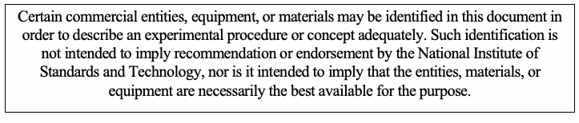
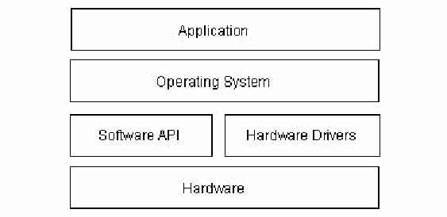
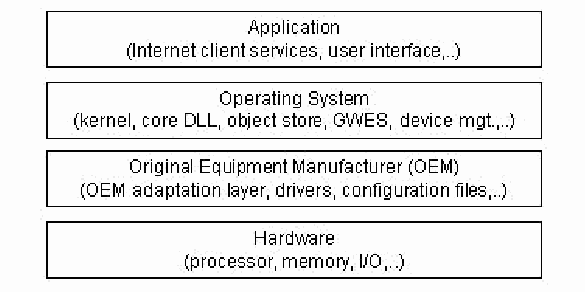
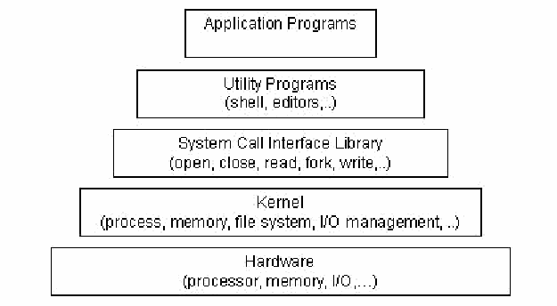
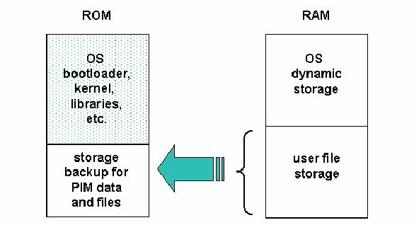
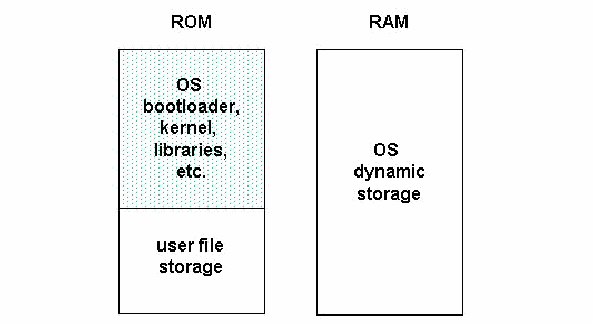

NIST Special Publication · PDF 原文抽出
Guidelines on PDA Forensics
携帯情報端末（PDA）のフォレンジックに関するガイドライン
NIST SP 800-72（Guidelines on PDA Forensics）の英文と日本語訳を段落ごとに並べた閲覧用ページです。PDAを扱う際の適切な方針・手順の策定を組織に促し、フォレンジック担当者が未知の端末や技術に対応できるよう支援します。Pocket PC、Palm OS、LinuxベースのPDAと関連OSを扱います。 翻訳は有志による非公式のもので、NIST および米国商務省が作成・承認・推奨したものではありません。要件の確認にはNIST の正式版 PDFを参照してください。
［NIST のロゴ。公的な標章のため、この非公式サイトには掲載していない。原本 PDF を参照。］
Special Publication 800-72
特別刊行物 800-72
Sponsored by the Department of Homeland Security
国土安全保障省（Department of Homeland Security）の支援による
Guidelines on PDA Forensics
PDAフォレンジックに関するガイドライン
Recommendations of the National Institute of Standards and Technology
米国国立標準技術研究所の勧告
Wayne Jansen
Wayne Jansen
Rick Ayers
Rick Ayers
PDAフォレンジックに関するガイドライン
Recommendations of the National Institute of Standards and Technology
米国国立標準技術研究所の勧告
Wayne Jansen
Rick Ayers
Wayne Jansen
Rick Ayers
C O M P U T E R S E C U R I T Y
コ ン ピ ュ ー タ セ キ ュ リ テ ィ
NIST特別刊行物800-72
Computer Security Division Information Technology Laboratory National Institute of Standards and Technology Gaithersburg, MD 20899-8930
コンピュータセキュリティ部門 情報技術研究所 米国国立標準技術研究所 メリーランド州ゲイサーズバーグ 20899-8930
November 2004
2004年11月
U.S. Department of Commerce Donald L. Evans, Secretary
米国商務省 ドナルド・L・エバンス長官
Technology Administration
技術局
Phillip J. Bond, Under Secretary for Technology
フィリップ・J・ボンド技術担当次官
National Institute of Standards and Technology Arden L. Bement, Jr., Director
米国国立標準技術研究所 アーデン・L・ビメント・ジュニア所長
Reports on Computer Systems Technology
コンピュータシステム技術に関する報告
The Information Technology Laboratory (ITL) at the National Institute of Standards and Technology (NIST) promotes the U.S. economy and public welfare by providing technical leadership for the Nation’s measurement and standards infrastructure. ITL develops tests, test methods, reference data, proof of concept implementations, and technical analysis to advance the development and productive use of information technology. ITL’s responsibilities include the development of technical, physical, administrative, and management standards and guidelines for the cost-effective security and privacy of sensitive unclassified information in Federal computer systems. This Special Publication 800-series reports on ITL’s research, guidance, and outreach efforts in computer security and its collaborative activities with industry, government, and academic organizations.
米国国立標準技術研究所（NIST）の情報技術研究所（ITL）は、米国の計測・標準インフラに技術的リーダーシップを発揮し、米国経済と公共の福祉を促進している。ITLは、情報技術の発展と生産的な利用を促すため、試験、試験方法、参照データ、概念実証実装および技術分析を開発している。また、連邦コンピュータシステム内の機密性のある非機密情報を費用対効果よく保護し、プライバシーを確保するための技術、物理、管理およびマネジメントに関する標準とガイドラインの策定も担っている。この特別刊行物800シリーズは、コンピュータセキュリティに関するITLの研究、指針、普及活動、および産業界、政府、学術機関との協力活動を報告するものである。
National Institute of Standards and Technology Special Publication 800-72 Natl. Inst. Stand. Technol. Spec. Publ. 800-72, 67 pages (2004)
米国国立標準技術研究所 特別刊行物800-72 米国国立標準技術研究所 特別刊行物800-72、67ページ（2004年）
Certain commercial entities, equipment, or materials may be identified in this document in order to describe an experimental procedure or concept adequately. Such identification is not intended to imply recommendation or endorsement by the National Institute of Standards and Technology, nor is it intended to imply that the entities, materials, or equipment are necessarily the best available for the purpose.
原本PDFの抜粋画像

実験手順または概念を適切に説明するため、この文書では特定の商業組織、装置、または材料が特定されている場合がある。そのような特定は、米国国立標準技術研究所による推奨または承認を意味するものではなく、また当該組織、材料、または装置がその目的に利用できる最良のものであることを必ずしも意味するものでもない。
Acknowledgements
謝辞
The authors, Wayne Jansen and Rick Ayers from NIST wish to express their thanks to colleagues who reviewed drafts of this document. In particular, their appreciation goes to Murugiah Souppaya and Tim Grance from NIST, Karen Kent from Booz-Allen-Hamilton, Barry Grundy from NASA – Office of Inspector General, Rick Mislan from Ferris State University, Joe Grand from Grand Idea Studio, and Eoghan Casey from Knowledge Solutions LLC for their research, technical support, and written contributions to this document. The authors would also like to express thanks to all others who assisted with our review process, including Susan Ballou from NIST’s Office of Law Enforcement Standards and those individuals who contributed input during the public comment period.
著者であるNISTのWayne JansenおよびRick Ayersは、本書の草稿をレビューした同僚に謝意を表する。特に、NISTのMurugiah SouppayaおよびTim Grance、Booz-Allen-HamiltonのKaren Kent、NASA監察総監室のBarry Grundy、フェリス州立大学のRick Mislan、Grand Idea StudioのJoe Grand、Knowledge Solutions LLCのEoghan Caseyには、調査、技術支援および本書への執筆協力について感謝する。また、NIST法執行基準室のSusan Ballouや、公開コメント期間中に意見を寄せた方々を含め、レビュー過程を支援してくれたすべての方々にも感謝する。
This work was sponsored by the Department of Homeland Security (DHS), whose support and guidance in this effort are greatly appreciated.
本作業は国土安全保障省（DHS）の後援を受けた。支援と指針に深く感謝する。
Table of Contents
目次
TABLE OF CONTENTS............................................................................................................. V
目次 — V
LIST OF FIGURES ....................................................................................................................VII
図一覧 — VII
LIST OF TABLES.................................................................................................................... VIII
表一覧 — VIII
EXECUTIVE SUMMARY — 1
概要 — 1
1. INTRODUCTION — 2
1. はじめに — 2
1.1 AUTHORITY — 2
1.1 権限 — 2
1.2 PURPOSE AND SCOPE — 2
1.2 目的と適用範囲 — 2
1.3 AUDIENCE AND ASSUMPTIONS — 3
1.3 想定読者と前提 — 3
1.4 DOCUMENT STRUCTURE — 3
1.4 文書の構成 — 3
2. BACKGROUND — 4
2. 背景 — 4
2.1 DEVICE CHARACTERISTICS — 4
2.1 デバイスの特性 — 4
2.2 PALM OS — 6
2.2 Palm OS — 6
2.3 POCKET PC — 9
2.3 Pocket PC — 9
2.4 LINUX — 12
2.4 Linux — 12
2.5 GENERIC STATES — 14
2.5 一般的な状態 — 14
3. FORENSIC TOOLS — 16
3. フォレンジックツール — 16
3.1 PALM DD (PDD) — 17
3.1 Palm DD（PDD）— 17
3.2 PILOT-LINK — 17
3.2 Pilot-Link — 17
3.3 POSE — 17
3.3 POSE — 17
3.4 PDA SEIZURE — 18
3.4 PDA Seizure — 18
3.5 ENCASE — 18
3.5 ENCASE — 18
3.6 DUPLICATE DISK (DD) — 19
3.6 Duplicate Disk（DD）— 19
3.7 MISCELLANEOUS TOOLS — 19
3.7 その他のツール — 19
3.8 CUSTOM TOOLS — 20
3.8 独自開発ツール — 20
4. PROCEDURES AND PRINCIPLES — 21
4. 手順と原則 — 21
4.1 ROLES AND RESPONSIBILITIES — 21
4.1 役割と責任 — 21
4.2 EVIDENTIAL PRINCIPLES — 22
4.2 証拠に関する原則 — 22
4.3 PROCEDURAL MODELS — 23
4.3 手順モデル — 23
5. PRESERVATION — 26
5. 保全 — 26
5.1 SEARCH — 28
5.1 捜索 — 28
5.2 RECOGNITION — 28
5.2 認識 — 28
5.3 DOCUMENTATION — 29
5.3 記録 — 29
5.4 COLLECTION — 30
5.4 収集 — 30
6. ACQUISITION — 35
6. 取得 — 35
6.1 UNOBSTRUCTED DEVICES — 36
6.1 操作を妨げられていない端末 — 36
6.2 OBSTRUCTED DEVICES — 38
6.2 操作が妨げられている端末 — 38
6.3 TANGENTIAL EQUIPMENT — 41
6.3 関連機器 — 41
7. EXAMINATION AND ANALYSIS — 45
7. 検査と分析 — 45
7.1 LOCATING EVIDENCE — 45
7.1 証拠の特定 — 45
7.2 APPLYING TOOLS — 47
7.2 ツールの適用 — 47
8. REPORTING — 50
8. 報告 — 50
9. REFERENCES — 52
9. 参考文献 — 52
APPENDIX A. ACRONYMS — 55
付録A. 略語 — 55
APPENDIX B. GLOSSARY — 57
付録B. 用語集 — 57
List of Figures
図の一覧
Figure 1: Generic Hardware Diagram — 5
図1：一般的なハードウェア構成図 — 5
Figure 2: Palm OS Architecture — 8
図2：Palm OSアーキテクチャ — 8
Figure 3: Windows CE Architecture — 10
図3：Windows CEアーキテクチャ — 10
Figure 4: Linux Architecture — 13
図4：Linuxアーキテクチャ — 13
Figure 5: Generic State Diagram — 15
図5：一般的な状態図 — 15
Figure 6: ROM/RAM Storage Assignments — 37
図6：ROM/RAMの記憶領域割当て — 37
Figure 7: Alternative ROM/RAM Assignments — 38
図7：ROM/RAMの代替記憶領域割当て — 38
表一覧
Table 1: An Overview of Representative PDA models..... 5
表1：代表的なPDAモデルの概要 — 5
Table 2: PDA Forensic Tools............................................ 16
表2：PDAフォレンジックツール — 16
Table 3: Action Matrix...................................................... 32
表3：アクションマトリックス — 32
Table 4: Interoperability Among Palm OS Tools............ 35
表4：Palm OSツール間の相互運用性 — 35
Table 5: Cross Reference of Sources and Objectives ...... 46
表5：情報源と目的の相互参照 — 46
概要
Personal Digital Assistants (PDAs) are a relatively recent phenomenon, not usually covered in classical computer forensics. This guide attempts to bridge that gap by providing an in-depth look into PDAs and explaining the technologies involved and their relationship to forensic procedures. It covers three families of devices – Pocket PC, Palm OS, and Linux-based PDAs – and the characteristics of their associated operating system. This guide also discusses procedures for the preservation, acquisition, examination, analysis, and reporting of digital information present on PDAs, as well as available forensic software tools that support those activities.
携帯情報端末（PDA）は比較的新しい種類の機器であり、従来のコンピュータフォレンジックでは通常扱われていなかった。本ガイドは、PDAを詳しく取り上げ、関連技術とフォレンジック手順との関係を説明することで、その隔たりを埋めることを目的としている。Pocket PC、Palm OS、LinuxベースのPDAという3種類の機器と、それぞれに関連するオペレーティングシステムの特性を扱う。また、PDA上のデジタル情報を保全、取得、検査、分析、報告する手順と、それらの活動を支援するフォレンジックソフトウェアツールについても説明する。
The objective of the guide is twofold: to help organizations evolve appropriate policies and procedures for dealing with PDAs, and to prepare forensic specialists to deal with new situations involving PDAs, when they are encountered. The guide is not all-inclusive nor is it a mandate for the law enforcement and incident response communities. However, from the principles outlined and other information provided, organizations should nevertheless find the guide helpful in setting policies and procedures.
本ガイドの目的は2つある。組織がPDAを扱うための適切な方針と手順を策定できるよう支援すること、そしてPDAに関する新たな状況が発生した際にフォレンジック担当者が対応できるよう準備することである。本ガイドはすべてを網羅するものではなく、法執行機関やインシデント対応関係者に義務を課すものでもない。ただし、示した原則やその他の情報を参考に、組織が方針と手順を定めるうえで役立てることができる。
The information in this guide is best applied in the context of current technology and practices. Every situation is unique, as are the experiences of the forensic specialists and the tools and facilities at their disposal. The judgment of the forensic specialists should be given deference in the implementation of the procedures suggested in this guide. Circumstances of individual cases and International, Federal, State, local laws/rules and organization-specific policies may also require actions other than those described in this guide. As always, close and continuing consultation with legal council is advised.
本ガイドの情報は、最新の技術と実務の状況に照らして適用するのが最適である。状況はそれぞれ異なり、フォレンジック担当者の経験や、利用できるツールと設備も異なる。本ガイドで提案する手順を適用する際は、フォレンジック担当者の判断を尊重すること。個々の事案の状況、国際・連邦・州・地方の法律や規則、組織固有の方針により、本ガイドに記載されたものとは異なる措置が必要となる場合もある。常に法律顧問と緊密かつ継続的に協議することを推奨する。
1. はじめに
1.1 Authority
1.1 権限
The National Institute of Standards and Technology (NIST) developed this guide in furtherance of its statutory responsibilities under the Federal Information Security Management Act (FISMA) of 2002, Public Law 107-347.
米国国立標準技術研究所（NIST）は、2002年連邦情報セキュリティマネジメント法（FISMA、Public Law 107-347）に基づく法定責任を果たすため、本ガイドを作成した。
NIST is responsible for developing standards and guidelines, including minimum requirements, for providing adequate information security for all Federal agency operations and assets; but such standards and guidelines shall not apply to national security systems. This guideline is consistent with the requirements of the Office of Management and Budget (OMB) Circular A-130, Section 8b(3), “Securing Agency Information Systems,” as analyzed in A-130, Appendix IV: Analysis of Key Sections. Supplemental information is provided in A-130, Appendix III.
NISTは、すべての連邦機関の業務と資産に十分な情報セキュリティを提供するため、最低要件を含む標準およびガイドラインを策定する責任を負う。ただし、そのような標準およびガイドラインを国家安全保障システムに適用してはならない。本ガイドラインは、A-130付録IV「主要節の分析」で分析されている、行政管理予算局（OMB）通達A-130第8b(3)節「機関情報システムの保護」の要件と整合している。補足情報はA-130付録IIIに記載されている。
This guide has been prepared for use by Federal agencies. It may be used by nongovernmental organizations on a voluntary basis and is not subject to copyright, though attribution is desired.
本ガイドは連邦機関で使用するために作成された。政府機関以外の組織も任意で使用できる。著作権の対象ではないが、出典を明記することが望まれる。
Nothing in this guide should be taken to contradict standards and guidelines made mandatory and binding on Federal agencies by the Secretary of Commerce under statutory authority, nor should these guidelines be interpreted as altering or superseding the existing authorities of the Secretary of Commerce, Director of the OMB, or any other Federal official.
本ガイドのいかなる内容も、法的権限に基づいて商務長官が連邦機関に義務付け、拘束力を持たせた標準やガイドラインに反すると解釈してはならない。また、本ガイドラインを、商務長官、OMB長官またはその他の連邦政府職員が有する既存の権限を変更または置き換えるものと解釈してはならない。
1.2 Purpose and Scope
1.2 目的と適用範囲
This guide provides basic information on the preservation, examination, and analysis of digital evidence on PDAs, relevant to law enforcement, incident response, and other types of investigations. The guide focuses mainly on the characteristics of the following families of PDAs: Pocket PC, Palm OS, and Linux-based PDAs. It also covers provisions to be taken into consideration during the course of an incident investigation, including evidence handling, device identification, content acquisition, documentation, and reporting.
本ガイドは、法執行、インシデント対応およびその他の調査に関係する、PDA上のデジタル証拠の保全、検査、分析に関する基本情報を示す。主にPocket PC、Palm OS、LinuxベースのPDAという機器群の特性を扱う。また、インシデント調査の過程で考慮すべき証拠の取扱い、端末の特定、内容の取得、記録、報告も取り上げる。
The guide is intended to address common circumstances that may be encountered by organizational security staff and law enforcement investigators, involving digital electronic data residing on PDAs and associated electronic media. It is also intended to compliment existing guidelines and delve more deeply into issues related to PDAs and their examination and analysis.
本ガイドは、PDAおよび関連する電子媒体に保存されたデジタル電子データを扱う際、組織のセキュリティ担当者や法執行機関の捜査官が直面し得る一般的な状況を対象とする。また、既存のガイドラインを補完し、PDAとその検査・分析に関する問題をより詳しく扱うことを目的としている。
Procedures and techniques presented in this document are a compilation of the authors’ opinions and references taken from existing forensic guidelines. The publication is not to be used as a step-by-step guide for executing a proper forensic investigation when dealing with new technologies such as PDAs or construed as legal advice. Its purpose is to inform readers of various technologies and potential ways to approach them from a forensic point of view. Readers are advised to apply the recommended practices only after consultation with management and legal officials for compliance with laws and regulations (i.e., local, state, federal, and international) that pertain to their situation.
本書に示す手順と技法は、著者の見解と既存のフォレンジックガイドラインから引用した情報をまとめたものである。本書は、PDAなどの新技術を扱う適切なフォレンジック調査を実行するための逐次手順書として使用するものでも、法的助言とみなすものでもない。さまざまな技術と、フォレンジックの観点からそれらに取り組む方法を読者に伝えることを目的とする。読者は、該当する法律や規則（地方、州、連邦、国際レベル）を遵守するため、推奨される実務を適用する前に、管理者および法律担当者に相談すること。
1.3 Audience and Assumptions
1.3 想定読者と前提
The intended audience is varied and ranges from response team members handling a computer security incident to organizational security officials investigating an employee-related situation to forensic examiners involved in criminal investigations. The practices recommended in this guide are designed to highlight key principles associated with the handling and examination of electronic evidence, in general, and PDAs in particular. Readers are assumed to have a basic grounding in classical computer forensics involving individual computer systems (e.g., personal computers) and network servers. Because of the constantly changing nature of handheld devices and related forensic procedures and tools, readers are expected to take advantage of other resources, including those listed in this guide, for more current and detailed information.
想定読者は幅広く、コンピュータセキュリティインシデントに対応するチームメンバー、従業員に関する事案を調査する組織のセキュリティ担当者、犯罪捜査に携わるフォレンジック検査担当者などである。本ガイドで推奨する実務は、電子証拠全般、特にPDAを扱い検査する際の主要な原則を示すことを目的としている。読者は、個人用コンピュータなどの個別のコンピュータシステムやネットワークサーバーを対象とする従来のコンピュータフォレンジックの基礎知識を持つものとする。携帯端末と関連するフォレンジック手順・ツールは絶えず変化するため、読者は本ガイドに記載されたものを含む他の情報源も活用し、より新しく詳細な情報を得ることが想定されている。
1.4 Document Structure
1.4 文書の構成
The guide is divided into the following nine sections:
本ガイドは、次の9つの節で構成されている。
•Section 1 (this section) explains the authority, purpose and scope, audience and assumptions of the document, and outlines its structure.
•第1節（本節）では、本書の権限、目的と適用範囲、想定読者と前提を説明し、構成を示す。
•Section 2 is an overview on PDAs, including an overview of common operating systems and generic operating states.
•第2節では、PDA、一般的なオペレーティングシステム、および汎用的な動作状態の概要を説明する。
•Section 3 discusses present-day PDA forensic tools and with which types of devices they work.
•第3節では、現在利用されているPDAフォレンジックツールと、それぞれが対応する機器の種類を説明する。
•Section 4 provides general information on procedures and principles that apply to PDA forensics.
•第4節では、PDAフォレンジックに適用される手順と原則の一般情報を示す。
•Section 5 discusses considerations for preserving digital evidence associated with PDAs.
•第5節では、PDAに関連するデジタル証拠を保全する際の考慮事項を説明する。
•Section 6 examines the process of acquisition of digital evidence from PDAs, as well as from common types of peripheral equipment.
•第6節では、PDAおよび一般的な周辺機器からデジタル証拠を取得する手順を検討する。
•Section 7 outlines common sources of evidence on PDAs and the features and capabilities of tools for examination.
•第7節では、PDA上の一般的な証拠の所在と、検査ツールの機能および能力を概説する。
•Section 8 discusses the reporting of findings.
•第8節では、調査結果の報告について説明する。
•Section 9 contains a list of references used in this guide.
•第9節には、本ガイドで使用した参考文献の一覧を掲載する。
•Appendix A contains a list of acronyms used in this guide.
•付録Aには、本ガイドで使用する略語の一覧を掲載する。
•Appendix B contains a glossary defining terms used in this guide.
•付録Bには、本ガイドで使用する用語を定義した用語集を掲載する。
2. 背景
The digital forensic community faces a constant challenge to stay on top of the latest technologies that may be used to reveal relevant clues in an investigation. Personal Digital Assistants (PDAs) are commonplace in today’s society, used by many individuals for both personal and professional purposes. PDAs vary in design and are continually undergoing change as existing technologies improve and new technologies are introduced. When a PDA is encountered during an investigation, many questions arise: What should be done about maintaining power? How should the PDA be handled? How should valuable or potentially relevant data contained on the device be examined? The key to answering these questions is an understanding of the hardware and software characteristics of PDAs.
デジタルフォレンジック分野では、調査に役立つ手掛かりを明らかにし得る最新技術に常に対応する必要がある。携帯情報端末（PDA）は現在の社会に広く普及し、個人や業務の用途で多くの人に使われている。PDAは設計がさまざまで、既存技術の改良や新技術の導入に伴って変化し続けている。調査中にPDAが見つかった場合、電源をどう維持するか、端末をどう扱うか、端末に保存された重要または関連する可能性のあるデータをどう検査するかなど、多くの疑問が生じる。これらに答えるには、PDAのハードウェアとソフトウェアの特性を理解することが重要である。
This section gives an overview of the hardware and software capabilities of Palm OS, Pocket PC, and Linux-based PDAs. The overview provides a summary of general characteristics and, where useful, focuses on a particular model or software version that best illustrates key features of such products. Developing an understanding of the components and inner workings of these devices (e.g., memory organization and use) is a prerequisite to understanding the criticalities involved when dealing with them forensically. For example, PDA memory used to store user data is usually volatile (i.e., RAM) and requires continuous power to maintain content, unlike data residing on a personal computer’s hard disk. Handheld device technologies are changing rapidly, with new products and features being introduced regularly. Because of the fast pace with which handheld device technologies are evolving, this discussion represents a snapshot of the handheld area at the present time.
本節では、Palm OS、Pocket PC、LinuxベースのPDAのハードウェアとソフトウェアの機能を概説する。一般的な特性をまとめ、必要に応じて、製品の主要機能を最もよく示す特定のモデルまたはソフトウェアバージョンを取り上げる。部品や端末内部の動作（メモリの構成と使用方法など）を理解することは、フォレンジック調査で重要となる問題を理解する前提である。たとえば、ユーザーデータの保存に使われるPDAメモリは通常揮発性（RAM）であり、内容を保持するために継続的な電源供給が必要である。これはパーソナルコンピュータのハードディスクに保存されたデータとは異なる。携帯端末の技術は急速に変化し、新しい製品や機能が定期的に登場する。その進化の速さを踏まえ、本節の説明は現時点における携帯端末分野のスナップショットとして示す。
2.1 Device Characteristics
2.1 端末の特性
Most types of PDAs have comparable features and capabilities. They house a microprocessor, read only memory (ROM), random access memory (RAM), a variety of hardware keys and interfaces, and a touch sensitive, liquid crystal display. The operating system (OS) of the device is held in ROM. Several varieties of ROM are used, including Flash ROM, which can be erased and reprogrammed electronically with OS updates or an entirely different OS. RAM, which normally contains user data, is kept active by batteries whose failure or exhaustion causes all information to be lost.
多くの種類のPDAは、同等の機能と能力を備えている。マイクロプロセッサ、読み出し専用メモリ（ROM）、ランダムアクセスメモリ（RAM）、各種のハードウェアキーとインタフェース、およびタッチセンサー式の液晶ディスプレイを搭載する。端末のオペレーティングシステム（OS）はROMに格納されている。ROMには複数の種類があり、たとえばフラッシュROMは、OSの更新や別のOSへの置換のために電子的に消去・再プログラムできる。通常ユーザーデータを格納するRAMはバッテリーで通電状態に保たれており、バッテリーが故障または消耗すると、すべての情報が失われる。
The latest PDAs come equipped with system-level microprocessors that reduce the number of supporting chips required and include considerable memory capacity. Built-in Compact Flash (CF) and combination Secure Digital (SD)1/MultiMedia Card (MMC) 2 slots support memory cards and peripherals, such as a digital camera or wireless communications card. Wireless communications such as infrared (i.e., IrDA), Bluetooth, and WiFi may also be built in. Figure 1 illustrates a system-level processor chip and the generic core components of most PDAs.
最新のPDAには、必要な周辺チップの数を減らし、大容量のメモリを備えたシステムレベルのマイクロプロセッサが搭載されている。内蔵のコンパクトフラッシュ（CF）スロットや、Secure Digital（SD）¹／マルチメディアカード（MMC）²の複合スロットは、メモリカードやデジタルカメラ、無線通信カードなどの周辺機器に対応する。赤外線（IrDA）、Bluetooth、Wi-Fiなどの無線通信機能が内蔵されている場合もある。図1は、システムレベルのプロセッサチップと、多くのPDAに共通する基本構成部品を示す。
![Figure 1: Generic Hardware Diagram. At the center is a large box “Processor”. Inside it are Power Manager, Memory Controller and LCD Controller along the top, IrDA, CF and SD along the left side, a Core block in the middle, Bluetooth at the right, and USB, UART and Power along the bottom. Above the processor, ROM and RAM are each joined by a double-headed arrow to a horizontal bus, which is joined to the processor by a double-headed arrow. On the left, a red oval icon, a CompactFlash card and an SD card are joined by double-headed arrows to IrDA, CF and SD. On the right, an arrow leads from LCD Controller to a picture of a handheld screen; the processor is joined by a double-headed arrow to a Codec box, which sends output to a speaker and receives input from a microphone; Bluetooth is joined by a double-headed arrow to a Bluetooth symbol; and a dotted line joins Power to a battery. Below, USB and UART are joined by double-headed arrows to a rounded box “Cradle Connector”, and a dotted line also joins Power to the Cradle Connector.](assets/sp800-72/p0013-drawing-01.png)
図1：一般的なハードウェア構成図。中央に大きな箱「プロセッサ（Processor）」がある。その中には、上部に電源マネージャ（Power Manager）、メモリコントローラ（Memory Controller）、LCDコントローラ（LCD Controller）、左側にIrDA、CF、SD、中央にコア（Core）、右側にBluetooth、下部にUSB、UART、電源（Power）がある。プロセッサの上では、ROMとRAMがそれぞれ双方向の矢印で水平のバスにつながり、バスは双方向の矢印でプロセッサにつながる。左側では、赤い楕円のアイコン、コンパクトフラッシュカード、SDカードが、双方向の矢印でIrDA、CF、SDにつながる。右側では、LCDコントローラから携帯端末の画面の絵へ矢印が出ている。プロセッサは双方向の矢印でコーデック（Codec）の箱につながり、コーデックはスピーカーへ出力し、マイクから入力を受ける。Bluetoothは双方向の矢印でBluetoothの記号につながり、電源は点線で電池につながる。下では、USBとUARTが双方向の矢印で角の丸い箱「クレードル接続端子（Cradle Connector）」につながり、電源も点線でクレードル接続端子につながる。
Figure 1: Generic Hardware Diagram
図1：一般的なハードウェア構成図
Different devices have different technical and physical characteristics (e.g., size, weight, processor speed, memory capacity). Devices may also use different types of expansion capabilities (e.g., I/O and memory card slots, device expansion sleeves, and external hardware interfaces) to provide additional functionality. Furthermore, PDA capabilities are sometimes combined with those of other devices such as cell phones, global positioning systems, and cameras to form new types of hybrid devices. Table 1 highlights the general characteristics of selected Palm OS, Pocket PC (rebranded as Windows Mobile in 2003), and Linux PDA models, which highlight this diversity. Characteristics of a wider range of PDAs can be found on manufacturer and vendor Web sites, as well as product review sites.3,4
端末ごとに、サイズ、重量、プロセッサ速度、メモリ容量などの技術的・物理的特性は異なる。また、入出力やメモリカード用スロット、拡張スリーブ、外部ハードウェアインタフェースなど、機能を追加するための拡張機能の種類も異なる。さらに、PDAの機能が携帯電話、全地球測位システム（GPS）、カメラなど他の機器と組み合わされ、新しい種類のハイブリッド端末となる場合もある。表1は、Palm OS、Pocket PC（2003年にWindows Mobileへ名称変更）、Linuxを搭載した代表的なPDAモデルの一般特性を示し、その多様性を明らかにする。より幅広いPDAの特性は、メーカーや販売業者のWebサイト、製品レビューサイトで確認できる。³,⁴
Table 1: An Overview of Representative PDA Models
表1：代表的なPDAモデルの概要
| Tungsten T2 | iPAQ H5555 | Zaurus SL-5600 | |
|---|---|---|---|
| OS | Palm OS 5.2.1 | Windows Mobile 2003 Premium | Linux Embedix v2.4.18, Qtopia v1.5.0 |
| Processor | 144 MHz TI OMAP 1510 Dual core 192 Mhz DSP enhanced ARM-based | 400 MHz Intel PXA-255 XScale | 400 MHz Intel PXA-250 Xscale |
| Tungsten T2 | iPAQ H5555 | Zaurus SL-5600 | |
|---|---|---|---|
| OS | Palm OS 5.2.1 | Windows Mobile 2003 Premium | Linux Embedix v2.4.18、Qtopia v1.5.0 |
| プロセッサ | 144 MHz TI OMAP 1510 デュアルコア 192 Mhz DSP拡張ARMベース | 400 MHz Intel PXA-255 XScale | 400 MHz Intel PXA-250 Xscale |
| Tungsten T2 | iPAQ H5555 | Zaurus SL-5600 | |
|---|---|---|---|
| ROM | 8 MB Flash ROM | 48 MB Flash ROM (17 MB available for user storage) | 64 MB Flash ROM (approx. 30-35 MB for user filesystem) |
| RAM | 32 MB SDRAM | 128 MB SDRAM | 32 MB SDRAM |
| Size | 4.0” x 3.0” x 0.6” | 5.43" x 3.3" x .63" | 5.4” x 2.9" x 0.9" |
| Display | 320x320, transflective Thin Film Transistor (TFT) LCD, 65,536 colors | 240x320, transflective TFT LCD, 65,536 colors | 240x320, reflective TFT LCD, 65,536 colors |
| Text Input | Touch-screen, Handwriting recognition, Soft keyboard | Touch-screen, Handwriting recognition, Soft keyboard | Touch screen, Handwriting recognition, Built-in QWERTY-style keyboard |
| Wireless | IrDA, Bluetooth | IrDA, CIR, Bluetooth, Wi-Fi | IrDA |
| Card Slots | SD/MMC slot | SD/MMC slot Type II CF slot | SD/MMC slot Type II CF slot |
| Expansion | None | Optional expansion sleeves for PCMCIA cards, CF cards, and accessories | Expansion jacket with CF slot and battery USB 1.1 host connector (mini type A) |
| Battery | 1 fixed, rechargeable Lithium Ion Polymer | 1 removable, rechargeable Lithium Ion Polymer | 1 removable, rechargeable Lithium Ion |
| Tungsten T2 | iPAQ H5555 | Zaurus SL-5600 | |
|---|---|---|---|
| ROM | 8 MB フラッシュROM | 48 MB フラッシュROM（ユーザー用ストレージとして17 MBを利用可能） | 64 MB フラッシュROM（ユーザーファイルシステム用に約30～35 MB） |
| RAM | 32 MB SDRAM | 128 MB SDRAM | 32 MB SDRAM |
| 寸法 | 4.0” x 3.0” x 0.6” | 5.43" x 3.3" x .63" | 5.4” x 2.9" x 0.9" |
| ディスプレイ | 320x320、65,536色、半透過型薄膜トランジスタ（TFT）LCD | 240x320、65,536色、半透過型TFT LCD | 240x320、65,536色、反射型TFT LCD |
| テキスト入力 | タッチスクリーン、手書き認識、ソフトウェアキーボード | タッチスクリーン、手書き認識、ソフトウェアキーボード | タッチスクリーン、手書き認識、QWERTY配列の内蔵キーボード |
| 無線通信 | IrDA、Bluetooth | IrDA、CIR、Bluetooth、Wi-Fi | IrDA |
| カードスロット | SD/MMCスロット | SD/MMCスロット、Type II CFスロット | SD/MMCスロット、Type II CFスロット |
| 拡張 | なし | PCMCIAカード、CFカード、およびアクセサリ用のオプション拡張スリーブ | CFスロットとバッテリーを備えた拡張ジャケット、USB 1.1ホストコネクタ（mini type A） |
| バッテリー | 固定式、充電式リチウムイオンポリマー電池1個 | 着脱式、充電式リチウムイオンポリマー電池1個 | 着脱式、充電式リチウムイオン電池1個 |
Despite the PDA family, all devices support a set of basic Personal Information Management (PIM) applications, which provide Address Book, Appointment, Mailbox, and Memo Management capabilities. Most devices also provide the ability to communicate wirelessly, review electronic documents, and surf the Web. PIM data residing on a PDA can be synchronized with a desktop computer and automatically reconciled and replicated between the two devices, using synchronization protocols such as Microsoft’s Pocket PC ActiveSync protocol and Palm’s HotSync protocol. Synchronization protocols can also be used to exchange other kinds of data (e.g., individual text, images, and archive file formats). Information not obtainable directly from the PDA can often be retrieved from a personal computer to which the device has been synchronized [Cas04].
PDAの機種にかかわらず、すべての端末は、住所録、予定表、メールボックス、メモを管理する基本的な個人情報管理（PIM）アプリケーション群をサポートする。ほとんどの端末は、無線通信、電子文書の閲覧、Webの閲覧にも対応する。PDA上のPIMデータはデスクトップコンピュータと同期でき、MicrosoftのPocket PC ActiveSyncプロトコルやPalmのHotSyncプロトコルなどを使って、両端末間で自動的に照合・複製できる。同期プロトコルは、個々のテキスト、画像、アーカイブファイル形式など、他の種類のデータ交換にも利用できる。PDAから直接取得できない情報も、その端末と同期したパーソナルコンピュータから取得できる場合がある[Cas04]。
2.2 Palm OS
2.2 Palm OS
Palm established itself early in the PDA market with devices built around its operating system, Palm OS. Early Palm OS devices use 16- and 32-bit processors based on the Motorola DragonBall MC68328-family of microprocessors. More recent devices use StrongArm and XScale microprocessors.5 Older Palm OS devices tend to be driven by alkaline batteries instead of lithium-ion batteries, used in new models.
Palmは、独自のオペレーティングシステムPalm OSを搭載した端末により、PDA市場で早くから地位を確立した。初期のPalm OS端末には、Motorola DragonBall MC68328ファミリーのマイクロプロセッサを基にした16ビットおよび32ビットのプロセッサが使われていた。より新しい端末ではStrongArmおよびXScaleマイクロプロセッサが使われている。⁵ 古いPalm OS端末では、新しいモデルで使われているリチウムイオン電池ではなく、アルカリ電池を使用する傾向がある。
The Palm OS and built-in applications are stored in ROM, while application and user data are stored in RAM. Add-on utilities also exist to back up PIM data (e.g., Address Book, Date Book, To Do List, Memo Pad) onto available ROM [Bob04, Pie99]. Palm OS system software logically organizes ROM and RAM for a handheld device into one or more memory modules known as a card. Each memory card can contain ROM, RAM, or both. A handheld device can have one card, multiple cards, or no cards. The main suite of applications provided with each Palm OS powered handheld is built into ROM. This design permits the user to replace the operating system and the entire application suite by installing a single replacement module. Additional or replacement applications and system extensions can be loaded into RAM.
Palm OSと組み込みアプリケーションはROMに、アプリケーションとユーザーデータはRAMに格納される。PIMデータ（住所録、日付帳、To Doリスト、メモ帳など）を利用可能なROMにバックアップする追加ユーティリティも存在する[Bob04, Pie99]。Palm OSのシステムソフトウェアは、携帯端末のROMとRAMを論理的に整理し、1つ以上の「カード」と呼ばれるメモリモジュールに分ける。各メモリカードにはROM、RAM、またはその両方を格納できる。携帯端末にはカードが1枚、複数枚、または搭載されていない場合がある。Palm OS搭載端末に付属するアプリケーション一式はROMに組み込まれている。この設計では、交換用モジュールを1つ取り付けることで、オペレーティングシステムとアプリケーション一式全体を置き換えられる。追加または交換するアプリケーションやシステム拡張機能はRAMに読み込める。
The Palm OS divides the total available RAM store into two logical areas: dynamic RAM and storage RAM. Dynamic RAM is used as working space for temporary allocations, and is analogous to the RAM installed in a typical desktop system. The remainder of the available RAM on the card is designated as storage RAM and is analogous to disk storage on a typical desktop system. Because power is always applied to the memory system, both areas of RAM preserve their contents when the device is turned "off" (i.e., is in low-power sleep mode). All of the storage memory is preserved even when the device is reset explicitly (i.e., manually pressing the reset button to perform a warm boot). As part of the warm boot sequence (i.e., a soft reset), the system software reinitializes the dynamic area, and leaves the storage area intact. The entire area of dynamic RAM is used to implement a single collection of free storage or heap that provides memory for dynamic allocations such as global variables, system buffers (e.g., TCP/IP, IrDA communications), and application stacks. Storage RAM is configured as one or more storage heaps used to hold non-volatile user data. Storage heaps may also be ROM-based. As part of the cold boot sequence (i.e., a hard reset), in addition to reinitializing the dynamic area of RAM, the storage area is erased [PPC04].
Palm OSは、利用可能なRAM全体を、動的RAMとストレージRAMという2つの論理領域に分ける。動的RAMは一時的な割当ての作業領域として使われ、一般的なデスクトップシステムのRAMに相当する。カード上で利用可能な残りのRAMはストレージRAMに割り当てられ、一般的なデスクトップシステムのディスクストレージに相当する。メモリシステムには常時電力が供給されるため、端末を「オフ」（低消費電力のスリープモード）にしても両領域の内容は保持される。端末を明示的にリセット（リセットボタンを手動で押してウォームブート）した場合も、ストレージメモリ全体が保持される。ウォームブート（ソフトリセット）では、システムソフトウェアが動的領域を再初期化し、ストレージ領域はそのまま残す。動的RAM領域全体は、グローバル変数、システムバッファ（TCP/IPやIrDA通信など）、アプリケーションスタックなどの動的割当てに使う単一の空きストレージまたはヒープとして実装される。ストレージRAMは、不揮発性ユーザーデータを保持する1つ以上のストレージヒープとして構成される。ストレージヒープがROMに基づく場合もある。コールドブート（ハードリセット）では、RAMの動的領域を再初期化するだけでなく、ストレージ領域も消去する[PPC04]。
Palm OS storage memory is arranged in chunks called “records,” which are grouped into “databases.” The Palm OS “databases” can be thought of as files. The Palm file format (PFF) conforms to one of the three types defined below [Hil03]:
Palm OSのストレージメモリは「レコード」と呼ばれる単位に分割され、それらが「データベース」にまとめられる。Palm OSの「データベース」はファイルと考えることができる。Palmファイル形式（PFF）は、以下に定義する3種類のいずれかに該当する[Hil03]。
•Palm Database – A record database used to store application data, such as contact lists, or user specific data.
•Palm Database：連絡先リストなどのアプリケーションデータや、ユーザー固有のデータを格納するレコード型データベース。
•Palm Resource – A database similar to the Palm Database that contains application code and user interface objects.
•Palm Resource：Palm Databaseに似たデータベースで、アプリケーションコードとユーザーインタフェースオブジェクトを格納する。
•Palm Query Application – A database that contains world-wide-web content for use with Palm OS wireless devices.6
•Palm Query Application：Palm OS無線通信端末で使用するWebコンテンツを格納するデータベース。⁶
With Palm OS, because all applications share the same dynamic RAM, they can interfere with each other’s data. Buffer overflow attacks are also easily implemented [Ket00].
Palm OSではすべてのアプリケーションが同じ動的RAMを共有するため、互いのデータに干渉する可能性がある。また、バッファオーバーフロー攻撃も容易に実行できる[Ket00]。
The latest Palm OS PDAs offer two expansion modes for providing an increase in functionality: the Palm Universal Connector System and Palm Expansion Card Slot. The Universal Connector System allows GPS receivers, wireless modems, keyboards, and other peripherals to interact with the device via a USB enabled connection. The Palm Expansion Card Slot accommodates MultiMediaCard (MMC) and Secure Digital (SD) cards. MMC card modules are removable solid-state memory of similar size and design to SD memory Cards.
最新のPalm OS PDAには、機能を拡張するための2種類の拡張方式がある。Palm Universal Connector Systemは、USB対応接続を介してGPS受信機、無線モデム、キーボードなどの周辺機器を端末に接続できる。Palm Expansion Card Slotには、マルチメディアカード（MMC）とSDカードを装着できる。MMCカードモジュールは、SDメモリカードと同程度のサイズと設計を持つ着脱式ソリッドステートメモリである。
Besides memory, SD cards may also incorporate other types of peripherals such as wireless communications or camera cards.
メモリに加えて、SDカードには無線通信機能やカメラなどの周辺機器を組み込める場合もある。
The architecture for Palm OS devices is organized into the following layers: Application, Operating System, Software API and Hardware Drivers, and Hardware. Figure 2 illustrates the relationship between layers. The software Application Programming Interface (API) gives software developers a degree of hardware independence, allowing applications to execute under different hardware environments by recompiling the application. Developers have the freedom to bypass the API and directly access the processor, providing more control of the processor and its functionality. However, this comes at the expense of increased security risks due to malicious applications. The Palm OS does not implement permissions on code and data. Therefore, any application can access and modify data [Kin01].
Palm OS端末のアーキテクチャは、アプリケーション、オペレーティングシステム、ソフトウェアAPIとハードウェアドライバ、ハードウェアの各層で構成される。各層の関係を図2に示す。ソフトウェアのアプリケーションプログラミングインタフェース（API）により、開発者はある程度ハードウェアから独立したアプリケーションを作成できる。アプリケーションを再コンパイルすれば、異なるハードウェア環境でも実行できるためである。開発者はAPIを迂回してプロセッサに直接アクセスし、プロセッサとその機能をより細かく制御することもできる。ただし、悪意のあるアプリケーションによるセキュリティリスクが高まる。Palm OSはコードとデータに対するアクセス許可を実装していない。そのため、任意のアプリケーションがデータにアクセスし、変更できる[Kin01]。

図2：Palm OSアーキテクチャ。箱で描いた4つの層が上から順に積み重なっている。「Application」（アプリケーション）、「Operating System」（オペレーティングシステム）、左右2つの箱に分かれた層（左が「Software API」（ソフトウェアAPI）、右が「Hardware Drivers」（ハードウェアドライバ））、「Hardware」（ハードウェア）である。
Figure 2: Palm OS Architecture
図2：Palm OSアーキテクチャ
Other handheld device manufacturers have licensed the Palm OS for use in their own line of equipment. Versions of the Palm OS can be divided into three ranges: those before version 4.0, those from version 4.0 to 5.0, and those from 5.0 onward to version 6. Initially Palm OS supported simple multitasking whereby applications could run only one at a time, and were single-threaded. More recent versions support full multitasking and multi-threaded applications. A number of vulnerabilities were identified in versions before 4.0 and subsequently fixed. In particular, the user login password was shown to be vulnerable and easily reversed [Kin01]. Version 4.0 also introduced initial support for filesystems on removable memory cards. Versions before 5.0 execute only a single program at a time, while 5.0 and after support multiprocessing. Versions 5.0 and above switched emphasis away from the DragonBall family of microprocessors to the StrongArm family7, with emulation support of legacy applications previously developed for DragonBall.
他の携帯端末メーカーも、自社製品への採用のためPalm OSのライセンスを取得した。Palm OSのバージョンは、4.0より前、4.0から5.0まで、5.0以降からバージョン6までの3つの範囲に分けられる。当初、Palm OSは単純なマルチタスクをサポートしており、アプリケーションは一度に1つだけ実行でき、各アプリケーションは単一スレッドであった。より新しいバージョンでは、完全なマルチタスクとマルチスレッドアプリケーションがサポートされている。4.0より前のバージョンでは複数の脆弱性が特定され、その後修正された。特に、ユーザーのログインパスワードは脆弱で、容易に逆算できることが示された[Kin01]。バージョン4.0では、リムーバブルメモリカード上のファイルシステムが初めてサポートされた。5.0より前のバージョンは一度に1つのプログラムだけを実行するが、5.0以降ではマルチプロセッシングがサポートされている。バージョン5.0以降は、DragonBallファミリーのマイクロプロセッサからStrongArmファミリー⁷のマイクロプロセッサへと重点を移し、DragonBall向けに開発された旧式アプリケーションをエミュレーションでサポートする。
Palm OS devices offer built-in security features to provide protection for individual entries/records and the ability to lock the device when the user turns the device off. Locking individual records allow users to mark records as private and not be displayed unless the proper password is provided. However, records marked private can be accessed, read, and copied through other means [Ket00]. The ability to lock a device requires users to enter the correct password before access is granted to the application screen. In early versions of Palm OS, weak password encoding is easily reversed and the encoded block of data that contains the password during a HotSync can be intercepted [Kin01]. Third party products exist that give users the ability to encrypt sensitive data and enhance overall security [Pmd02].
Palm OS端末には、個々のレコードを保護する機能や、ユーザーが端末をオフにしたときに端末をロックする機能など、組み込みのセキュリティ機能がある。個々のレコードをロックすると、ユーザーはレコードを非公開として指定でき、正しいパスワードが入力されるまで表示されない。ただし、非公開に指定したレコードも、別の方法でアクセス、読み取り、コピーできる場合がある[Ket00]。端末のロックを有効にすると、アプリケーション画面へアクセスする前に正しいパスワードの入力が求められる。初期のPalm OSでは、弱いパスワード符号化を容易に逆算でき、HotSync中にパスワードを含む符号化データブロックを傍受できた[Kin01]。機密データを暗号化し、全体的なセキュリティを強化するサードパーティ製品もある[Pmd02]。
Palm OS devices include an RS232-based “Palm Debugger” providing source and assembly level debugging, entered by issuing a keystroke combination. Two interfaces exist that monitor the serial port for communication. “Console Mode” interacts with a high-level debugger and is used mostly for manipulation of databases. “Debug Mode” is typically used for assembly and register-level debugging [Kin01].
Palm OS端末には、キー操作の組合せで起動するRS232ベースの「Palm Debugger」があり、ソースレベルとアセンブリレベルのデバッグを行える。シリアルポートで通信を監視するインタフェースが2つある。「Console Mode」は高水準デバッガとやり取りし、主にデータベースの操作に使われる。「Debug Mode」は通常、アセンブリおよびレジスタレベルのデバッグに使われる[Kin01]。
2.3 Pocket PC
2.3 Pocket PC
Pocket PC grew out of the success of the Palm PDA and the growing demand for similar devices that had more processing power and networking capabilities. Microsoft entered the handheld device market with the Windows CE (WinCE) operating system, which was later augmented with additional functionality to produce Pocket PC (PPC).8 Windows CE supports a multitasking, multithreaded environment, which is inherited by Pocket PC. Applications running under Windows CE are protected from interfering with each other through memory management [Ket00]. Windows CE and PPC have evolved in tandem from versions WinCE 2.0/PPC 2000 to WinCE 3.0/PPC 2002 to WinCE 4.2/PPC 2003 (PPC 2003 was rebranded as Windows Mobile 2003), through a number of feature upgrades. For example, early versions of ActiveSync were susceptible to brute force password attacks and denial of service attacks when synchronizing over a network [Meu02] and subsequently corrected. Vulnerabilities present on earlier devices may provide a means of bypassing security mechanisms, allowing forensic investigators access to data.
Pocket PCは、Palm PDAの成功と、より高い処理能力やネットワーク機能を備えた同種端末への需要拡大を受けて登場した。MicrosoftはWindows CE（WinCE）オペレーティングシステムで携帯端末市場に参入し、後に機能を追加してPocket PC（PPC）を開発した。⁸ Windows CEが備えるマルチタスクおよびマルチスレッド環境はPocket PCにも引き継がれている。Windows CE上で動作するアプリケーションは、メモリ管理によって互いに干渉しないよう保護される[Ket00]。Windows CEとPPCは、WinCE 2.0/PPC 2000からWinCE 3.0/PPC 2002、さらにWinCE 4.2/PPC 2003（PPC 2003はWindows Mobile 2003に名称変更）へと、機能を段階的に強化しながら並行して進化した。たとえば初期のActiveSyncには、ネットワーク経由の同期時にブルートフォースパスワード攻撃やサービス拒否攻撃を受ける脆弱性があり[Meu02]、その後修正された。旧型端末に存在する脆弱性を利用すれば、セキュリティ機構を迂回してフォレンジック調査担当者がデータにアクセスできる場合がある。
Pocket PC runs on a number of processors, but primarily appears on devices having Xscale, ARM, or SHx processors. Various Pocket PC devices have ROM ranging from 32 to 64MB and RAM ranging from 32 to 128MB. PIM and other user data normally reside in RAM, while the operating system and support applications reside in ROM. An additional filestore can be allocated in unused ROM and made available for backing up files from RAM. One or more card slots, such as a Compact Flash (CF) or Secure Digital (SD) card slot, are typically supported. Additionally, some manufactures provide expansion capabilities, such as extension sleeves or modules that allow other technologies to be incorporated. Most Pocket PC devices use a lithium-ion battery. To prevent data loss when battery power is low, the lithium-ion battery must be recharged via the cradle, a power cable, or removed and replaced with a charged battery.
Pocket PCは複数のプロセッサで動作するが、主にXScale、ARM、SHxプロセッサ搭載端末に見られる。Pocket PC端末のROMは32～64 MB、RAMは32～128 MBの範囲である。PIMなどのユーザーデータは通常RAMに、オペレーティングシステムとサポート用アプリケーションはROMに格納される。未使用のROMに追加のファイルストアを割り当て、RAM内のファイルのバックアップ先として利用できる。通常、コンパクトフラッシュ（CF）やSDカード用などのカードスロットが1つ以上ある。また、拡張スリーブやモジュールなどを用いて、他の技術を追加できる端末もある。ほとんどのPocket PC端末はリチウムイオン電池を使用する。バッテリー残量低下によるデータ消失を防ぐため、クレードルまたは電源ケーブルで充電するか、充電済みのバッテリーに交換する必要がある。
The architecture for Windows CE devices consists of four layers: Application, Operating System, Original Equipment Manufacturer (OEM), and Hardware. A simplified diagram of the architecture of Windows CE is shown in Figure 3 below. Services are organized into modules, which can be included or excluded when building an image for a specific target system [Ges03]. Because most of the Windows CE operating system is written in the C language, the kernel and other modules can be ported to different processors by recompiling the code for a specific hardware architecture (e.g., StrongArm, XScale, etc.).
Windows CE端末のアーキテクチャは、アプリケーション、オペレーティングシステム、相手先ブランド製造業者（OEM）、ハードウェアの4層で構成される。図3に簡略図を示す。サービスはモジュールとして構成され、特定の対象システム用イメージを作成する際に組み込むか除外するかを選べる[Ges03]。Windows CEの大部分はC言語で記述されているため、特定のハードウェアアーキテクチャ（StrongArm、XScaleなど）向けにコードを再コンパイルすれば、カーネルなどのモジュールを別のプロセッサへ移植できる。
The Original Equipment Manufacturer (OEM) Layer is the layer between the Operating System Layer and the Hardware Layer. It contains the OEM Adaptation Layer (OAL), which consists of a set of functions related to system startup, interrupt handling, power management, profiling, timer and clock. The OAL allows an OEM to adapt Windows CE to a specific platform. An OEM must write the OAL for any custom hardware present.
相手先ブランド製造業者（OEM）層は、オペレーティングシステム層とハードウェア層の間に位置する。ここにはOEM適応層（OAL）があり、システム起動、割込み処理、電源管理、プロファイリング、タイマー、クロックに関する関数群で構成される。OALにより、OEMはWindows CEを特定のプラットフォームに適応させることができる。独自のハードウェアを備える場合、OEMはそのためのOALを作成する必要がある。

図3：Windows CEアーキテクチャ。箱で描いた4つの層が上から順に積み重なっている。「Application (Internet client services, user interface,..)」（アプリケーション（インターネットクライアントサービス、ユーザーインタフェースなど））、「Operating System (kernel, core DLL, object store, GWES, device mgt.,..)」（オペレーティングシステム（カーネル、コアDLL、オブジェクトストア、GWES、デバイス管理など））、「Original Equipment Manufacturer (OEM) (OEM adaptation layer, drivers, configuration files,..)」（相手先ブランド製造業者（OEM）（OEM適応層、ドライバ、構成ファイルなど））、「Hardware (processor, memory, I/O,..)」（ハードウェア（プロセッサ、メモリ、I/Oなど））である。
Figure 3: Windows CE Architecture
図3：Windows CEアーキテクチャ
Within the Operating System Layer are the Windows CE kernel and device drivers, whose purpose is to manage and interface with hardware devices. Device drivers provide the linkage for the kernel to recognize the device and to allow communications to be established between hardware and applications. A device driver can be either monolithic or layered. Monolithic drivers implement their interface directly in terms of actions on the device they control. Layered drivers separate the implementation into two layers – an upper layer, which exposes the driver’s native or stream interface, and a lower layer that performs the hardware interactions.
オペレーティングシステム層にはWindows CEカーネルとデバイスドライバがあり、ハードウェアデバイスを管理し、接続する役割を果たす。デバイスドライバにより、カーネルはデバイスを認識し、ハードウェアとアプリケーション間の通信を確立できる。ドライバにはモノリシック型と階層型がある。モノリシックドライバは、制御対象デバイスへの操作を直接実行する形でインタフェースを実装する。階層型ドライバは実装を2層に分ける。上位層はドライバ固有のインタフェースまたはストリームインタフェースを公開し、下位層はハードウェアとのやり取りを行う。
The Graphics, Windowing, and Events Subsystem (GWES) is also part of the Operating System Layer and provides the interface between the user, the application, and the operating system. GWES is an integrated graphics device interface (GDI), window manager, and event manager. The GWES module has two subcomponents: User and GDI. User refers to the part of GWES that handles messages, events, and user input from keyboard and mouse or stylus. GDI refers to the part of GWES that controls how text and graphics are displayed. GDI is used to draw lines, curves, closed figures, text, and bitmap images.
グラフィックス・ウィンドウ・イベントサブシステム（GWES）もオペレーティングシステム層の一部であり、ユーザー、アプリケーション、オペレーティングシステム間のインタフェースを提供する。GWESは、統合型グラフィックスデバイスインタフェース（GDI）、ウィンドウマネージャ、イベントマネージャで構成される。GWESモジュールにはUserとGDIの2つのサブコンポーネントがある。Userは、キーボード、マウス、スタイラスからのメッセージ、イベント、ユーザー入力を処理する。GDIはテキストとグラフィックスの表示を制御し、線、曲線、閉図形、テキスト、ビットマップ画像を描画する。
The object store refers to three types of persistent storage supported by Windows CE within the Operating System Layer: file system, registry, and property databases. Standard Win32 functions provide access to files and the registry, while new Windows CE-specific API functions provide access to property databases and certain registry features. The subset of Win32 and other Microsoft APIs implemented in Pocket PC allows a system to fulfill the requirements of an embedded application, yet keep the programmability similar to that of Windows PCs. The maximum size of the object store is 256MB in Windows CE. The object store is built on an internal heap that resides in RAM, ROM, or both. The internal heap provides a transaction model that uses logging to ensure the integrity of the object store data.
オブジェクトストアは、Windows CEがオペレーティングシステム層でサポートする永続ストレージであり、ファイルシステム、レジストリ、プロパティデータベースの3種類がある。標準のWin32関数からファイルとレジストリにアクセスでき、新しいWindows CE固有のAPI関数からプロパティデータベースやレジストリの一部機能にアクセスできる。Pocket PCに実装されるWin32 APIなどのMicrosoft APIのサブセットは、組み込みアプリケーションの要件を満たしながら、Windows PCと同様のプログラミング性を維持する。Windows CEにおけるオブジェクトストアの最大サイズは256 MBである。オブジェクトストアはRAM、ROM、またはその両方に置かれた内部ヒープ上に構築される。内部ヒープはログ記録を用いるトランザクションモデルを提供し、オブジェクトストア内データの完全性を確保する。
The Windows CE file system allows a file to be stored both in RAM and ROM. When a file stored in RAM has the same name as a file stored in ROM, the actual RAM file shadows the ROM file. A user who tries to access a shadowed file gains access to only the RAM version. However, when the RAM version is deleted, the ROM version of the file is accessible. This feature is useful for upgrading files that come with a device as ROM files.
Windows CEファイルシステムでは、ファイルをRAMとROMの両方に保存できる。RAM上のファイルとROM上のファイルの名前が同じ場合、実際のRAMファイルがROMファイルを隠す。隠されたファイルにアクセスしようとすると、RAM上のファイルだけが利用される。ただし、RAM上のファイルを削除するとROM上のファイルが再び利用可能になる。この機能は、ROMファイルとして端末に付属するファイルを更新する場合に便利である。
Property databases are repositories of information that can be stored, searched, and retrieved by associated applications. To reduce space, compression techniques are also applied automatically. These databases provide a common way to manage persistent information on the device.
プロパティデータベースは、関連アプリケーションが保存、検索、取得できる情報のリポジトリである。容量を節約するため、圧縮技術も自動的に適用される。これらのデータベースは、端末上の永続情報を管理する共通の方法を提供する。
The Windows CE registry is a database that stores information about applications, drivers, system configuration, user preferences, and other data. The purpose of the registry is to provide a single place for storing all the settings for the system, applications, and user. The registry is always stored in RAM and consequently is volatile. If no registry is available in RAM, Windows CE can regenerate a default one from a file stored in ROM.
Windows CEのレジストリは、アプリケーション、ドライバ、システム構成、ユーザー設定などの情報を保存するデータベースである。システム、アプリケーション、ユーザーのすべての設定を一元的に格納することが目的である。レジストリは常にRAMに保存されるため揮発性である。RAMにレジストリがない場合、Windows CEはROM内のファイルから既定のレジストリを再生成できる。
The Windows CE operating system supports four types of memory:
Windows CEオペレーティングシステムは、次の4種類のメモリをサポートする。
•RAM – RAM is allocated into two separate areas: the object store where data is kept and program memory where programs execute. The partitioning of main memory can be controlled by the end-user via an application level control and can be adjusted without rebooting. A paged virtual-memory management system is used to allocate program memory.
•RAM：RAMは、データを保持するオブジェクトストアと、プログラムを実行するプログラムメモリの2領域に分けられる。メインメモリの分割は、エンドユーザーがアプリケーションレベルの制御機能で変更でき、再起動も必要ない。プログラムメモリの割当てには、ページング方式の仮想メモリ管理システムを使用する。
•Expansion RAM – Expansion RAM is supported in addition to main system RAM to provide users with extra storage. The Expansion RAM is mapped into virtual memory after a cold boot and appears identical in the virtual memory map to the OS as system RAM.
•拡張RAM：追加ストレージをユーザーに提供するため、システムのメインRAMに加えて拡張RAMをサポートする。コールドブート後に拡張RAMを仮想メモリへ割り当てると、OSの仮想メモリマップ上ではシステムRAMと同じように見える。
•ROM – The ROM memory space contains miscellaneous data files like audio files, fonts and bitmaps. These are generally compressed and decompressed when brought into system RAM for usage. The ROM memory space also contains support for uncompressed executables, applications, and DLLs for XIP (eXecute In Place) operation. During the image build process, individual elements can be designated for either XIP or paged on demand operation.
•ROM：ROM領域には、音声ファイル、フォント、ビットマップなどの各種データファイルが格納される。通常、これらは圧縮されており、使用時にシステムRAMへ読み込む際に展開される。ROM領域には、実行場所で実行（XIP）するための非圧縮実行ファイル、アプリケーション、DLLも格納できる。イメージのビルド時に、個々の要素についてXIPまたはオンデマンドページングを指定できる。
•Persistent Storage – Much of the support for persistent storage is oriented around removable storage cards. For example, files (executables, data, users files) stored in persistent storage are memory mapped into system RAM for use.
•永続ストレージ：永続ストレージの多くは、リムーバブルストレージカードを中心にサポートされる。たとえば、永続ストレージに保存された実行ファイル、データ、ユーザーファイルは、使用時にシステムRAMへメモリマップされる。
Pocket PC devices offer users the ability to set a power-on password that can be made up of a 4-digit numeric or a stronger alphanumeric password up to 29 characters long. Additionally, users can set a timeout that locks the device when not in use for the predefined specified amount of time. If a password entry attempt is incorrect, the subsequent attempt is penalized and takes longer to process, to discourage brute force attacks. If a password is forgotten, the only way to unlock the device is by performing a hard-reset and resynching data. Some recent models of Pocket PC devices have integrated a fingerprint biometric for additional security that can be used in tandem with 4-digit or alphanumeric passwords.
Pocket PC端末では、電源投入時のパスワードを設定できる。パスワードは4桁の数字、または最大29文字のより強固な英数字で構成できる。また、指定時間にわたって使用されない場合に端末をロックするタイムアウトも設定できる。パスワード入力を誤ると、ブルートフォース攻撃を抑止するため、次回の試行にはペナルティが課され、処理時間が長くなる。パスワードを忘れた場合、端末をロック解除するにはハードリセットを実行し、データを再同期するしかない。最近のPocket PCモデルには、追加のセキュリティとして指紋認証機能が組み込まれ、4桁または英数字のパスワードと併用できるものもある。
Pocket PC permits the hardware developer, system integrator, or developer to decide which services are incorporated in their Pocket PC version. Pocket PC devices can incorporate trusted environments where the OS kernel verifies applications and libraries before loading them. Three possibilities exist: the software module may be trusted without restrictions, trusted with the restriction that no privileged function calls or registry access can be done, or not trusted at all [Aho01].
Pocket PCでは、ハードウェア開発者、システムインテグレーター、または開発者が、自分たちのPocket PCバージョンに組み込むサービスを選択できる。Pocket PC端末には、OSカーネルがアプリケーションとライブラリを読み込み前に検証する信頼された環境を組み込める。信頼レベルは3種類ある。ソフトウェアモジュールを無制限に信頼する、特権関数の呼出しやレジストリへのアクセスを禁止したうえで信頼する、またはまったく信頼しない、のいずれかである[Aho01]。
Pocket PC devices can have significantly different bootloader9 functionality. The device manufacturer determines the range of functionality with two exceptions – the bootloader must be able to load the OS and to upgrade it to a more recent version. Some early versions of Pocket PC devices provided documentation on specific key chord sequences (e.g., simultaneously pressing buttons 2 and 4, the power button, and the reset button on iPaq 38xx models) that would boot into a specific mode known as “Parrot mode.” The device must be connected via the serial connector and a terminal emulator is used to establish communications with the bootloader and issue commands. Parrot mode has a rich command set that includes the ability to set register values, display memory contents, set memory contents, display the virtual address mapping table, backup memory to storage cards (CF/SD), and restore memory from storage.
Pocket PC端末のブートローダー⁹の機能は、機種によって大きく異なる。ブートローダーに実装する機能の範囲は端末メーカーが決定するが、例外として、OSの読み込みと、より新しいバージョンへのアップグレードは必ず実行できなければならない。初期の一部Pocket PC端末では、特定のキー操作（例：iPAQ 38xxモデルでボタン2と4、電源ボタン、リセットボタンを同時に押す）によって「Parrotモード」と呼ばれる特定モードで起動する手順が文書化されていた。端末はシリアルコネクタで接続する必要があり、ターミナルエミュレータを使ってブートローダーとの通信を確立し、コマンドを発行する。Parrotモードは豊富なコマンドを備え、レジスタ値の設定、メモリ内容の表示と設定、仮想アドレス対応表の表示、メモリカード（CF/SD）へのメモリのバックアップ、ストレージからのメモリの復元などを実行できる。
2.4 Linux
2.4 Linux
Linux, a popular open source operating system for servers and desktop computers, has also appeared on several PDA devices [Fae03]. Linux is a true multitasking, 32-bit operating system that supports multithreading. Besides commercial distributions that come preinstalled by PDA manufacturers, Linux distributions are also available for a range of Pocket PC and Palm OS devices. The success of Linux-based PDAs rests on the open source model and its ability to engage the software development community to produce useful applications.
サーバーやデスクトップコンピュータ向けの一般的なオープンソースOSであるLinuxは、複数のPDA端末にも登場している[Fae03]。Linuxは、マルチスレッドをサポートする真のマルチタスク32ビットオペレーティングシステムである。PDAメーカーがプリインストールする商用ディストリビューションに加え、さまざまなPocket PC端末やPalm OS端末向けのLinuxディストリビューションも利用できる。LinuxベースのPDAが成功した背景には、オープンソースモデルと、ソフトウェア開発コミュニティが有用なアプリケーションを開発できる仕組みがある。
The most common Linux PDA in the U.S. is the Sharp Zaurus. The first Zaurus model, the SL-5500, was introduced in 2002. It uses Embedix10, an embedded Linux kernel from Lineo, and Qtopia desktop environment from Trolltech for the windowing and presentation technology. Embedix is based on a networked kernel with built-in support for WiFi, Bluetooth, and wireless modem technologies, as well as associated security and encryption modules. The device has a StrongARM processor, 16 MB of ROM, 64MB of RAM, and a 3.5-inch 240x320-pixel color LCD. As with Palm OS and Pocket PC devices, the Zaurus’ power source is a lithium-ion battery. Both Compact Flash (CF) and SD slots are present (the SD slot also accepts MMC). A small QWERTY-style keyboard is integrated into the device and becomes visible by sliding down the thumb pad and application button panel.
米国で最も一般的なLinux PDAはSharp Zaurusである。初代ZaurusのSL-5500は2002年に発売された。Lineoの組み込みLinuxカーネルEmbedix¹⁰と、ウィンドウ表示およびプレゼンテーション技術にTrolltechのQtopiaデスクトップ環境を使用する。Embedixはネットワーク対応カーネルを基盤とし、Wi-Fi、Bluetooth、無線モデム技術に加え、関連するセキュリティおよび暗号化モジュールを標準でサポートする。端末はStrongARMプロセッサ、16 MBのROM、64 MBのRAM、3.5インチ・240x320ピクセルのカラーLCDを備える。Palm OSやPocket PC端末と同様、電源にはリチウムイオン電池を使用する。コンパクトフラッシュ（CF）とSDの両スロットを備え、SDスロットはMMCにも対応する。小型のQWERTY配列キーボードを内蔵しており、親指パッドとアプリケーションボタンのパネルを下にスライドさせるとキーボードが現れる。
Embedix Linux refers to a commercial distribution. While most Linux distributions include the same utilities, libraries, drivers, and windowing frameworks, differences occur in what patches, modules, and utilities are included, and how the installation, configuration, and upgrade are performed. A minimal embedded Linux system11 requires three crucial elements: a boot utility, the Linux micro-kernel, and an initialization process. User applications based upon personal use can be added for self-customization of the device.
Embedix Linuxは商用ディストリビューションである。ほとんどのLinuxディストリビューションは同じユーティリティ、ライブラリ、ドライバ、ウィンドウシステム基盤を含むが、含まれるパッチ、モジュール、ユーティリティ、およびインストール、構成、アップグレードの方法は異なる。最小構成の組み込みLinuxシステム¹¹には、ブートユーティリティ、Linuxマイクロカーネル、初期化プロセスの3つが不可欠である。端末を利用者に合わせてカスタマイズするため、個人利用向けのアプリケーションを追加できる。
Linux distributions are also available for HP’s iPAQ, Dell’s Axim, and other PDAs but require the user to install over the existing OS. For example, iPAQ devices come preinstalled with Microsoft's Windows for Pocket PC. Linux can replace the Microsoft OS in the unit's flash ROM [Fae01, Hal01, Zwi02]. A popular Linux distribution for the iPAQ is the Familiar
LinuxディストリビューションはHPのiPAQ、DellのAximなどのPDAでも利用できるが、既存OSに上書きしてユーザーがインストールする必要がある。たとえばiPAQには、MicrosoftのWindows for Pocket PCがプリインストールされている。フラッシュROM内のMicrosoft OSをLinuxで置き換えることができる[Fae01, Hal01, Zwi02]。iPAQで広く使われているLinuxディストリビューションの1つはFamiliar
Distribution [Hon04].12 Familiar includes a packaging system called ipkg (Itsy package), which installs, updates, removes, and manages packages similarly to the Redhat or Debian package facility for desktop Linux.13 For current information about Linux-based handheld devices, related Web sites should be monitored regularly.14
Distribution [Hon04]。¹² Familiarにはipkg（Itsy package）というパッケージシステムがあり、デスクトップLinuxのRedhatやDebianのパッケージ機能と同様に、パッケージのインストール、更新、削除、管理を行う。¹³ Linuxベースの携帯端末に関する最新情報を得るには、関連Webサイトを定期的に確認すべきである。¹⁴
Figure 4 gives a conceptual architecture for the Linux operating system. The Linux operating system is responsible for memory management, process and thread creation, interprocess communication mechanisms, interrupt handling, execute-in-place (XIP) ROM filesystems, RAM filesystems, flash management, and TCP/IP networking.
図4はLinuxオペレーティングシステムの概念的なアーキテクチャを示す。Linuxオペレーティングシステムは、メモリ管理、プロセスとスレッドの生成、プロセス間通信機構、割込み処理、インプレース実行（XIP）ROMファイルシステム、RAMファイルシステム、フラッシュメモリ管理、TCP/IPネットワーク機能を担う。

図4：Linuxアーキテクチャ。上から下へ幅が広がるピラミッド状に5つの箱が積み重なっている。上から「Application Programs」（アプリケーションプログラム）、「Utility Programs (shell, editors,..)」（ユーティリティプログラム（シェル、エディタなど））、「System Call Interface Library (open, close, read, fork, write,..)」（システムコールインタフェースライブラリ（open、close、read、fork、writeなど））、「Kernel (process, memory, file system, I/O management, ..)」（カーネル（プロセス、メモリ、ファイルシステム、I/O管理など））、「Hardware (processor, memory, I/O,…)」（ハードウェア（プロセッサ、メモリ、I/Oなど））である。
Figure 4: Linux Architecture
図4：Linuxアーキテクチャ
The Linux kernel is composed of modular components and subsystems that include device drivers, protocols, and other component types. The kernel also includes the scheduler, the memory manager, the virtual filesystem, and the resource allocator. Programming interfaces provide a standard method by which the Linux kernel can be expanded. Processing proceeds from the system call interface to request service, for example, from the file or process control subsystem, which in turn requests service(s) from the hardware. The hardware then provides the service to the kernel, returning results through the kernel to the system call interface.
Linuxカーネルは、デバイスドライバ、プロトコル、その他の種類のコンポーネントを含むモジュール式コンポーネントとサブシステムで構成される。また、スケジューラ、メモリマネージャ、仮想ファイルシステム、リソース割当て機構も含む。プログラミングインタフェースは、Linuxカーネルを拡張する標準的な方法を提供する。システムコールインタフェースから、ファイル制御またはプロセス制御サブシステムなどにサービスを要求し、それらのサブシステムがハードウェアにサービスを要求する。ハードウェアがカーネルにサービスを提供し、結果はカーネルを通じてシステムコールインタフェースに返される。
Linux offers comprehensive support for security that has been part of the operating system from its onset. Features include user identification and authentication, access control on files and directories based on owner (user/group/all), logging of security-relevant activities, and various levels of network encryption (Point-to-Point Tunneling Protocol (PPTP), Internet Protocol Security (IPsec), Secure Shell (SSH), etc.). Processes running under Linux on the same machine are also protected from interfering with one another [Ket00]. Linux operating systems tailored for PDAs have on occasion been found to contain security vulnerabilities in design and implementation that affect system security. For example, the screen-locking passcode on the Zaurus that provides user authentication, created the same random value (i.e., salt value15) every time the passcode was set. This oversight weakened security by allowing an attacker to generate a passcode table and find consistent values to uncover the device password, and required correction [Cha02]. Besides its built-in security features, third-party security solutions also exist for Linux, to provide additional security measures for device and file access.
Linuxは、登場当初からオペレーティングシステムに組み込まれた包括的なセキュリティ機能を提供する。ユーザーの識別と認証、所有者（ユーザー／グループ／全員）に基づくファイルとディレクトリへのアクセス制御、セキュリティ関連活動の記録、各種のネットワーク暗号化（Point-to-Point Tunneling Protocol（PPTP）、Internet Protocol Security（IPsec）、Secure Shell（SSH）など）が含まれる。同じマシン上で動作するLinuxの各プロセスは、互いに干渉しないよう保護される[Ket00]。一方、PDA向けに調整されたLinux OSでは、設計や実装の脆弱性が見つかり、システムセキュリティに影響する場合がある。たとえばZaurusの画面ロック用パスコードは、ユーザー認証に使われるが、設定のたびに同じ乱数値（ソルト値¹⁵）を生成していた。この不備によりセキュリティが弱まり、攻撃者がパスコード表を作成して一貫した値を探し、端末のパスワードを割り出せる状態となったため、修正が必要であった[Cha02]。組み込みのセキュリティ機能に加え、端末やファイルへのアクセスをさらに保護するサードパーティ製ソリューションもある。
The bootloader is firmware that is responsible for initializing hardware and physical memory, and loading and transferring control to the kernel. Linux-based bootloaders on embedded devices usually can accept kernel images transferred over one or more different interfaces, including serial connections, Ethernet connections, and memory cards. They also may provide a rich command set. For instance, the flash bootloader for Linux on iPAQ devices is a full-featured program that includes commands to read and write arbitrary RAM locations and write arbitrary flash ROM locations.16
ブートローダーは、ハードウェアと物理メモリを初期化し、カーネルを読み込んで制御を移すファームウェアである。組み込み端末のLinuxベースのブートローダーは通常、シリアル接続、Ethernet接続、メモリカードなどの異なるインタフェースのうち、1つ以上を介して転送されたカーネルイメージを受け付けることができる。豊富なコマンドを備える場合もある。たとえばiPAQ端末用のLinuxフラッシュブートローダーは、任意のRAM領域の読み書きと、任意のフラッシュROM領域への書込みを行うコマンドを備えたフル機能プログラムである。¹⁶
2.5 Generic States
2.5 一般的な状態
The simplest view of a computing device, such as a desktop computer, is that it is in either an “on” or “off” state. However, further amplification is needed, particularly for PDAs, whose behavior is more complex. Figure 5 gives a high-level diagram that illustrates the various states in which a PDA can be at any time, along with the transitions that can occur to cause a change of state. While a more detailed state diagram is possible, the following four states provide a simple but comprehensive generic model that applies to most PDAs:
デスクトップコンピュータなどのコンピュータ端末を最も単純に見れば、「オン」または「オフ」の状態のいずれかである。ただし、特に動作がより複雑なPDAについては、さらに詳しい説明が必要である。図5は、PDAがいつでも取り得るさまざまな状態と、状態を変化させる遷移を高水準で示す。より詳細な状態図も作成できるが、次の4つの状態で、ほとんどのPDAに適用できる簡潔で包括的な汎用モデルを構成できる。
•Nascent State – Devices are in the nascent state when received from the manufacturer – the device contains no user data and observes factory configuration settings. The PDA must be charged to a minimum voltage level to be usable and to gain initial entry to the nascent state, which is attained when the device is first powered on by pressing the power button. Any user action transitions the device out of this state. This state can be attained again by performing a hard reset or letting the battery drain, which clears both the filesystem and dynamic working memory and restores factory settings.
•初期状態：端末がメーカーから出荷された時点の状態であり、ユーザーデータはなく、工場出荷時の構成設定に従う。使用可能になり、この初期状態に初めて入るには、PDAを最低電圧まで充電しておく必要がある。電源ボタンを押して初めて電源を入れると、この状態になる。ユーザーが操作すると、この状態を抜ける。ハードリセットを実行するかバッテリーを消耗させると、ファイルシステムと動的作業メモリの両方が消去され、工場出荷時の設定に戻るため、再びこの状態にできる。
•Active State – Devices that are in the active state are powered on, performing tasks, and able to be customized by the user and have their filesystems populated with data. If a soft reset is performed, the device returns back to the active state after clearing working memory. If user authentication mechanisms are enabled, they are asserted on a power on or soft reset transition to this state.
•アクティブ状態：電源が入り、タスクを実行している状態である。ユーザーが設定を変更でき、ファイルシステムにデータが格納されている。ソフトリセットを実行すると、作業メモリを消去した後にアクティブ状態へ戻る。ユーザー認証機構が有効な場合、この状態への電源投入時またはソフトリセット時の遷移で認証が要求される。
•Quiescent State – The quiescent state is a dormant mode that conserves battery life while maintaining user data and performing other background functions. Context information for the device is preserved in memory to allow a quick resumption of processing when returning to the active state. Pressing the power button when in the active or semi-active state (i.e., to power off the device), or having an inactivity timer expire when in the semi-active state, causes a transition to the quiescent state.
•休止状態：ユーザーデータを保持し、他のバックグラウンド機能を実行しながらバッテリーを節約する休止モードである。アクティブ状態へ戻ったときに処理をすぐ再開できるよう、端末のコンテキスト情報はメモリに保持される。アクティブ状態または半アクティブ状態で電源ボタンを押して端末の電源を切るか、半アクティブ状態で非操作タイマーが満了すると、休止状態へ遷移する。
•Semi-Active State – The semi-active state is a state partway between active and quiescent. The state is reached by a timer, which is triggered after a period of inactivity allowing battery life to be preserved by dimming the display and taking other appropriate actions. The semi-active state returns to the active state when a screen-tap, button press, or soft reset occurs. Devices that do not support a semi-active state need only a single inactivity timer to transition directly from the active to quiescent state.
•半アクティブ状態：アクティブ状態と休止状態の中間にあたる状態である。一定時間操作がないとタイマーによってこの状態に移り、ディスプレイを暗くするなどの措置でバッテリーを節約する。画面タップ、ボタン押下、ソフトリセットが行われると、アクティブ状態に戻る。半アクティブ状態をサポートしない端末では、非操作タイマーを1つだけ使い、アクティブ状態から休止状態へ直接遷移する。
![Figure 5: Generic State Diagram. A state diagram of four circles: "Nascent" (a double circle, top centre), "Active" (right), "Semi-Active" (left) and "Quiescent" (bottom). An arrow labelled "Power On" enters Nascent from above. Transitions: Nascent to Active, "User Action"; Nascent to Quiescent, "Power Off"; Active to Nascent, "Hard Reset"; Semi-Active to Nascent, "Hard Reset"; Active to Semi-Active, "Timer"; Semi-Active to Active, "Soft Reset/Screen tap"; Active to itself, "Soft Reset"; Active to Quiescent, "Power Off"; Quiescent to Active, "Power On"; and Semi-Active to Quiescent, "Power Off/Timer".](assets/sp800-72/p0023-drawing-01.png)
図5：一般的な状態図。4つの円からなる状態図である。上中央に二重円の「Nascent」（初期状態）、右に「Active」（アクティブ状態）、左に「Semi-Active」（半アクティブ状態）、下に「Quiescent」（休止状態）がある。上から「Power On」（電源オン）の矢印が初期状態に入る。遷移は次のとおりである。初期状態からアクティブ状態へ「User Action」（ユーザー操作）、初期状態から休止状態へ「Power Off」（電源オフ）、アクティブ状態から初期状態へ「Hard Reset」（ハードリセット）、半アクティブ状態から初期状態へ「Hard Reset」（ハードリセット）、アクティブ状態から半アクティブ状態へ「Timer」（タイマー）、半アクティブ状態からアクティブ状態へ「Soft Reset/Screen tap」（ソフトリセット／画面タップ）、アクティブ状態から自身へ「Soft Reset」（ソフトリセット）、アクティブ状態から休止状態へ「Power Off」（電源オフ）、休止状態からアクティブ状態へ「Power On」（電源オン）、半アクティブ状態から休止状態へ「Power Off/Timer」（電源オフ／タイマー）である。
Figure 5: Generic State Diagram
図5：一般的な状態図
Simply stated – a PDA device with sufficient battery power is never really turned off, since processes are active even when no visible cues are present.
簡単に言えば、バッテリー残量が十分なPDAは、目に見える動作がなくてもプロセスが稼働しているため、実際には完全に電源が切れているわけではない。
For simplicity, a device is said to be “off” or “powered off” if it is in the quiescent state, and “on” or “powered on” if it is in any of the remaining states. Similarly, a device is said to be “cleared” and devoid of data when in the nascent state. Note, however, deviations can occur should devices utilize flash memory for purposes other than exclusively housing the operating system. For example, applications exist for the Palm OS that allow data to be stored on flash memory in space unused by the operating system. Similarly, some recent Pocket PC PDAs are beginning to include a feature to backup important PIM data on flash memory, where it can be retained and restored if a hard reset is performed on the device. Finally, Linux handheld distributions, such as the Familiar Distribution from handhelds.org, often use flash memory in lieu of RAM for user data to avoid loss when a hard reset occurs. In these situations, the nascent state must be interpreted accordingly.
簡潔に説明するため、PDAが休止状態にある場合を「オフ」または「電源オフ」、それ以外の状態にある場合を「オン」または「電源オン」とする。同様に、初期状態にある端末は「クリア済み」で、データがないものとする。ただし、OSの格納以外の目的でフラッシュメモリを使用する端末では、この説明から外れることがある。たとえばPalm OSには、OSが使っていないフラッシュメモリ領域にデータを保存できるアプリケーションがある。同様に、一部の新しいPocket PC PDAでは、重要なPIMデータをフラッシュメモリにバックアップでき、ハードリセット後も保持して復元できる。最後に、handhelds.orgのFamiliar DistributionなどのLinux携帯端末ディストリビューションは、ハードリセット時の消失を避けるため、ユーザーデータの保存にRAMの代わりにフラッシュメモリを使うことがよくある。このような場合は、それに応じて初期状態を解釈する必要がある。
3. フォレンジックツール
Unlike the situation with personal computers, the number and variety of toolkits for PDAs and other handheld devices are considerably limited. Not only are there fewer specialized tools and toolkits, but also the range of devices over which they operate is typically narrowed to only the most popular families of PDA devices – those based on the Pocket PC and Palm OS. Linux-based devices can be imaged with the dd utility, somewhat analogously to a Linux desktop, and analyzed with the use of a compatible tool (e.g., EnCase). Since Palm OS devices have been around the longest, more forensic tools are available for them than for other device families. Table 2 lists open-source and commercially available tools known to the authors and the facilities they provide: acquisition, examination, or reporting. The abbreviation NA means that the tool at the left of the row is not applicable to the device at top of the column. With one exception (i.e., versions of Palm OS prior to 4.0), these tools require that the examiner have unobstructed access to acquire contents (i.e., no authentication technique need be satisfied to gain access).
パーソナルコンピュータの場合とは異なり、PDAやその他の携帯端末向けツールキットの数と種類はかなり限られている。専門ツールやツールキットが少ないだけでなく、通常はPocket PCとPalm OSを基盤とする人気のあるPDA群にしか対応していない。Linuxベースの端末はLinuxデスクトップと同様にddユーティリティでイメージ化し、EnCaseなどの互換ツールで分析できる。Palm OS端末は最も長く使われているため、他の端末群より多くのフォレンジックツールが利用できる。表2は、著者らが把握しているオープンソースおよび市販のツールと、それぞれが備える取得、検査、報告機能を示す。NAは、行頭のツールが列見出しの端末に適用できないことを意味する。Palm OS 4.0より前のバージョンという例外を除き、これらのツールでデータを取得するには、検査担当者が端末に支障なくアクセスできる必要がある（つまり、アクセスのための認証を通過する必要はない）。
Table 2: PDA Forensic Tools
表2：PDAフォレンジックツール
| Palm OS | Pocket PC | Linux PDA | |
|---|---|---|---|
| pdd | Acquisition | NA | NA |
| Pilot-Link | Acquisition | NA | NA |
| POSE | Examination, Reporting | NA | NA |
| PDA Seizure | Acquisition, Examination, Reporting | Acquisition, Examination, Reporting | NA |
| EnCase | Acquisition, Examination, Reporting | NA | Examination, Reporting |
| dd | NA | NA | Acquisition |
| Palm OS | Pocket PC | Linux PDA | |
|---|---|---|---|
| pdd | 取得 | 該当なし | 該当なし |
| Pilot-Link | 取得 | 該当なし | 該当なし |
| POSE | 検査、報告 | 該当なし | 該当なし |
| PDA Seizure | 取得、検査、報告 | 取得、検査、報告 | 該当なし |
| EnCase | 取得、検査、報告 | 該当なし | 検査、報告 |
| dd | 該当なし | 該当なし | 取得 |
Forensic tools acquire data from a device in one of two ways: physical acquisition or logical acquisition. Physical acquisition implies a bit-by-bit copy of an entire physical store (e.g., a disk drive or RAM chip), while logical acquisition implies a bit-by-bit copy of logical storage objects (e.g., directories and files) that reside on a logical store (e.g., a filesystem partition). The difference lies in the distinction between memory as seen by a process through the operating system facilities (i.e., a logical view), versus memory as seen in raw form by the processor and other related hardware components (i.e., a physical view).
フォレンジックツールは、物理取得または論理取得のいずれかの方法で端末からデータを取得する。物理取得とは、物理ストア全体（ディスクドライブやRAMチップなど）をビット単位で複製することである。論理取得とは、論理ストア（ファイルシステムのパーティションなど）上にある論理ストレージオブジェクト（ディレクトリやファイルなど）をビット単位で複製することである。この違いは、オペレーティングシステムの機能を通じてプロセスから見えるメモリ（論理ビュー）と、プロセッサや関連ハードウェアから生の形式で見えるメモリ（物理ビュー）の違いにある。
Physical acquisition has advantages over logical acquisition, since it allows deleted files and any data remnants present (e.g., unallocated RAM or unused filesystem space) to be examined, which otherwise would go unaccounted. Physical device images are generally more easily imported into another tool for examination and reporting. However, a logical structure has the advantage that it is a more natural organization to understand and use during examination. Thus, if possible, doing both types of acquisition on PDAs is preferable.
物理取得は、削除済みファイルや残存データ（未割当てRAMや未使用ファイルシステム領域など）を検査でき、通常なら見落とされるデータも対象にできるため、論理取得より利点がある。物理デバイスイメージは、一般に他のツールへ取り込んで検査や報告を行いやすいという利点もある。一方、論理構造は検査時に理解しやすく、扱いやすい構成である。そのため、可能であればPDAでは両方の取得を行うことが望まれる。
Tools not designed specifically for forensic purposes are questionable and should be thoroughly evaluated before use. In some situations, they might be the only means to retrieve information that could be relevant as evidence.
フォレンジック目的に特化していないツールには疑義があるため、使用前に十分に評価すべきである。一部の状況では、証拠として関連し得る情報を取得する唯一の手段となる場合もある。
3.1 Palm dd (pdd)
3.1 Palm dd（pdd）
Palm dd (pdd)17 is a Windows-based command line tool that performs a physical acquisition of information from Palm OS devices [Gra02]. pdd is designed to work with most PDAs running the Palm OS in console mode. During the acquisition stage, a bit-for-bit image of the device’s memory can be obtained. The data retrieved by pdd includes all user applications and databases. pdd is strictly a command line driven application without features such as graphics libraries, report generation, search facilities, and bookmarking capabilities. Once the information has been acquired, two files are generated: one that contains device-specific information (e.g., OS version, processor type, sizes of RAM and ROM), and another that contains a bit-by-bit image of the device. Examiners face the challenge of carefully examining the output, which is in binary form, some of which happens to be ASCII characters. Files created from pdd can be imported into a forensic tool, such as EnCase, to aid analysis; otherwise, the default tool is a hex editor. pdd does not provide hash values for the information acquired. However, a separate procedure can be used to obtain needed hash values. As of January 2003, pdd is no longer supported, however, version 1.11 source code is available and should remain available for use, as defined in the included license. Paraben has integrated elements of the pdd engine into PDA Seizure [Cas04].
Palm dd（pdd）¹⁷は、Palm OS端末から情報を物理取得するWindows用コマンドラインツールである[Gra02]。pddは、Palm OSを実行するほとんどのPDAのコンソールモードに対応するよう設計されている。取得時に端末メモリのビット単位のイメージを作成できる。pddは、すべてのユーザーアプリケーションとデータベースを取得する。pddはコマンドラインだけで操作するアプリケーションであり、グラフィックライブラリ、レポート生成、検索、ブックマークなどの機能はない。取得後は2つのファイルが生成される。一方にはOSバージョン、プロセッサ種別、RAMとROMのサイズなど端末固有の情報が、もう一方には端末のビット単位のイメージが格納される。出力はバイナリ形式で、その一部にASCII文字が含まれるため、検査担当者は内容を慎重に調べる必要がある。pddで作成したファイルはEnCaseなどのフォレンジックツールに取り込んで分析できる。それ以外の場合は、通常、16進エディタを使う。pddは取得した情報のハッシュ値を生成しないが、必要なハッシュ値を得るための別の手順を利用できる。2003年1月時点でpddのサポートは終了している。ただし、バージョン1.11のソースコードは公開されており、付属ライセンスの条件に従って今後も利用できる見込みである。Parabenはpddエンジンの一部をPDA Seizureに統合した[Cas04]。
3.2 Pilot-Link
3.2 Pilot-Link
Pilot-link is an open source software suite originally developed for the Linux community to allow information to be transferred between Linux hosts and Palm OS devices.18 It runs on other desktop operating systems besides Linux, including Windows and Mac OS. About thirty command line programs comprise the software suite. Unlike pdd, which uses the Palm debugger protocol for acquisition, pilot-link uses the Hotsync protocol. The two programs of interest to forensic specialists are pi-getram and pi-getrom, which respectively retrieve the contents of RAM and ROM from a device, similar to the physical acquisition done by pdd. Another useful program is pilot-xfer, which allows the installation of programs and the backup and restoration of databases. pilot-xfer provides a means to acquire the contents of a device logically. The contents retrieved with these utilities can be manually examined with either POSE, a compatible forensic tool such as EnCase, or a hex editor. Pilot-link does not provide hash values of the information acquired. A separate step must be carried out to obtain needed hash values.
Pilot-Linkは、LinuxホストとPalm OS端末の間で情報を転送できるよう、当初Linuxコミュニティ向けに開発されたオープンソースのソフトウェアスイートである。¹⁸ Linux以外にも、WindowsやMac OSなどのデスクトップOSで動作する。約30個のコマンドラインプログラムで構成される。取得にPalmデバッガプロトコルを使うpddとは異なり、Pilot-LinkはHotSyncプロトコルを使う。フォレンジック担当者に有用なプログラムはpi-getramとpi-getromで、それぞれ端末のRAMとROMの内容を取得する。pddによる物理取得と同様である。もう1つの有用なプログラムpilot-xferでは、プログラムのインストール、データベースのバックアップと復元を行える。pilot-xferは端末の内容を論理取得する手段を提供する。これらのユーティリティで取得した内容は、POSE、EnCaseなどの互換フォレンジックツール、または16進エディタで手動検査できる。Pilot-Linkは取得情報のハッシュ値を生成しないため、必要なハッシュ値は別途取得する必要がある。
3.3 POSE
3.3 POSE
POSE (Palm OS Emulator)19 is a software program that runs on a desktop computer under a variety of operating systems, and behaves exactly as a Palm OS hardware device, once an appropriate ROM is loaded into it. The free emulator program imitates the hardware of a
POSE（Palm OS Emulator）¹⁹は、さまざまなOSのデスクトップコンピュータ上で動作するソフトウェアプログラムであり、適切なROMを読み込むとPalm OSハードウェア端末とまったく同じように動作する。この無料のエミュレータプログラムは、
DragonBall processor. Built-in PIM applications (e.g., Datebook, Address Book, To Do, etc.) run properly and the hardware buttons and display react accurately. ROM images can be obtained from the PalmSource Web site or by copying the contents of ROM from an actual device, using pdd, Pilot-Link, or a companion tool provided with the emulator. POSE is limited to Palm OS versions 4.x and below.
DragonBallプロセッサのハードウェアを模擬する。Datebook、Address Book、To Doなどの組み込みPIMアプリケーションが正常に動作し、ハードウェアボタンとディスプレイも正確に反応する。PalmSourceのWebサイトからROMイメージを取得するか、pdd、Pilot-Link、またはエミュレータ付属ツールを使って実機のROM内容をコピーできる。POSEが対応するのはPalm OS 4.x以前に限られる。
Loading actual RAM-based databases into the emulator, extracted using pilot-link or another tool, allows an examiner to view and operate the emulated device in a similar fashion as having the original. Though originally developed to run, test, and debug Palm OS applications without having to download them to an actual device, POSE also serves as a useful tool for doing presentations or capturing screen shots of evidence found on the emulated device from within the databases loaded from a seized device. POSE can be configured to map the Palm OS serial port to one of the available serial ports on the desktop computer or to redirect any TCP/IP calls to the TCP/IP stack on the desktop. With some experimentation, the HotSync protocol can even be run between the desktop computer and device it is emulating, over a looped back serial connection or a redirected TCP/IP connection.
Pilot-Linkなどのツールで実際の端末から抽出したRAMベースのデータベースをエミュレータに読み込むと、検査担当者は元の端末を使う場合と同じように、エミュレートされた端末の画面を確認し操作できる。POSEは当初、Palm OSアプリケーションを実機にダウンロードせずに実行、テスト、デバッグするために開発されたが、押収した端末から読み込んだデータベース内の証拠を表示したり、画面をキャプチャしたりするプレゼンテーション用ツールとしても役立つ。POSEでは、Palm OSのシリアルポートをデスクトップコンピュータ上の利用可能なシリアルポートに対応付けたり、TCP/IP呼出しをデスクトップ上のTCP/IPスタックへ転送したりできる。試行を重ねれば、ループバックしたシリアル接続または転送したTCP/IP接続を介して、デスクトップコンピュータとエミュレート中の端末との間でHotSyncプロトコルを実行することもできる。
3.4 PDA Seizure
3.4 PDA Seizure
Paraben’s PDA Seizure is a commercially available forensic software toolkit that allows forensic examiners to acquire and examine information on PDAs for both the Pocket PC (PPC) and Palm OS platforms.20 Paraben’s product currently supports Palm OS up to version 5, Pocket PC 2000-2003 (up to Windows CE 4.2), ActiveSync 3.7, and HotSync. PDA Seizure’s features include the ability to acquire a forensic image of Palm OS and Pocket PC devices, to perform examiner-defined searches on data contained within acquired files, generate hash values of individual files and to generate a report of the findings. PDA Seizure also provides book-marking capabilities to organize information, along with a graphics library that automatically assembles found images under a single facility, based on the graphics file extension of the acquired files.
ParabenのPDA Seizureは、Pocket PC（PPC）とPalm OSの両プラットフォームで、PDA上の情報を取得・検査できる市販のフォレンジックソフトウェアツールキットである。²⁰ 現行製品はPalm OSバージョン5まで、Pocket PC 2000～2003（Windows CE 4.2まで）、ActiveSync 3.7、HotSyncをサポートする。PDA Seizureには、Palm OSおよびPocket PC端末のフォレンジックイメージ取得、取得ファイル内の検査担当者が指定する検索、個々のファイルのハッシュ値生成、調査結果のレポート生成などの機能がある。また、情報を整理するブックマーク機能と、取得したファイルの拡張子に基づいて見つかった画像を自動的に1か所へ集めるグラフィックライブラリも備える。
During the acquisition stage of a PPC device, the connectivity of the device via ActiveSync is required. A guest account must be used to create a connection. Before acquisition begins, PDA Seizure places a small program on the device in the first available block of memory to access unallocated regions of memory. To access the remaining information, PDA Seizure utilizes the Remote API (RAPI) protocol, which provides a set of functions for desktop applications to communicate with a device and logically access information. For Palm OS devices, the PDA must first be put into a debug mode, commonly referred to as console mode, and all active HotSync applications must be closed. Once the memory image of a Palm OS device is acquired, the user is prompted to select the HotSync button on the device to acquire the logical data separately. The logical data is also represented in the RAM image file that was acquired through the physical acquisition.
PPC端末の取得には、ActiveSync経由で端末に接続する必要がある。接続にはゲストアカウントを使用する。取得開始前に、PDA Seizureは未割当てメモリ領域へアクセスするため、端末上の最初に利用可能なメモリブロックへ小さなプログラムを配置する。残りの情報へアクセスするには、デスクトップアプリケーションと端末との通信および論理アクセス用の関数群を提供するRemote API（RAPI）プロトコルを利用する。Palm OS端末では、まずPDAを一般にコンソールモードと呼ばれるデバッグモードにし、実行中のHotSyncアプリケーションをすべて終了する必要がある。Palm OS端末のメモリイメージを取得すると、別途論理データを取得するため、端末上のHotSyncボタンを押すよう促される。この論理データは、物理取得で作成したRAMイメージファイルにも含まれている。
3.5 EnCase
3.5 EnCase
EnCase is a commercially available forensic software toolkit that provides acquisition of suspect media, search and analytical tools, hash generation of individual files, data capture and documentation features.21 Although more widely used for examining PCs, EnCase also supports Palm OS devices. Currently, support for Pocket PC is not available, but the ability to import a data dump of Linux-based PDAs exists. EnCase allows for the creation of a complete physical bit-stream image of a Palm OS device. Throughout the process, the integrity of the bit-stream image is continually verified by CRC (Cyclical Redundancy Check) values, which are calculated concurrent to acquisition. The resulting bit-stream image, called an EnCase evidence file, is mounted as a read-only file or “virtual drive” from which EnCase proceeds to reconstruct the file structure using the logical data in the bit-stream image. This allows the examiner to search and examine the contents of the device using either a logical or physical perspective.
EnCaseは、疑わしい媒体の取得、検索・分析ツール、個々のファイルのハッシュ生成、データ取得、記録機能を備えた市販のフォレンジックソフトウェアツールキットである。²¹ 主にPCの検査に使われるが、Palm OS端末もサポートする。現在、Pocket PCはサポートしていないが、LinuxベースPDAのデータダンプを取り込める。EnCaseはPalm OS端末の物理ビットストリームイメージ全体を作成できる。取得中に計算した巡回冗長検査（CRC）値で、ビットストリームイメージの完全性を継続的に検証する。EnCase証拠ファイルと呼ばれる作成済みのビットストリームイメージは、読み取り専用ファイルまたは「仮想ドライブ」としてマウントされる。EnCaseはそのイメージ内の論理データを使ってファイル構造を再構築する。これにより検査担当者は、論理ビューまたは物理ビューのいずれかで端末の内容を検索・検査できる。
EnCase allows for files, folders, or sections of a file to be highlighted and saved for later reference. These marks are called bookmarks. All bookmarks are saved in case files, with each case having its own bookmark file. Bookmarks can be viewed anytime and can be made from anywhere data or folders exist. Reporting features allows examiners to view information from a number of perspectives: all acquired files, single files, results of a string search, a report, or the entire case file created.
EnCaseでは、ファイル、フォルダ、またはファイルの一部を強調表示して保存し、後から参照できる。これらの印はブックマークと呼ばれる。すべてのブックマークはケースファイルに保存され、各ケースには個別のブックマークファイルがある。ブックマークはいつでも表示でき、データやフォルダが存在する場所ならどこからでも作成できる。レポート機能では、取得した全ファイル、個々のファイル、文字列検索結果、レポート、作成したケースファイル全体など、複数の視点から情報を確認できる。
3.6 Duplicate Disk (dd)
3.6 Duplicate Disk（dd）
The duplicate disk (dd) utility is similar to pdd insofar as it allows examiners to create a bit-by-bit image of the device. As one of the original Unix utilities, dd has been around in one form or another for decades. Unlike the other tools described above, dd executes directly on the PDA. An image of the device can be obtained by connecting to the PDA, issuing the dd command, and dumping the contents elsewhere, for example, to auxiliary media such as a memory card or across a network session to a forensic workstation. Caution should be exercised, since dd may destroy parts of the filesystem (e.g., overwriting data) if used incorrectly. As with pdd, dd produces binary data output, some of which contains ASCII character information. Images created from dd may be imported for examination into a forensic tool, such as EnCase, if the filesystem is supported. A dd created image may also be mounted in loopback mode on a filesystem-compatible Linux machine for analysis. The standard version of dd does not provide hash values for the information acquired. However, a separate procedure can be used to obtain needed hash values. Modified versions of dd exist that incorporate hash value computation, but would require cross compilation and installation to use.
Duplicate Disk（dd）ユーティリティはpddと同様に、検査担当者が端末のビット単位のイメージを作成できる。Unixの初期からあるユーティリティの1つであり、何らかの形で数十年にわたって利用されてきた。上記の他のツールと異なり、ddはPDA上で直接実行する。PDAに接続してddコマンドを実行し、内容を別の場所へダンプすることで端末イメージを取得できる。たとえば、メモリカードなどの補助媒体や、ネットワーク接続を介したフォレンジックワークステーションへダンプできる。誤って使うと、データの上書きなどによってddがファイルシステムの一部を破壊する場合があるため、注意を払うべきである。pddと同様、ddはバイナリ形式でデータを出力し、その一部にはASCII文字情報が含まれる。ファイルシステムがサポートされていれば、ddで作成したイメージをEnCaseなどのフォレンジックツールに取り込んで検査できる。また、ファイルシステムに対応するLinuxマシンでループバックモードによりマウントし、分析することもできる。標準版ddは取得情報のハッシュ値を生成しないが、別の手順で必要なハッシュ値を取得できる。ハッシュ値計算を組み込んだ改変版ddもあるが、利用にはクロスコンパイルとインストールが必要である。
3.7 Miscellaneous Tools
3.7 その他のツール
Other tools available from a hardware or software manufacturer to backup data or develop software for a device or device family may aid an investigation. For example, Microsoft has developed a tool called ActiveSync Remote Display (ASRDisp) that allows ActiveSync to connect to a Pocket PC device and display its full functionality in a virtual device window on the desktop, as if one were performing actions on the physical device itself. After data has been acquired from the target device, a full backup via ActiveSync could be done to restore the backed up data on an identical device, which is used with ASRDisp for presentation purposes. The ASRDisp utility is part of the Windows Mobile Developer Power Toys suite.22
端末や端末群向けに、データのバックアップまたはソフトウェア開発を支援するハードウェア／ソフトウェアメーカーの他のツールも、調査に役立つ場合がある。たとえばMicrosoftが開発したActiveSync Remote Display（ASRDisp）は、ActiveSync経由でPocket PC端末に接続し、あたかも実機を直接操作しているかのように、端末の全機能をデスクトップ上の仮想端末ウィンドウに表示する。対象端末からデータを取得した後、ActiveSyncで完全なバックアップを作成し、そのデータを同一機種の端末に復元できる。この端末をASRDispとともに使い、プレゼンテーションを行える。ASRDispユーティリティはWindows Mobile Developer Power Toysスイートの一部である。²²
Another means of presenting data is to use a Pocket PC emulator and the shared folder functionality available. Again, after device acquisition has taken place, examiners can export out individual files gleaned from the device to a specific folder present on the forensic workstation. The shared folder allows information to be imported and displayed via the emulator, giving examiners the ability to present relevant information virtually. Emulators for all versions of the Pocket PC operating system are available for downloading at the Microsoft site.23
データを提示する別の方法として、Pocket PCエミュレータと共有フォルダ機能を利用できる。端末からデータを取得した後、検査担当者は端末から取り出した個々のファイルを、フォレンジックワークステーション上の特定フォルダへエクスポートできる。共有フォルダを使うと、エミュレータ経由で情報を取り込み表示でき、関連情報を仮想的に提示できる。Pocket PCオペレーティングシステムのすべてのバージョンに対応するエミュレータを、Microsoftのサイトからダウンロードできる。²³
3.8 Custom Tools
3.8 独自ツール
Where possible, established procedures should guide the technical process of acquisition, as well as the examination of evidence. However, some situations demand that specialized procedures and methods be applied. Procedures must be tested to ensure that the results obtained are valid and independently reproducible. The development and validation of the procedures should be documented and include the following steps [DOJ04]:
可能な場合は、証拠の取得と検査の技術的手順の両方で、確立された手順に従うこと。ただし、状況によっては特別な手順や方法が必要である。得られる結果の妥当性と独立した再現性を確保するため、手順を試験しなければならない。手順の開発と検証を文書化し、次の段階を含めること[DOJ04]。
•Identifying the task or problem
•課題または問題の特定
•Proposing possible solutions
•考えられる解決策の提案
•Testing each solution on an identical test device and under known control conditions
•対象端末と同一の仕様の試験端末を用い、既知の統制条件下で各解決策を試験
•Evaluating the results of the test
•試験結果の評価
•Finalizing the procedure
•手順の確定
4. 手順と原則
Investigations and incidents are handled in various ways depending upon the circumstances of the incident, the gravity of the incident, and the preparation and experience of the investigation team. Digital investigations are comparable to crime scenes where investigative techniques used by law enforcement have been applied as a foundation for the creation of procedures used when dealing with digital evidence. This section provides an overview of various procedural models and principles that have been proposed.
調査やインシデントへの対応方法は、事案の状況や重大度、調査チームの準備状況と経験によって異なる。デジタル調査は犯罪現場での調査に似ている。法執行機関の調査技法を基礎として、デジタル証拠を扱う手順が作られている。本節では、提案されている各種の手順モデルと原則を概説する。
4.1 Roles and Responsibilities
4.1 役割と責任
Whatever the type of incident, the various types of roles involved are similar. Planning for incidents should address how existing personnel fulfill these roles when responding and conducting an investigation. A generic set of roles and associated responsibilities can be identified. They include First Responders, Investigators, Technicians, Forensic Examiners, and Forensic Analysts. In a given situation, a single individual may perform more than one role. Nevertheless, distinguishing distinct roles and their associated responsibilities is useful.
インシデントの種類を問わず、関係する役割の種類はおおむね共通している。インシデントに備えた計画では、対応と調査を行う際に既存の要員がこれらの役割をどのように果たすかを扱うべきである。一般的な役割と対応する責任を特定できる。役割には、初動対応者、調査担当者、技術者、フォレンジック検査担当者、フォレンジック分析担当者がある。状況によっては、1人が複数の役割を担う場合もある。それでも、各役割と責任を区別しておくことは有用である。
First Responders are trained personnel who arrive first on the scene of an incident, provide an initial assessment, and begin the appropriate level of response. The responsibilities of First Responders are to secure the incident scene, call for the appropriate support needed, and assist with evidence collection.
初動対応者は、インシデント現場に最初に到着し、初期評価を行って適切なレベルの対応を開始する訓練済み要員である。現場を保全し、必要な支援を要請し、証拠の収集を支援する。
Investigators plan and manage preservation, acquisition, examination, analysis, and reporting of electronic evidence. The Lead Investigator is in charge of making sure that activities at the scene of an incident are executed in the right order and at the right time. The Lead Investigator may be responsible for developing the evidence, preparing a case report, and briefing any findings and determinations to senior officials.
調査担当者は、電子証拠の保全、取得、検査、分析、報告を計画・管理する。主任調査担当者は、インシデント現場での活動が適切な順序と時期に実施されるよう管理する。主任調査担当者は、証拠の整備、事件報告書の作成、調査結果と判定事項の上級職員への説明を担う場合がある。
Technicians carry out actions at the direction of the Lead Investigator. Technicians are responsible for identifying and collecting evidence and documenting the incident scene. They are specially trained personnel who seize electronic equipment and acquire digital images resident within memory. More than one technician is typically involved in an incident, because different skills and knowledge are needed. Sufficient expertise should be available at the scene to address all distinct digital apparatus involved in the incident.
技術者は、主任調査担当者の指示に従って作業する。証拠の特定と収集、インシデント現場の記録を担当する。電子機器を押収し、メモリに残るデジタルイメージを取得する訓練を受けた要員である。通常、インシデントには複数の技術者が関わる。必要な技能と知識が異なるためである。インシデントに関係する各種のデジタル機器を扱うため、現場では十分な専門知識を確保すること。
Evidence Custodians protect all evidence gathered that is stored in a central location. They accept evidence collected by Technicians, ensure it is properly tagged, check it into and out of protective custody, and maintain a strict chain of custody.
証拠管理担当者は、中央保管場所に保管された収集済み証拠をすべて保護する。技術者が収集した証拠を受け取り、適切に標識が付けられていることを確認し、保護保管への受け入れと払い出しを行い、厳格な証拠保管履歴を維持する。
Forensic Examiners are specially trained personnel who reproduce images acquired from seized equipment and recover digital data. Examiners make the information on the device visible. Examiners may also acquire more elusive data using highly specialized equipment, intensive reverse engineering, or other appropriate means unavailable to Forensic Technicians.
フォレンジック検査担当者は、押収した機器から取得したイメージを再現し、デジタルデータを回復する訓練を受けた要員である。端末内の情報を可視化する。また、専門性の高い機器、集中的なリバースエンジニアリング、またはフォレンジック技術者が利用できないその他の適切な手段を用いて、見つけにくいデータを取得する場合もある。
Forensic Analysts evaluate the product of the Forensic Examiner for its significance and probative value to the case.
フォレンジック分析担当者は、フォレンジック検査担当者の成果物を、事件に対する重要性と証拠価値の観点から評価する。
4.2 Evidential Principles
4.2 証拠に関する原則
As a backdrop to any investigation basic principals have been proposed for dealing with digital evidence. Digital evidence has both physical and logical aspects. The physical side of it involves hardware components, peripherals, and media, which may contain data or the means to access it, while the logical side deals with the raw data extracted from a relevant information source. The Good Practice Guide for Computer based Electronic Evidence [ACPO2] suggests four principles when dealing with digital evidence.
調査全般の前提として、デジタル証拠を扱う基本原則が提案されている。デジタル証拠には物理的側面と論理的側面がある。物理的側面には、データまたはデータへのアクセス手段を含む可能性のあるハードウェア部品、周辺機器、媒体が関係する。論理的側面は、関連する情報源から抽出された生データを扱う。『コンピュータ電子証拠の適正実務ガイド』[ACPO2]は、デジタル証拠を扱う際の4つの原則を示している。
•No actions performed by investigators should change data contained on digital devices or storage media.
•調査担当者が実施する操作によって、デジタル機器または記憶媒体内のデータを変更すべきではない。
•Individuals accessing original data must be competent to do so and have the ability to explain their actions.
•原データにアクセスする者は、その作業を行う能力を備え、自らの操作を説明できなければならない。
•An audit trail or other record of applied processes, suitable for independent third-party review, must be created and preserved, accurately documenting each investigative step.
•適用したプロセスを記録した監査証跡またはその他の記録を作成し、保存しなければならない。記録は独立した第三者がレビューできるものであり、調査の各段階を正確に文書化する必要がある。
•The person in charge of the investigation has overall responsibility for ensuring the above-mentioned procedures are followed and in compliance with governing laws.
•調査責任者は、上記の手順が守られ、適用される法律に準拠することを確保する最終的な責任を負う。
The Proposed Standards for the Exchange of Digital Evidence [IOCE], suggest a similar set of principals for the standardized recovery of computer-based evidence:
『デジタル証拠交換のための提案標準』[IOCE]も、コンピュータベースの証拠を標準的な方法で回収するための同様の原則を示している。
•Upon seizing digital evidence, actions taken should not change that evidence.
•デジタル証拠の押収に際して行う操作によって、その証拠を変更すべきではない。
•When it is necessary for a person to access original digital evidence, that person must be forensically competent.
•原デジタル証拠にアクセスする必要がある場合、その者はフォレンジックの能力を備えていなければならない。
•All activity relating to the seizure, access, storage, or transfer of digital evidence must be fully documented, preserved, and available for review.
•デジタル証拠の押収、アクセス、保管、移送に関するすべての活動を十分に文書化し、記録を保存して、レビューできる状態にしなければならない。
•An individual is responsible for all actions taken with respect to digital evidence while the digital evidence is in their possession.
•デジタル証拠を保有している間にその証拠について行ったすべての操作に対し、各人が責任を負う。
•Any agency that is responsible for seizing, accessing, storing, or transferring digital evidence is responsible for compliance with these principles.
•デジタル証拠の押収、アクセス、保管、移送を担う各機関は、これらの原則への準拠に責任を負う。
The above sets of principles aim to ensure the integrity and accountability of digital evidence through its entire life cycle. Proper handling of evidence is always vital for it to be admissible in judicial proceedings. However, different standards may apply to different types of investigations. The degree of training and expertise required to execute a forensic task largely depends on the level of evidence required in the case [Pur].
上記の原則は、デジタル証拠のライフサイクル全体を通じて完全性と説明責任を確保することを目的としている。証拠を適切に扱うことは、司法手続で証拠能力を認められるために常に重要である。ただし、調査の種類によって適用される基準が異なる場合がある。フォレンジック作業に必要な訓練と専門性の程度は、事件で求められる証拠の水準に大きく左右される[Pur]。
The Daubert method, a set of standards that serve as a guide when dealing with evidence in a court of law, proposes several reliability factors, which should be kept in mind when applying and reporting on a scientific technique being used in a forensic examination [Oco04]:
法廷で証拠を扱う際の指針となる一連の基準であるDaubert基準は、フォレンジック検査で用いる科学的技法を適用し報告する際に念頭に置くべき、信頼性に関する複数の要素を示している[Oco04]：
•Testability – Has the scientific theory or technique been empirically tested? According to K. Popper (1989) in The Growth of Scientific Knowledge, "the criterion on the scientific status of a theory is its falsifiability, refutability, and testability."
•検証可能性：科学的理論または技法は経験的に試験されているか。K. Popper（1989）は『科学的知識の成長』で、「理論の科学的地位を判定する基準は、その反証可能性、論駁可能性、検証可能性である」と述べている。
•Acceptance – Has the scientific theory or technique been subjected to peer review and publication? This ensures that flaws in the methodology would have been detected and that the technique is finding its way into use via the literature.
•受容：科学的理論または技法は、査読や出版を経ているか。これにより、方法論に欠陥があれば発見されているはずであること、および文献を通じてその技法の利用が広まりつつあることが保証される。
•Error Rate – What is the known or potential error rate? Scientific measures generally have associated error rates, which can be estimated with a fair amount of precision. Known threats exist against the validity and reliability in any test (experimental and quasi-experimental) of a theory.
•誤り率：既知の、または潜在的な誤り率はどの程度か。一般に、科学的測定には誤り率が伴い、かなり高い精度で推定できる。理論を検証する試験（実験的試験および準実験的試験）の妥当性と信頼性を損ない得る既知の脅威がある。
•Credibility – What is the expert's qualifications and stature in the scientific community? Does the technique rely upon the special skills and equipment of one expert, or can it be replicated by other experts elsewhere?
•信頼性：専門家の資格と科学界での評価はどの程度か。その技法は、特定の専門家だけが持つ特殊な技能や機器に依存するのか、それとも他の場所にいる別の専門家も再現できるのか。
•Clarity – Can the technique and its results be explained with sufficient clarity and simplicity so that the court and the jury can understand its plain meaning? This criterion is assumed to be incorporated in Daubert implicitly.
•明確性：法廷と陪審員が平易な意味を理解できるよう、技法とその結果を十分に明確かつ簡潔に説明できるか。この基準はDaubert基準に暗黙に含まれると考えられている。
In general, even outside of law enforcement investigations, evidence should be collected in a manner that makes it likely the evidence could be admissible in court. It may not be obvious when an investigation is initiated, for example, when a computer security incident is first detected, that a court action will ensue. Important evidence might be overlooked, improperly handled, or accidentally destroyed before the seriousness of the incident is realized.
一般に、法執行機関による捜査でなくても、証拠は裁判で証拠として採用される可能性を高める方法で収集するべきである。調査を開始した時点（たとえば、コンピューターセキュリティインシデントを最初に検知した時点）では、訴訟に発展することが明らかでない場合がある。そのため、インシデントの重大性が認識される前に、重要な証拠が見落とされたり、不適切に扱われたり、誤って破棄されたりするおそれがある。
4.3 Procedural Models
4.3 手順モデル
The Electronic Crime Scene Investigation – A Guide for First Responders, produced by the U.S. Department of Justice [DOJ01], offers the following suggestions when approaching a digital crime scene.
米国司法省（DOJ）が作成した「電子犯罪現場捜査―初動対応者向けガイド」[DOJ01] は、デジタル犯罪現場に対応する際の次の提案を示している。
•Securing and Evaluating the Scene – Steps should be taken to ensure the safety of individuals and to identify and protect the integrity of potential evidence.
•現場の確保と評価 — 人々の安全を確保し、証拠となる可能性のあるものを特定して、その完全性を保護するための措置を講じるべきである。
•Documenting the Scene – Create a permanent record of the scene, accurately recording both digital-related and conventional evidence.
•現場の記録 — デジタル関連の証拠と従来型の証拠の両方を正確に記録し、恒久的な記録を作成する。
•Evidence Collection – Collect traditional and digital evidence in a manner that preserves their evidentiary value.
•証拠の収集 — 従来型およびデジタルの証拠を、その証拠価値が保たれる方法で収集する。
•Packaging, Transportation, and Storage – Take adequate precautions when packaging, transporting, and storing evidence, maintaining chain of custody.
•梱包、輸送、保管 — 証拠の保管履歴（chain of custody）を維持しながら、梱包、輸送、保管に際して十分な予防措置を講じる。
Incident Response [Man01], an “Incident Response Methodology” proposes the following phases when encountering an incident or performing a digital investigation.
『Incident Response』[Man01]の「インシデント対応方法論」は、インシデントに遭遇したとき、またはデジタル調査を行うときの次の段階を提案している。
•Pre-incident preparation – Through training and education, gain an understanding on how to respond to an incident.
•インシデント発生前の準備 — 訓練と教育を通じて、インシデントへの対処方法を理解する。
•Detection of incidents – Develop techniques on how to detect suspect activities.
•インシデントの検知 — 不審な活動を検知する手法を開発する。
•Initial Response – Confirm that an incident has occurred and obtain volatile evidence.
•初動対応 — インシデントが発生したことを確認し、揮発性の証拠を取得する。
•Response strategy formulation – Respond to incident based upon knowledge of all known facts collected from the Initial Response phase.
•対応戦略の策定 — 初動対応段階で収集した既知のすべての事実に関する知識に基づいて、インシデントに対応する。
•Duplication (forensic backups) – Based upon the scenario, either create a physical forensic image or do a live retrieval of evidence.
•複製（フォレンジックバックアップ） — 状況に応じて、物理的なフォレンジックイメージを作成するか、稼働中のシステムから証拠を取得する。
•Investigation – Determine what happened, who did it and how the incident can be prevented in the future.
•調査 — 何が起きたのか、誰が実行したのか、今後どのようにインシデントを防止できるかを特定する。
•Security measure implementation – Apply security measures to isolate and contain infected systems.
•セキュリティ対策の実施 — 感染したシステムを隔離し、封じ込めるためのセキュリティ対策を適用する。
•Network monitoring – Monitor network traffic for ongoing or additional attacks.
•ネットワーク監視 — 継続中または追加の攻撃がないか、ネットワークトラフィックを監視する。
•Recovery – Restore the affected system to a secure, operational state.
•復旧 — 影響を受けたシステムを、安全に運用できる状態へ復元する。
•Reporting – Document all of the details and investigative steps taken throughout the incident.
•報告 — インシデントを通じて得られた詳細情報と実施した調査手順をすべて記録する。
•Follow-up – Learn from the incident by reviewing how and why it happened and make necessary adjustments.
•事後対応 — インシデントが発生した経緯と原因を振り返って教訓を得て、必要な調整を行う。
Research conducted at the U.S. Air Force proposes the following steps when dealing with a forensic investigation [Rei02].
米国空軍で実施された研究は、フォレンジック調査に取り組む際の次の手順を提案している [Rei02]。
•Identification – Recognize and determine the type of incident.
•識別 — インシデントを認識し、その種類を特定する。
•Preparation – Prepare tools, techniques, search warrants, authorizations, and management approval.
•準備 — ツール、手法、捜索令状、認可、および管理者の承認を準備する。
•Approach Strategy – Maximize untainted evidence collection while minimizing the impact upon the victim.
•接近戦略 — 被害者への影響を最小限に抑えながら、汚染されていない証拠の収集を最大化する。
•Preservation – Isolate, secure, and preserve the state of physical and digital evidence.
•保全 — 物理的証拠とデジタル証拠の状態を隔離し、安全を確保して保全する。
•Collection – Record the physical scene and duplicate digital evidence.
•収集 — 物理的な現場を記録し、デジタル証拠の複製を作成する。
•Examination – Search for evidence relating to the suspected crime.
•検査 — 疑われる犯罪に関連する証拠を探索する。
•Analysis – Determine significance, reconstruct fragments of data, and draw conclusions based on the evidence found. The Analysis phase may go through numerous iterations until a theory has been supported.
•分析 — 発見した証拠の重要性を判断し、データの断片を再構成して、証拠に基づく結論を導く。分析段階では、仮説が裏付けられるまで何度も反復する場合がある。
•Presentation – Summarize and provide an explanation of conclusions.
•提示 — 結論を要約し、その説明を示す。
•Return Evidence – Ensure physical and digital property is returned to the proper owner.
•証拠の返却 — 物理的およびデジタルの財産が正当な所有者に返却されるようにする。
Each of the above procedural models and evidential principals contains key points that should be considered when dealing with digital evidence. Because every incident investigation is distinct with its own unique set of circumstances, a single definitive procedural approach is difficult to prescribe. Nevertheless, most models touch on the same key areas, though stressing different aspects. The remaining sections follow a simple framework of four topical areas: obtaining an exhibit, making a forensic copy of its contents, obtaining evidence from the forensic copy, and reporting on the evidence obtained and process used. They are respectively referred to within this document as preservation, acquisition, examination and analysis, and reporting.
上記の各手順モデルと証拠に関する原則には、デジタル証拠を扱う際に考慮すべき重要事項が含まれている。各インシデントの調査は固有の状況を伴い、それぞれ異なるため、単一の決定的な手順を定めることは難しい。それでも、大半のモデルは重視する点こそ異なるものの、同じ重要領域を扱っている。本書の以降の各節では、証拠物件の取得、その内容のフォレンジックコピーの作成、コピーからの証拠の取得、ならびに取得した証拠と使用した手順の報告という4つの主題領域からなる簡潔な枠組みに沿って説明する。これらはそれぞれ、本書では「保全」「取得」「検査および分析」「報告」と呼ぶ。
5. 保全
Evidence preservation is the process of seizing suspect property without altering or changing the contents of data that reside on devices and removable media. It is the first step in digital evidence recovery. The section begins with a generic introduction to preservation then provides a more in-depth look at PDA-specific guidance.
証拠の保全とは、デバイスやリムーバブルメディアに保存されたデータの内容を変更せずに、容疑対象の物品を押収するプロセスである。これはデジタル証拠を回収する最初の段階である。この節では、まず保全の一般的な概要を説明し、その後、PDAに固有の指針を詳しく取り上げる。
Preservation involves the search, recognition, documentation, and collection of electronic-based evidence. In order to use evidence successfully, whether in a court of law or a less formal proceeding, it must be preserved. Failure to preserve evidence in its original state could jeopardize an entire investigation, potentially losing valuable information about an incident permanently.
保全には、電子的な証拠の捜索、認識、記録、収集が含まれる。裁判所での手続きであれ、より非公式な手続きであれ、証拠を有効に利用するには保全しなければならない。証拠を元の状態で保全できなければ、調査全体が危うくなり、インシデントに関する貴重な情報が永久に失われるおそれがある。
The DOJ’s Electronic Crime Scene Investigation report covers this subject in detail [DOJ01]. The guide offers principles, policies, and procedures to follow when encountering a digital evidence scene. The reader is directed to that report for additional information. The following is a summary of the key points to observe.
DOJの「電子犯罪現場捜査」報告書は、この主題を詳しく扱っている [DOJ01]。このガイドは、デジタル証拠が存在する現場に対応する際に従うべき原則、方針、手順を示している。詳細については同報告書を参照されたい。以下に、留意すべき主な事項をまとめる。
•Securing and Evaluating the Scene
•現場の確保と評価
•Ensure the safety of all individuals at the scene.
•現場にいるすべての人の安全を確保する。
•Protect the integrity of traditional and electronic evidence.
•従来型および電子的な証拠の完全性を保護する。
•Evaluate the scene and formulate a search plan.
•現場を評価し、捜索計画を策定する。
•Identify potential evidence.
•証拠となる可能性のあるものを特定する。
•All potential evidence should be secured, documented, and/or photographed.
•証拠となる可能性のあるものはすべて、確保し、記録および／または撮影すべきである。
•Conduct interviews.
•聴取を行う。
•Documenting the Scene
•現場の記録
•Create a permanent historical record of the scene.
•現場の永続的な記録を作成する。
•Accurately record the location and condition of computers, storage media, other digital devices, and conventional evidence.
•コンピューター、記憶媒体、その他のデジタル機器、および一般的な証拠品の場所と状態を正確に記録する。
•Document the condition and location of the computer system, including power status of the computer (on, off, or in sleep mode).
•コンピューターシステムの状態と設置場所を記録する。コンピューターの電源状態（オン、オフ、スリープ）も含める。
•Identify and document related electronic components that will not be collected.
•収集しない関連電子部品を特定して記録する。
•Photograph the entire scene to create a visual record as noted by the first responder.
•初動対応者が確認したとおり、現場全体を撮影し、視覚的記録を作成する。
•Collecting Evidence
•証拠の収集
•Handle computer evidence, whether physical or digital, in a manner that preserves its evidentiary value.
•物理的なものでもデジタルなものでも、コンピューター関連の証拠は証拠価値を保つ方法で取り扱う。
•Recover non-electronic evidence (e.g., written passwords, handwritten notes, blank pads of paper with indented writing, hardware and software manuals, calendars, literature, text or graphical computer printouts, and photographs).
•電子機器以外の証拠（例：書き留めたパスワード、手書きメモ、筆圧が残った白紙、ハードウェアやソフトウェアのマニュアル、カレンダー、文献、文字または図のコンピューター印刷物、写真）を回収する。
•Packaging, Transporting, and Storing Evidence
•証拠の梱包、輸送、保管
•Take no actions to add, modify, or destroy data stored on a computer or other media.
•コンピューターやその他の媒体に保存されたデータを追加、変更、破壊する操作を行わない。
•Avoid high temperatures and humidity, physical shock, static electricity, and magnetic sources.
•高温や高湿度、物理的衝撃、静電気、磁気源を避ける。
•Maintain chain of custody of electronic evidence, documenting its packaging, transportation and storage.
•電子証拠の管理履歴を維持し、梱包、輸送、保管を記録する。
•Packaging Procedure
•梱包手順
•Properly document, label, and inventory evidence before packaging.
•梱包前に証拠を適切に記録し、ラベルを付け、目録を作成する。
•Pack magnetic media in antistatic packaging (paper or antistatic plastic bags).
•磁気媒体は静電気防止包装（紙または静電気防止プラスチック袋）に梱包する。
•Avoid folding, bending, or scratching computer media such as diskettes, CD-ROMs, removable media, etc.
•フロッピーディスク、CD-ROM、リムーバブル媒体などのコンピューター媒体を折りたたんだり、曲げたり、傷つけたりしない。
•Properly label evidence containers.
•証拠品の容器に適切なラベルを付ける。
•Transportation Procedure
•輸送手順
•Avoid magnetic sources (e.g., radio transmitters, speaker magnets).
•磁気源（例：無線送信機、スピーカーの磁石）を避ける。
•Avoid conditions of excessive heat, cold, or humidity while in transit.
•輸送中は過度な高温、低温、高湿度を避ける。
•Avoid shock and excessive vibrations.
•衝撃と過度な振動を避ける。
•Storage Procedures
•保管手順
•Ensure evidence is inventoried in accordance with authoritative policies.
•権威ある方針に従って証拠の目録が作成されていることを確認する。
•Store evidence material in a secure area away from temperature and humidity extremes.
•証拠品は、極端な温度や湿度を避けられる安全な区域に保管する。
•Protect evidence material from magnetic sources, moisture, dust, and other harmful particles or contaminants.
•証拠品を磁気源、湿気、ほこり、その他の有害な粒子や汚染物質から保護する。
The remaining subsections provide supplemental information related to PDAs, following the paradigm of search, recognition, documentation, and collection.
残りの小節では、「捜索、認識、記録、収集」の枠組みに沿って、PDAに関する補足情報を示す。
5.1 Search
5.1 捜索
When an investigative team arrives at the scene with the appropriate authorization to examine a suspect’s surroundings (e.g., a search warrant, consent from the owner), they should proceed cautiously and follow the necessary steps to ensure that the device arrives at the forensics laboratory without data depletion. Incorrect procedures during the seizure can cause critical information to be lost. Awareness of device specific issues and an understanding of various families of devices and their characteristics and accessories (e.g., power consumption, battery type, cradles, and power supplies) are essential.
捜査チームが、容疑者の周辺を調べるための適切な権限（例：捜索令状、所有者の同意）を得て現場に到着したら、データを消失させずに装置を鑑識研究所へ搬送できるよう、慎重に進め、必要な手順に従うべきである。押収時の不適切な手順により重要情報が失われるおそれがある。装置固有の問題を認識し、さまざまな装置系列とその特性・付属品（例：消費電力、バッテリーの種類、クレードル、電源装置）を理解することが不可欠である。
For PDAs, evidence sources include the device, device cradle, power supply, and associated peripherals, media, and accessories. Removable media varies from the size of a stamp to a stick of gum, which can be hidden and extremely difficult to find. Most often removable media can be identified through the number and placement of pins or pin receptacles located on the media that establish an interface with the device. The surrounding area and rooms other than where the device was found should be searched to ensure related evidence is not overlooked. Equipment associated with the PDA, such as memory cards or personal computers synched with the PDA, may be more valuable than the PDA itself.
PDAの証拠源には、装置本体、クレードル、電源装置、関連する周辺機器、媒体、付属品が含まれる。リムーバブル媒体は切手ほどの大きさからチューインガムほどの大きさまでさまざまで、隠されていると見つけるのが非常に難しい。多くの場合、リムーバブル媒体は、装置とのインターフェースを確立する、媒体上のピンまたはピン受けの数と配置から特定できる。関連証拠を見落とさないよう、装置が見つかった場所だけでなく、その周囲や他の部屋も捜索するべきである。メモリーカードやPDAと同期されたパーソナルコンピューターなど、PDAに関連する機器のほうが、PDA本体より価値の高い場合がある。
By accident or deliberate action, electronic equipment may be found in a damaged state. Devices or media with visible external damage do not necessarily prevent data from being extracted from them. Damaged equipment should be taken back to the lab for further investigation. Repairing damaged components on a device and restoring it to working order for examination and analysis may be possible. The memory components may also be repaired/examined locally, or removed and examined by a specially trained examiner.
電子機器は、事故または意図的な行為によって損傷した状態で見つかることがある。外部に目立つ損傷がある装置や媒体でも、データを抽出できる可能性はある。損傷した機器は詳しく調べるため研究所へ持ち帰るべきである。装置の損傷部品を修理して、調査や分析のために動作可能な状態へ戻せる場合がある。メモリー部品も現場で修理・検査するか、取り外して特別な訓練を受けた検査員が調べることができる。
Legal advisors should be contacted for assistance, if needed, with the following two critical legal considerations [DOJ04]:
次の2つの重要な法的検討事項について、必要に応じて法務担当者に支援を求めるべきである[DOJ04]：
•Determining the extent of the authority to search and what additional legal process may be necessary to continue the search (e.g., warrant, amended consent form), if evidence is located that was not authorized in the original search authority.
•捜索権限の範囲と、元の捜索権限では認められていなかった証拠が見つかった場合に捜索を続けるために必要となる追加の法的手続（例：令状、修正同意書）の判断。
•Identifying possible concerns related to applicable local policies and laws, and International, Federal, or State statutes, such as the Electronic Communications Privacy Act of 1986 (ECPA) and the Cable Communications Policy Act (CCPA).
•適用される地域の方針・法律、ならびに1986年電子通信プライバシー法（ECPA）やケーブル通信政策法（CCPA）などの国際法、連邦法、州法に関連する懸念の特定。
5.2 Recognition
5.2 認識
To proceed effectively, the exact type of device must be identified. Individuals may attempt to thwart specialists by altering the device to conceal its true identity. Device alteration could range from removing manufacturer labels to filing off logos. In addition, the operating system may be modified or completely replaced and appear differently, as well as behave differently than before.
効果的に調査を進めるには、装置の正確な種類を特定しなければならない。個人が、装置の真の識別情報を隠すように装置を改変して、専門家による調査を妨害しようとする場合がある。装置の改変には、製造元ラベルの取り外しからロゴの削り取りまでが含まれる。また、オペレーティングシステムが変更または完全に置き換えられ、以前とは外観や動作が異なることもある。
If digital devices such as PDAs are in the “on” state the type of device can be identified by the operating system, which is more consistent in device identity rather than a logo. Though the two dominant operating systems are Pocket PC and Palm OS, PDAs manufactured to run one operating system can frequently run an alternative operating system. For example, distributions of Linux available from handhelds.org can be loaded and run on a variety of Pocket PC devices.24 Similarly, versions of Linux, such as Linux DA, exist for Palm OS devices.25
デジタル機器（PDAなど）の電源が「オン」の場合、装置のロゴより一貫した識別情報となるオペレーティングシステムによって、機器の種類を特定できる。主なオペレーティングシステムはPocket PCとPalm OSだが、一方のOSで動作するよう製造されたPDAでも、別のOSを実行できる場合が多い。例えば、handhelds.orgで入手できるLinuxディストリビューションは、さまざまなPocket PC機器に読み込んで実行できる。24 同様に、Linux DAなどのLinuxバージョンはPalm OS機器向けに存在する。25
Each operating system has particular applications intertwined within the main graphical user interface (i.e., icons such as Word, Explorer, Memo Pad, Terminal, etc.). Other clues that allow identification of a device are the following: the cradle interface, manufacturer serial number, the cradle type, power supply, etc. Any synchronization software discovered on an associated PC also helps to differentiate among operating system families.
各オペレーティングシステムには、メインのグラフィカルユーザーインターフェース内に特定のアプリケーション（Word、Explorer、Memo Pad、Terminalなどのアイコン）が組み込まれている。機器の識別に役立つその他の手掛かりには、クレードルのインターフェース、製造元のシリアル番号、クレードルの種類、電源装置などがある。関連PCで同期ソフトウェアが見つかった場合も、オペレーティングシステムの系列を区別するのに役立つ。
5.3 Documentation
5.3 記録
Evidence must be accurately accounted for and identified. The labeling process should document the case number, a brief description, signature, and the date and time the evidence was collected. Additionally, the crime scene should be photographed alongside a report documenting the state of each digital device/personal computer (personal computers may contain useful data that has not been synchronized with the owner’s PDA). This is helpful if questioned about the environment later [Kru01].
証拠は正確に管理し、識別しなければならない。ラベル付けでは、事件番号、簡単な説明、署名、証拠を収集した日時を記録するべきである。さらに、各デジタル機器／パーソナルコンピューターの状態を記録した報告書とともに、現場を撮影するべきである（パーソナルコンピューターには、所有者のPDAと同期されていない有用なデータが残っていることがある）。後日、環境について質問された場合に役立つ[Kru01]。
A record of all visible data should be created. All digital devices (PDAs) that may possibly store data should be photographed with all peripherals cables, cradles, power connectors, removable media, and connections. If the device is in an active or semi-active state, the screen’s contents should be photographed and, if necessary, recorded manually. Other characteristics such as any LED activity (e.g., blinking) or physical connectivity should also be noted. Having an individual in charge to perform evidence custodian duties at the scene, alongside a partner responsible for documentation of evidence, is desirable during the collection phase [Kru01].
目視できるすべてのデータの記録を作成すべきである。データを保存している可能性があるすべてのデジタル機器（PDA）は、周辺機器、ケーブル、クレードル、電源コネクター、リムーバブル媒体、接続状態を含めて撮影すべきである。装置が稼働中または半稼働状態であれば、画面の内容を撮影し、必要に応じて手書きでも記録すべきである。LEDの点滅などの動作や物理的な接続など、その他の特徴も記録すべきである。収集段階では、現場で証拠保管担当者と、証拠の記録を担当する補助者を置くことが望ましい[Kru01]。
Actions taken on the system to view and record other volatile data not displayed at the time affect the remaining evidence. For example, running an application to view memory allocation or running processes will overwrite parts of memory. Moreover, it risks activating Trojan horse code hidden within the application.
その時点で表示されていない揮発性データを確認・記録するためにシステム上で操作を行うと、残りの証拠に影響する。例えば、メモリー割り当てや実行中プロセスを確認するアプリケーションを実行すると、メモリーの一部が上書きされる。さらに、そのアプリケーション内に隠されたトロイの木馬コードを作動させるおそれがある。
The chain of custody procedure is a simple yet effective process of documenting the complete journey of evidence through the lifecycle of the case. Carefully maintaining the chain of custody not only protects the integrity of evidence, but also makes if difficult for someone to argue that the evidence was tampered with [Kru01]. The documentation should answer the following questions:
管理の連鎖（chain of custody）は、事件の全期間を通じて証拠の移動を記録する、簡潔で効果的な手順である。管理の連鎖を注意深く維持すれば、証拠の完全性を守るだけでなく、証拠が改ざんされたという主張も難しくなる[Kru01]。記録では次の質問に答えられるようにする：
•Who collected it? (i.e., devices, media, associated peripherals, etc.)
•誰が収集したか。（例：装置、媒体、関連周辺機器など）
•How and where? (i.e., how was the evidence collected and where it was located)
•どのように、またどこでか。（すなわち、証拠をどのように収集し、どこにあったか）
•Who took possession of it? (i.e., individual in charge of seizing evidence)
•誰が証拠を引き取ったか。（すなわち、証拠の押収を担当した個人）
•How was it stored and protected in storage? (i.e., evidence-custodian procedures)
•どのように保管し、保管中にどう保護したか。（すなわち、証拠保管担当者の手順）
•Who took it out of storage and why? (i.e., on-going documentation of individual’s name and purpose for checking-out evidence)
•誰が、なぜ保管場所から取り出したか。（すなわち、証拠を持ち出す個人の氏名と持ち出しの目的を継続して記録すること）
Documentation to all of the above questions must be maintained and filed in a secure location for current and future reference.
上記すべての質問に関する記録を維持し、現在および将来参照できるよう安全な場所に保管しなければならない。
5.4 Collection
5.4 収集
Where PDAs are concerned, the collection process normally involves dynamic and volatile information that may be lost unless precautions are taken at the scene of the incident or crime. The “Good Practice Guide for Computer Based Electronic Evidence” [ACPO] suggests the following procedures when dealing with PDAs:
PDAの収集では、通常、事故または犯罪の現場で予防措置を講じないと失われる可能性のある動的・揮発性情報を扱う。「コンピュータを用いた電子証拠に関する適正実務ガイド」[ACPO]は、PDAを扱う際に次の手順を推奨している：
•On seizure, the PDA should not be switched on, if already off.
•押収時、電源がすでにオフであれば、PDAの電源を入れるべきではない。
•The PDA should be placed in an envelope then sealed before being put into an evidence bag, to restrict physical access while it is still sealed in the evidence bag.
•証拠袋に封印されている間の物理的アクセスを制限するため、PDAを封筒に入れて封印してから証拠袋に入れるべきである。
•Where the PDA is fitted with only a single rechargeable battery, the appropriate power adaptor should be connected to the device with the cable passing through the evidence bag so that it can be kept on charge.
•PDAに充電式電池が1つだけ搭載されている場合は、充電を維持できるように、ケーブルが証拠袋を通る形で、適切な電源アダプターを装置に接続すべきである。
•If the PDA is switched on when found, the device should be kept in an active running mode (e.g., by tapping on a blank section of the screen) and supplied with power until an expert can examine it, to avoid the consequences of activating security mechanisms such as user authentication and content encryption. If sufficient power cannot be supplied, consideration should be given to switching off the PDA to preserve battery life, documenting the current device state and noting the time and date of the shutdown.
•発見時にPDAの電源がオンであれば、ユーザー認証やコンテンツ暗号化などのセキュリティ機能が作動する影響を避けるため、専門家が検査できるまで稼働状態を維持し（例：画面の空白部分をタップする）、電力を供給すべきである。十分な電力を供給できない場合は、バッテリーの持続時間を保つためにPDAの電源を切ることを検討し、その際には装置の現在の状態を記録し、電源を切った日時を記録すべきである。
•A search should be conducted for associated memory devices, such as SD, MMC, or CF semiconductor cards, microdrives, and USB tokens.
•SD、MMC、CF半導体カード、マイクロドライブ、USBトークンなど、関連するメモリー機器を捜索すべきである。
•Any power leads, cables, or cradles relating to the PDA should also be seized, as well as manuals.
•PDAに関連する電源リード、ケーブル、クレードル、およびマニュアルも押収すべきである。
•Anyone handling PDAs before their examination should treat them in such a manner that gives the best opportunity for any recovered data to be admissible as evidence in any later proceedings.
•検査前にPDAを扱う人は誰でも、後のあらゆる手続きで回収データが証拠として採用される可能性を最大限に高める方法で取り扱うべきである。
PDAs maintain user data in a volatile state powered by either an alkaline or lithium ion battery source. The device design determines the type of battery source provided; batteries may be rechargeable or replaceable. If devices lose power for too long a time, the chance of recovering all data from the seized device is unlikely. Before a technician can bag and tag a PDA, the present power state must be considered. For example, the device may be receiving power from a cradle plugged into an outlet and fully charged, the batteries may have recently removed from the device to clear memory, or the device may be extremely low on battery power.
PDAは、アルカリ電池またはリチウムイオン電池を電源とし、揮発性の状態でユーザーデータを保持する。装置の設計により電池の種類が決まり、電池は充電式の場合も交換式の場合もある。装置が長時間電源を失うと、押収した装置からすべてのデータを回復できる可能性は低くなる。技術者がPDAを袋詰めしてラベルを付ける前に、現在の電源状態を考慮する必要がある。例えば、装置はコンセントに接続されたクレードルから電力を受けて完全に充電されているかもしれない。メモリーを消去するため電池が最近取り外された可能性も、残量が極めて少ない可能性もある。
In cases where devices are powered by alkaline batteries, fresh batteries should be inserted as soon as possible to lessen the chance of data loss before evidence can be acquired. Installing fresh batteries is a normal activity for PDAs, especially those that run alkaline-based devices. However, pulling the batteries out and installing replacement batteries changes the state of the device; therefore, the technician should take note of the current state of the device beforehand, along with any needed photographs.
装置がアルカリ電池で動作する場合は、証拠を取得する前にデータを失う可能性を減らすため、できるだけ早く新しい電池を挿入するべきである。新しい電池の取り付けは、特にアルカリ電池を使うPDAでは通常の操作である。ただし、電池を取り外して交換すると装置の状態が変わるため、技術者は事前に、必要な写真撮影とともに、装置の現在の状態を記録しておくべきである。
Devices powered by a lithium-ion battery source should either be plugged into a compatible cradle with a power source, or have a fully charged replacement battery inserted. If a cradle found at the scene is occupied with the device, the cradle should first be disconnected from any computer to which it is attached. During battery replacement, PDAs keep a small capacitance charge to the device to maintain volatile data for a short amount of time. Thus, batteries must be replaced quickly to prevent loss of data.
リチウムイオン電池で動作する装置は、電源に接続した互換クレードルにつなぐか、十分に充電された交換用電池を挿入する。現場で発見したクレードルに装置が接続されている場合、まずクレードルを接続先のコンピューターから切り離す。電池交換中、PDAは短時間、装置内に少量の電荷を保持して揮発性データを維持する。そのため、データ損失を防ぐには電池を速やかに交換しなければならない。
To conserve power, PDAs are normally configured to shut themselves off after a short period of inactivity. Therefore, they are mostly likely to be powered off when found. If a PDA is powered on when found, maintaining a device in an active running mode causes it to consume more power than if it were powered off and inactive, making battery replacement and charging considerations even more important. Anecdotal evidence suggests that built-in user authentication and content encryption capabilities are not employed for the vast majority of PDAs seized. Therefore, if additional power cannot be supplied to a device, and it is turned off to conserve power and preserve memory contents, the risk of activating such security mechanisms when the device is turned on again should be low. Keeping a device in the active state is also troublesome. Moreover, authentication mechanisms, such as passwords, typically cannot be turned off without first satisfying the mechanism (e.g., supplying the correct password). For these reasons, procedures for some organizations may recommend turning off certain classes of PDAs or letting them turn off automatically, if found powered on.
電力を節約するため、PDAは通常、短時間操作がないと自動的に電源が切れるよう設定されている。そのため、発見時に電源がオフである可能性が高い。発見時にPDAの電源がオンであれば、稼働状態を保つと、オフで非稼働の状態よりも電力を消費するため、電池交換や充電への配慮がさらに重要になる。押収されたPDAの大半では、内蔵のユーザー認証やコンテンツ暗号化機能が使われていないという逸話的な証拠がある。したがって、追加電力を供給できず、電力を節約してメモリー内容を保持するために電源を切る場合、再起動時にこうしたセキュリティ機能が作動するリスクは低いと考えられる。装置を稼働状態に保つことにも問題がある。また、通常、パスワードなどの認証メカニズムは、先に正しいパスワードを入力するなどして認証を満たさなければ無効にできない。このため、組織によっては、電源がオンで発見された特定クラスのPDAについて、電源を切るか、自動的に切れるままにする手順を推奨する場合がある。
5.4.1 Exacerbating Conditions
5.4.1 状況を悪化させる要因
Besides the battery level, other factors can influence the actions a technician takes in a given situation to preserve evidence when the device is found in the on state. For example, some devices can receive data through wireless networks that might provide new evidence, but might overwrite existing data. Therefore, a calculated decision must be made whether to prevent or allow further wireless communications [Cas04]. Other factors include whether the device is cradled, is synchronizing with or communicating through a host computer, or has a memory card inserted. Table 3 provides a list of common conditions and associated actions for the forensic technician to consider in meeting the identified goal.
電池残量以外にも、電源オンの状態で装置が発見されたとき、証拠を保全するために技術者が取る行動に影響する要因がある。例えば、無線ネットワークを通じて新たな証拠となるデータを受信できる装置がある一方で、その通信によって既存データが上書きされる可能性もある。そのため、以後の無線通信を防ぐか許可するかを慎重に判断しなければならない[Cas04]。その他の要因には、装置がクレードルに接続されているか、ホストコンピューターと同期中または通信中か、メモリーカードが挿入されているかが含まれる。表3に、鑑識技術者が目標達成のため検討すべき一般的な状態と対応を示す。
Table 3: Action Matrix
表3：対応マトリックス
| Index | Condition/Goal | Actions |
|---|---|---|
| 1 | Device on | ▪ Leave the device on and keep active ▪ If the power level is low, immediately replace batteries with fresh ones or charge with the proper device power adaptor, as appropriate26 ▪ Maintain an adequate power level with the device power adaptor or periodic replacement of batteries ▪ Create an image of the device, when circumstances permit |
| ▪ Maintain device in active state and with an adequate power level ▪ Acquire image at earliest opportunity | ||
| 2 | Device off | ▪ Leave the device off ▪ Immediately replace batteries with fresh ones, periodically renewing them, or charge with the proper device power adaptor, as appropriate ▪ Create an image of the device, when circumstances permit |
| ▪ Maintain an adequate power level for the device ▪ Acquire image at earliest opportunity | ||
| 3 | Device in cradle27 | ▪ Pull the USB/serial interface connection from the PC ▪ If the device is on, see condition 1 ▪ If the device is off, see condition 2 ▪ Seize the cradle and cords |
| ▪ Eliminate the possibility of further communication activity | ||
| 4 | Device out of cradle27 | ▪ If the device is on, see condition 1 ▪ If the device is off, see condition 2 ▪ Seize the cradle and cords |
| ▪ Collect related evidence material | ||
| 5 | Wireless (WiFi, Bluetooth, etc.) on | ▪ See condition 1 ▪ Properly package the device in an envelope, anti-static bag, and a radio frequency isolation container, eliminating the possibility of connectivity from another machine/device 28 |
| ▪ Eliminate the possibility of further communication activity | ||
| 6 | Wireless (WiFi, Bluetooth, etc.) off | ▪ See condition 1 ▪ Properly package the device to eliminate wireless activity from occurring |
| ▪ Collect related evidence material | ||
| 7 | Card in expansion card slot(s) | ▪ Avoid removing any peripheral/media cards (e.g., CF, SD, MMC) |
| ▪ Avoid triggering further activity within the device | ||
| 8 | Card not in expansion card slot(s) | ▪ Seize any associated peripheral/media cards (e.g., CF, SD, MMC) |
| 番号 | 条件／目標 | 対応 |
|---|---|---|
| 1 | 装置の電源がオン | ▪ 電源をオンにして、アクティブ状態を維持する ▪ 電池残量が少ない場合、直ちに新しい電池に交換するか、必要に応じて適切な装置用電源アダプターで充電する26 ▪ 装置用電源アダプターを使用するか、電池を定期的に交換して、十分な電力を維持する ▪ 状況が許せば、装置のイメージを作成する |
| ▪ 装置をアクティブ状態かつ十分な電力の状態に維持する ▪ できるだけ早くイメージを取得する | ||
| 2 | 装置の電源がオフ | ▪ 電源をオフのままにする ▪ 直ちに新しい電池に交換し、その後も定期的に交換するか、必要に応じて適切な装置用電源アダプターで充電する ▪ 状況が許せば、装置のイメージを作成する |
| ▪ 装置の電力を十分な状態に維持する ▪ できるだけ早くイメージを取得する | ||
| 3 | 装置がクレードルに接続されている27 | ▪ PCからUSB／シリアルインターフェース接続を抜く ▪ 装置の電源がオンなら条件1を参照 ▪ 装置の電源がオフなら条件2を参照 ▪ クレードルとコードを押収する |
| ▪ それ以上の通信が発生する可能性をなくす | ||
| 4 | 装置がクレードルから外れている27 | ▪ 装置の電源がオンなら条件1を参照 ▪ 装置の電源がオフなら条件2を参照 ▪ クレードルとコードを押収する |
| ▪ 関連する証拠品を収集する | ||
| 5 | 無線（Wi-Fi、Bluetoothなど）がオン | ▪ 条件1を参照 ▪ 別のマシン／装置からの接続可能性をなくすため、装置を封筒、静電気防止袋、無線周波数遮断容器に適切に梱包する 28 |
| ▪ それ以上の通信が発生する可能性をなくす | ||
| 6 | 無線（Wi-Fi、Bluetoothなど）がオフ | ▪ 条件1を参照 ▪ 無線通信が発生しないよう装置を適切に梱包する |
| ▪ 関連する証拠品を収集する | ||
| 7 | カードが拡張カードスロットに挿入されている | ▪ 周辺機器／媒体カード（例：CF、SD、MMC）を取り外さない |
| ▪ 装置内でそれ以上の動作が起きるのを防ぐ | ||
| 8 | カードが拡張カードスロットに挿入されていない | ▪ 関連する周辺機器／媒体カード（例：CF、SD、MMC）を押収する |
| Index | Condition/Goal | Actions |
|---|---|---|
| ▪ Collect related evidence material | ||
| 9 | Expansion sleeve attached | ▪ Avoid removing the expansion sleeve ▪ Avoid removing any peripheral/media cards (e.g., CF, SD, MMC) from the sleeve ▪ If wireless/networked connectivity is occurring see condition 5 |
| ▪ Avoid triggering further activity within the device | ||
| 10 | Expansion sleeve removed | ▪ Seize the expansion sleeve ▪ Seize any associated peripherals/media cards (e.g., CF, SD, MMC) |
| ▪ Collect related evidence material |
| 番号 | 条件／目標 | 対応 |
|---|---|---|
| ▪ 関連する証拠品を収集する | ||
| 9 | 拡張スリーブが装着されている | ▪ 拡張スリーブを取り外さない ▪ スリーブから周辺機器／媒体カード（例：CF、SD、MMC）を取り外さない ▪ 無線／ネットワーク接続が発生している場合は条件5を参照 |
| ▪ 装置内でそれ以上の動作が起きるのを防ぐ | ||
| 10 | 拡張スリーブが取り外されている | ▪ 拡張スリーブを押収する ▪ 関連する周辺機器／媒体カード（例：CF、SD、MMC）を押収する |
| ▪ 関連する証拠品を収集する |
5.4.2 Modified Devices
5.4.2 改変された装置
A number of considerations need to be made when handling a device. For example, pressing the power button, synchronization button, or the PIM-related contacts, calendar, to-do list, and tasks buttons on the device could potentially trigger an alteration of state. More interesting, however, are modifications to the software applications and operating system that may have been made to the device, which could be triggered from these actions. The following is a list of common classes of modifications that can occur:
装置を扱う際には、いくつかの点を考慮する必要がある。例えば、装置の電源ボタン、同期ボタン、またはPIM関連の連絡先、カレンダー、To Doリスト、タスクの各ボタンを押すと、状態が変わる可能性がある。さらに注意すべきなのは、こうした操作によって作動する可能性がある、装置のソフトウェアアプリケーションやオペレーティングシステムへの改変である。発生し得る一般的な改変の種類を次に示す：
•Key Remapping – It is relatively straightforward to remap a hardware key to perform a different function than the default. Overall, a key press or combination of key presses can be made to launch an arbitrary program.
•キーの再割り当て—ハードウェアキーを既定とは異なる機能に再割り当てすることは比較的容易である。キーを1回押す、または複数のキーを組み合わせて押す操作で、任意のプログラムを起動できる。
•Malicious Programs – Common utilities or functions can be replaced with versions that contain a Trojan horse designed to alter or damage data present on the device. For example, tools exist that allow users to capture, update, and replace ROM images with preferred applications, such as improved Web browsers. Trojan-bearing programs could conditionally be activated or suppressed based on conditions such as input parameters or hardware key interrupts. Watchdog applications could also be written to listen for specific key chord events and carry out actions such as wiping the device clean.
•悪意のあるプログラム—一般的なユーティリティや機能を、装置内のデータを改変または破壊するトロイの木馬を含むバージョンに置き換えられる。例えば、ユーザーがROMイメージを取得・更新・置換して、改良版Webブラウザーなど任意のアプリケーションを入れるためのツールが存在する。トロイの木馬を含むプログラムは、入力パラメーターやハードウェアキー割り込みなどの条件に応じて作動または停止するよう設定できる。特定のキーの組み合わせを監視し、装置の内容を消去するなどの動作を実行するウォッチドッグアプリケーションを作成することもできる。
•Security Enhancements – Many organizations and individuals enhance their handheld devices with add-on security mechanisms. A variety of visual login, biometric, and token-based authentication mechanisms are available for use as replacements or supplements to password mechanisms. Improper interaction with a mechanism could cause the device to lock down and even destroy its contents. This is particularly a concern with security tokens whose presence is constantly monitored and whose removal from a card slot or other device interface is immediately acted upon.
•セキュリティ機能の強化—組織や個人の多くは、追加のセキュリティメカニズムでハンドヘルド装置を強化している。パスワード方式の代替または補完として、視覚認証、生体認証、トークンベース認証などが利用できる。メカニズムを不適切に操作すると、装置がロックされ、内容が破壊されるおそれがある。特に、常時存在が監視され、カードスロットや他の装置インターフェースから取り外されると直ちに処理が行われるセキュリティトークンでは注意が必要である。
5.4.3 Transport and Storage
5.4.3 輸送と保管
Once the device is ready to be seized, the forensic specialists should seal the device in a static proof bag and tag it. The individual who seizes the device must sign and date the tag to initiate a chain of custody. A hard case, in which the internal padding can conform to various device shapes, would be preferable to using an envelop within the evidence bag to prevent keys from being pressed accidentally. Radio frequency isolation bags exist for cutting off a device’s radio transmission and reception and should be used where appropriate with PDAs having wireless capabilities. An independent external power charger may be connected and placed in the bag with the device to keep the power level full during transit. The device may also be packaged to allow a power adaptor to be connected to the device through a hole in the bag, as a means for keeping the power level high. Lithium-ion devices can usually be powered through a compatible cigarette-lighter cable to keep charge to the device while in transit. If a cable is used with a radio frequency isolation bag, the cable must be properly shielded to prevent it from serving as an antenna and nullifying the effect of the isolation bag.
装置を押収できる状態になったら、鑑識担当者は静電気防止袋に封印し、ラベルを付けるべきである。押収担当者は、管理の連鎖を開始するため、ラベルに署名し日付を記入しなければならない。証拠袋の中でキーが誤って押されるのを防ぐには、封筒を使うよりも、内部の緩衝材がさまざまな装置形状に合うハードケースが望ましい。無線送受信を遮断する無線周波数遮断袋があり、無線機能を備えるPDAには必要に応じて使用すべきである。輸送中に電力を十分に保つため、独立型の外部充電器を装置と一緒に袋に入れて接続できる。電力を保つ方法として、袋に開口部を設け、そこから電源アダプターを装置に接続できるよう梱包することもできる。リチウムイオン装置は通常、互換のシガーライターケーブルから給電し、輸送中も充電状態を保てる。無線周波数遮断袋でケーブルを使用する場合、アンテナとして機能して遮断袋の効果を損なわないよう、ケーブルを適切にシールドしなければならない。
Digital devices are fragile and easily damaged. When a device is transported, it should be handled carefully and adequately protected from shock, breakage, and extreme temperature. Due to the volatile state of PDAs, they should immediately be checked into a forensic laboratory to be processed and the evidence custodian be made aware of the situation regarding power requirements. Battery powered devices held in storage for more than a few days risk power depletion and data loss, unless a process is in place to avoid this outcome.
デジタル機器は壊れやすく、損傷しやすい。装置を輸送するときは慎重に扱い、衝撃、破損、極端な温度から適切に保護する。PDAの揮発性を踏まえ、データ処理のため直ちに鑑識研究所へ引き渡し、電源要件に関する状況を証拠保管担当者に知らせるべきである。電力消耗とデータ損失を防ぐ手順がないまま、電池駆動の装置を数日以上保管すると、電池が消耗してデータを失うおそれがある。
Storage facilities that hold evidence should provide a cool, dry environment appropriate for valuable electronic equipment. All evidence should be in sealed containers, in a secure area with controlled access.
証拠を保管する施設は、貴重な電子機器に適した涼しく乾燥した環境を備えるべきである。すべての証拠は、アクセスが管理された安全な区域で、密封容器に入れて保管するべきである。
6. 取得
Acquisition is the process of imaging or otherwise obtaining information from a digital device and its peripheral equipment and media. Acquisition should occur at a forensics laboratory once the seized information has been safely checked in. The advantage of performing acquisition at the scene is that loss of information due to battery depletion, damage, etc. is avoided. However, finding a controlled setting in which to work, having the appropriate equipment, and satisfying other prerequisites may not occur at the scene, but instead be available within a laboratory setting. For the purpose of discussion, in this section a laboratory environment is assumed.
取得とは、デジタル機器およびその周辺機器・媒体のイメージを作成する、または他の方法で情報を取得するプロセスである。押収した情報を安全に受け入れた後、鑑識研究所で取得を行うべきである。現場で取得を行えば、電池消耗や損傷などによる情報損失を避けられる。一方、現場では管理された作業環境、適切な機器、その他の前提条件を確保できず、研究所でのみ利用できる場合がある。この節では説明のため、研究所環境で行うものとする。
Once the device has arrived at the forensic laboratory, the forensic examiner begins the acquisition with identification of the device. The type of device and operating system present on the device determines the route to take for the creation of a sound bit-for-bit image or otherwise acquiring the contents of the device. Only a few different forensic software tools that image PDAs currently exist and no one application presently handles the full range of devices on the market [Aye04]. The type of PDA and operating system, therefore, generally dictates which application to use in an investigation.
装置がフォレンジック研究所に到着したら、フォレンジック検査担当者は装置の特定から取得を開始する。装置の種類とオペレーティングシステムによって、確実なビット単位のイメージを作成する、またはその他の方法で装置内容を取得するための方法が決まる。現在、PDAのイメージを作成するフォレンジックソフトウェアツールはわずかしかなく、市場にある全装置に対応するアプリケーションはない[Aye04]。したがって、調査で使用するアプリケーションは、通常、PDAの種類とオペレーティングシステムによって決まる。
Normally, the forensic toolkit used for acquisition is also the one used for examination and analysis. Where there is a choice among several tools, such as with Palm OS devices, interoperability among acquisition and examination facilities may exist, as shown in Table 4. The entries therein show the results of data acquired with one tool, indicated by the row header, analyzed by another, indicated by the column header. Interoperability is an important aspect for consideration, since some tools may be limited to specific operating system versions or may not support certain device models. Moreover, occasionally one forensic tool may fail to acquire information from a specific device, while another tool works without problems.
取得に使用する鑑識ツールキットは、通常、検査と分析にも使用する。Palm OS機器のように複数のツールを選択できる場合、表4に示すように、取得機能と検査機能の相互運用性を確保できることがある。表の各項目は、行見出しのツールで取得したデータを、列見出しの別のツールで分析した結果を示す。一部のツールは特定のOSバージョンに限られるか、特定の装置モデルに対応しないため、相互運用性は重要な検討事項である。また、ある鑑識ツールでは特定の装置から情報を取得できない一方、別のツールでは問題なく取得できる場合もある。
Table 4: Interoperability Among Palm OS Tools
表4：Palm OSツール間の相互運用性
| POSE | PDA Seizure | EnCase | |
|---|---|---|---|
| pdd | Accepts ROM image, but pdd does not output individual databases | Accepts ROM and RAM images produced, with only partial functionality | Accepts ROM and RAM images produced |
| Pilot-Link | Accepts ROM image and individual databases created respectively with pi-get rom and pilot-xfer | Accepts ROM, RAM and individual databases created respectively with pi-getrom, pi-getram and pilot-xfer | Accepts ROM, RAM and individual databases created respectively with pi-getrom, pi-getram and pilot-xfer |
| PDA Seizure | Built-in version of POSE accepts acquisition output implicitly | Works implicitly | Accepts ROM and RAM images produced |
| EnCase | Accepts individual databases produced | Accepts ROM and RAM images produced, with only partial functionality | Works implicitly |
| POSE | PDA Seizure | EnCase | |
|---|---|---|---|
| pdd | ROMイメージを受け入れるが、pddは個別データベースを出力しない | 作成されたROMおよびRAMイメージを受け入れるが、機能は一部に限られる | 作成されたROMおよびRAMイメージを受け入れる |
| Pilot-Link | pi-get romとpilot-xferでそれぞれ作成したROMイメージおよび個別データベースを受け入れる | pi-getrom、pi-getram、pilot-xferでそれぞれ作成したROM、RAM、個別データベースを受け入れる | pi-getrom、pi-getram、pilot-xferでそれぞれ作成したROM、RAM、個別データベースを受け入れる |
| PDA Seizure | 組み込み版POSEが取得出力を暗黙的に受け入れる | 暗黙的に動作する | 作成されたROMおよびRAMイメージを受け入れる |
| EnCase | 作成された個別データベースを受け入れる | 作成されたROMおよびRAMイメージを受け入れるが、機能は一部に限られる | 暗黙的に動作する |
Forensic examiners are advised to experiment with various toolkits on test devices to find out which acquisition tools work efficiently with particular device types, and to determine the degree of interoperability among different acquisition and examination tools for a device family. Besides gaining familiarity with the capabilities of the tool, experimentation allows special purpose search filters and custom configurations to be set up before use in an actual case. In addition, software updates from the manufacturer can be installed.
鑑識検査員は、さまざまなツールキットを試験用装置で試し、装置の種類ごとに効率よく取得できるツールと、同一系列の装置に対する取得ツールと検査ツールの相互運用性を確認することが推奨される。ツールの機能に慣れるだけでなく、試用により、実際の事件で使用する前に、目的に応じた検索フィルターやカスタム設定を用意できる。メーカーのソフトウェア更新もインストールできる。
No matter whether the device is Pocket PC, Palm OS, or Linux-based, to acquire data from it, a connection must be established from the specialist’s forensic workstation to the device. Before performing an acquisition, the version of the tool being used should be documented, along with any applicable patches or errata from the manufacturer applied to the tool. Once the connection has been established, the forensic software suite can proceed to acquire data from the device properly.
装置がPocket PC、Palm OS、Linuxのいずれであっても、データを取得するには、専門家の鑑識ワークステーションと装置との接続を確立しなければならない。取得の前に、使用するツールのバージョンと、メーカーが提供する適用済みパッチや正誤情報を記録するべきである。接続が確立したら、鑑識ソフトウェアスイートで装置から適切にデータを取得できる。
Unlike desktop machines or network servers, present day PDAs have no hard disk and rely instead completely on semiconductor memory. Specialized software exists for producing an image of the device, as well as performing a logical acquisition of PIM data. However, the contents of a PDA are dynamic and continually changing, even when switched off (i.e., in the quiescent state). Two back-to-back acquisitions of a device using the same tool produce different results overall, though the majority of information, such as PIM data, remains unchanged. To image a PDA device’s memory, the device has to be switched on, which is a major difference from personal computers. This effectively means that the first evidentiary principle mentioned in section 4 – actions taken should not modify data contained on the device – cannot be complied with, strictly speaking. Therefore, the goal with PDA acquisition is to affect memory contents as little as possible and then only in the knowledge of what is happening internally, placing more importance on ensuring adherence to the second and third evidentiary principles, which stress the competence of the specialist and the generation of a detailed audit trail [ACPO].
デスクトップコンピューターやネットワークサーバーとは異なり、現在のPDAにはハードディスクがなく、半導体メモリーに全面的に依存している。装置のイメージを作成するための専用ソフトウェアや、PIMデータの論理取得を行う専用ソフトウェアがある。しかし、PDAの内容は動的であり、電源がオフの状態（静止状態）でも絶えず変化している。同じツールで連続して2回取得しても、全体として異なる結果が得られるが、PIMデータなど情報の大部分は変わらない。PDAのメモリーイメージを作成するには装置の電源を入れる必要があり、これはパーソナルコンピューターとの大きな違いである。厳密には、これにより4節で述べた最初の証拠原則、すなわち行う操作は装置内のデータを変更してはならないという原則を順守できないことになる。したがって、PDAの取得では、内部で何が起きているかを把握した上で、メモリー内容への影響を可能な限り小さくすることを目標とし、専門家の能力と詳細な監査証跡の作成を重視する第2および第3の証拠原則の順守の確保により重点を置く[ACPO]。
After an acquisition is finished, the forensic specialist should always confirm that the entire contents of a device were captured correctly (i.e., verify RAM/ROM size ensuring consistency with the device). On occasion, a tool may fail its task without any error notification and require the specialist to reattempt it with either the same tool or another tool. Similarly, some tools do not work well with certain devices as others do, and may fail with an error notification. Thus, when possible, it is advisable to have multiple tools available.
取得が完了したら、鑑識専門家は装置の全内容が正しく取得されたことを必ず確認するべきである（例：RAM／ROMのサイズを確認し、装置と一致することを検証する）。ツールはエラー通知なしに処理に失敗することがあり、その場合は同じツールまたは別のツールで再試行する必要がある。また、他のツールなら正常に動作する装置で、特定のツールがうまく動かず、エラーを通知することもある。そのため可能であれば、複数のツールを用意しておくことが望ましい。
6.1 Unobstructed Devices
6.1 アクセス制限のない装置
An unobstructed device is a device that does not require a password or other authentication technique to be satisfied to be granted access to the device. From anecdotal information, most devices seized in investigations appear to fall into this category. As mentioned earlier, when seizing an “Unobstructed Device” caution should be utilized to avoid, for example, altering the state of the device by pressing key chord sequences that have the potential to corrupt or erase valuable evidence.
障害のない装置とは、アクセスするためにパスワードなどの認証を満たす必要がない装置である。逸話的な情報によると、捜査で押収される装置の大半はこの分類に該当するようである。前述のとおり、「障害のない装置」を押収するときは注意し、証拠を破損または消去するおそれがあるキーの組み合わせを押すなどして装置の状態を変えないようにする。
In general, a PDA has four main categories of storage to consider: the operating system code, including the kernel, device drivers, and system libraries; dynamically allocated memory for executing operating system applications and storing and executing additional user applications loaded onto the device, user storage for various types of data files, including text, images, and sounds; and critical data backup of important PIM application information and data files. The characteristics of these four categories range from highly stable to extremely volatile. These differences combined with the characteristics of a specific operating system, determine how ROM and RAM are used to support each storage category.
一般に、PDAで考慮すべきストレージには4つの主な種類がある。カーネル、デバイスドライバー、システムライブラリーを含むオペレーティングシステムのコード、OSアプリケーションの実行や追加のユーザーアプリケーションの保存・実行に使用する動的割り当てメモリー、テキスト・画像・音声などのデータファイル用のユーザーストレージ、重要なPIMアプリケーション情報とデータファイルのバックアップである。この4種類の特性は、非常に安定したものから極めて揮発性のものまで幅がある。これらの違いと特定OSの特性によって、各ストレージを支えるROMとRAMの使い方が決まる。
Figure 6 illustrates the most typical arrangement. Flash ROM is used mainly to hold the operating system code and optionally, any PIM data or files backed up by the user into the remaining space. Flash memory has a limited life of approximately 100,000 erase cycles. RAM is used for dynamic storage and user file storage. A soft reset (i.e., warm boot) typically reinitializes the dynamic storage in RAM, but leaves user file storage untouched, while a hard reset (i.e., cold boot) reinitializes both. Completely draining power from the PDA has the same effect as a hard reset. ROM is unaffected by either a soft or hard reset.
図6は最も一般的な構成を示す。フラッシュROMは主にOSコードの格納に使い、残りの領域にはユーザーがバックアップしたPIMデータやファイルを任意で保存する。フラッシュメモリーの寿命は、消去サイクル約10万回に限られる。RAMは動的ストレージとユーザーファイルの保存に使う。ソフトリセット（ウォームブート）では通常、RAM内の動的ストレージが再初期化されるが、ユーザーファイルストレージは保持される。ハードリセット（コールドブート）では両方が再初期化される。PDAの電力を完全に使い切ると、ハードリセットと同じ影響が生じる。ROMはソフトリセットでもハードリセットでも影響を受けない。

図6：ROM／RAMストレージの割り当て。左に「ROM」、右に「RAM」と記した2つの列がある。ROMの列は、点描で網掛けした上部の「OS bootloader, kernel, libraries, etc.」（OSのブートローダー、カーネル、ライブラリーなど）と、下部の「storage backup for PIM data and files」（PIMデータとファイルのバックアップ用ストレージ）に分かれている。RAMの列は、上部の「OS dynamic storage」（OSの動的ストレージ）と下部の「user file storage」（ユーザーファイルストレージ）に分かれている。RAMの「user file storage」は波括弧でまとめられ、そこから左向きの大きな矢印がROMの「storage backup for PIM data and files」へ向かう。
Figure 6: ROM/RAM Storage Assignments
図6：ROM／RAMストレージの割り当て
A common alternative memory arrangement is shown in Figure 7. Here user file storage resides in Flash ROM with the operating system code, which avoids the need for backup utilities, since the storage is persistent and unaffected by resets and power drainage. The relative sizes of ROM and RAM are normally sized differently (i.e., more ROM and less RAM) when compared with the earlier arrangement to provide commensurate capacity. To keep user file storage in ROM versus RAM, a specialized filesystem is required to avoid quickly reaching the lifetime of that media. File systems such as JFFS2 (The Journaling Flash File System, version 2) are designed specifically to manage flash memory usage carefully [Woo01]. For example, JFFS2 prevents the rewrite of an entire sector to erase a single byte and ensures that different areas of memory are used in rotation to manage wear.
一般的な別のメモリー構成を図7に示す。この構成では、ユーザーファイルストレージをOSコードとともにフラッシュROMに置くため、ストレージは保持され、リセットや電力消耗の影響を受けず、バックアップユーティリティが不要になる。先ほどの構成と比べ、相応の容量を確保するため、通常はROMを大きく、RAMを小さくする。RAMではなくROMにユーザーファイルを保存するには、その媒体の寿命に早く達しないよう専用のファイルシステムが必要である。JFFS2（Journaling Flash File Systemバージョン2）などのファイルシステムは、フラッシュメモリーの使用を慎重に管理するため特別に設計されている[Woo01]。例えばJFFS2は、1バイトを消去するためにセクター全体を書き換えることを防ぎ、異なるメモリー領域を順番に使用して摩耗を管理する。
Because a limited number of forensic tools exist for acquisition of ROM and RAM contents from a PDA, the choice is often simple. One main consideration is to maintain compatibility with the toolkit eventually used in examination and analysis, since interoperability among different PDA tools, especially commercial case file formats, is not guaranteed.
PDAのROMとRAMの内容を取得する鑑識ツールは限られているため、選択は単純になることが多い。主な検討事項の1つは、最終的に検査と分析に使用するツールキットとの互換性を保つことである。PDAツール間、特に商用の事件ファイル形式の相互運用性は保証されていないためである。

図7：ROM／RAMの代替割り当て。左に「ROM」、右に「RAM」と記した2つの列がある。ROMの列は、点描で網掛けした上部の「OS bootloader, kernel, libraries, etc.」（OSのブートローダー、カーネル、ライブラリーなど）と、下部の「user file storage」（ユーザーファイルストレージ）に分かれている。RAMの列は区切りのない1つの領域で、「OS dynamic storage」（OSの動的ストレージ）とある。
Figure 7: Alternative ROM/RAM Assignments
図7：ROM／RAMの代替割り当て
In order to preserve the integrity of the data, examiners should handle the original evidence as little as possible. Generally, it is recommended to create a “master” forensic copy of the device first, which is kept completely pristine. The master copy is then used to create additional mirror images needed for analysis and examination of evidence [Gas03]. A strong one-way cryptographic hash (e.g., SHA1) should be performed to ensure that the additional images created from the master copy are identical.
データの完全性を保つため、検査員は原証拠にできるだけ触れないようにするべきである。通常、まず装置の「マスター」鑑識コピーを作成して完全な未変更状態で保管し、そのコピーから証拠の分析・検査用に必要な追加ミラーイメージを作成することが推奨される[Gas03]。追加イメージがマスターコピーと同一であることを保証するため、SHA1などの強力な一方向暗号学的ハッシュを計算するべきである。
6.2 Obstructed Devices
6.2 アクセスが制限された装置
Obstructed devices typically refer to devices that are shut off (i.e., in the quiescent state) and require successful authentication using a password or some other means to gain access. Password protected devices normally require the expertise of a specially trained forensic specialist to gain access to the device contents, while maintaining integrity of the information and avoiding damage to the device. A number of ways exist to extract data from obstructed devices. They fall into three classes: investigative, software-based and hardware-based methods.
アクセスが制限された装置とは、通常、電源がオフ（静止状態）で、アクセスにパスワードなどを使った認証の成功が必要な装置を指す。パスワード保護された装置の内容にアクセスするには、情報の完全性を保ち、装置を損傷しないよう、特別な訓練を受けた鑑識専門家の技能が通常必要である。アクセスが制限された装置からデータを抽出する方法はいくつかあり、調査による方法、ソフトウェアによる方法、ハードウェアによる方法の3種類に分けられる。
Software and hardware-based methods are often developed specifically for a particular device or narrow class of device. In developing a method, the following actions should be considered for determining possible approaches:
ソフトウェア方式とハードウェア方式は、特定の装置または狭い範囲の装置向けに開発されることが多い。方法を開発する際は、可能なアプローチを判断するため、次の対応を検討するべきである：
•Contacting the device manufacturer for information on known backdoors and vulnerabilities that might be exploited.
•悪用できる既知のバックドアや脆弱性について、装置メーカーに問い合わせる。
•Reviewing manufacturer specifications and other documentation when formulating plausible exploits.
•実現可能なエクスプロイトを考案するため、メーカーの仕様書やその他の文書を確認する。
•Contacting commercial evidence recovery professionals that specialize in handheld devices.
•ハンドヘルド装置を専門とする商用証拠回復の専門家に連絡する。
•Searching Internet sites for developer, hacker, and security information.
•開発者、ハッカー、セキュリティに関する情報をインターネット上で検索する。
•Contacting device maintenance and repair companies, as well as commercial organizations that provide architecture information on handheld device products.29
•装置の保守・修理会社、およびハンドヘルド装置製品のアーキテクチャ情報を提供する商業組織に連絡する。29
6.2.1 Investigative Methods
6.2.1 調査による方法
Investigative methods are procedures the investigative team can apply, which require no forensic software or hardware tools. The most obvious methods are the following:
調査による方法とは、鑑識ソフトウェアやハードウェアのツールを必要とせず、捜査チームが適用できる手順である。代表的な方法は次のとおり：
•Ask the suspect – If a device is protected with password, PIN, token, or other authentication mechanism involving knowledge-based authentication, the suspect can be queried for this information during the initial interview.
•容疑者に尋ねる—装置がパスワード、PIN、トークン、その他の知識ベース認証を伴うメカニズムで保護されている場合、初回聴取時に容疑者に情報を尋ねられる。
•Review seized material – Passwords are frequently written down on a slip of paper and kept with or near the device, at a desktop computer used to synchronize with the device, or on the suspect’s person, such as within a wallet, and may be recovered through visual inspection.
•押収物を確認する—パスワードは紙片に書かれ、装置と一緒に、またはその近くに保管されていることが多い。また、装置との同期に使うデスクトップコンピューターのところや、財布の中など容疑者の身辺に保管されていることもあり、目視検査によって発見できる場合がある。
•Manually supply commonly used input – Users may weaken a mechanism by the way in which it is used. For example, if a device requires a 4-digit PIN, an examiner may wish to try the combination 1-2-3-4, as one of the three guesses allowed before the device is completely locked down [Kni02].
•よく使われる入力を手動で試す—ユーザーの使い方によって認証メカニズムが弱くなる場合がある。例えば、装置が4桁のPINを要求するなら、完全にロックされる前に許される3回の試行のうち1回を使って、1-2-3-4を試してもよい[Kni02]。
6.2.2 Software-based Methods
6.2.2 ソフトウェアによる方法
Software-based methods involve software techniques used to break or bypass authentication mechanisms. While some general-purpose software techniques and tools may apply to a class of PDA devices, most of the techniques are specialized for a specific model within a class. When a specialized technique is developed, it is normally programmed and tested on an identical test device. Software-based methods include the following:
ソフトウェアによる方法では、認証メカニズムを破る、または回避するためのソフトウェア技法を使用する。汎用ソフトウェアの技法やツールをPDA機器の一群に適用できる場合もあるが、ほとんどの技法は同一の機器群に属する特定モデル向けに開発される。専用技法を開発するときは、通常、同一の試験用装置でプログラムを作成し、テストする。ソフトウェアによる方法には次がある：
•Exploit known weaknesses in authentication – If an authentication mechanism is weak, exploiting the weaknesses to defeat it may be possible. For example, early password protection schemes on Palm OS PDAs obfuscated the password using a reversible algorithm [Kin01], allowing it to be recovered easily from devices running version 4.0 or earlier, using a utility. Similarly, early versions of the Pocket PC Active Sync protocol allow unlimited authentication attempts to be made without penalty, allowing a dictionary attack of commonly used passwords to be attempted. In addition, some systems may have a reserve password or master password built into the authentication mechanism, which allows unfettered access when entered [Kni02].
•認証の既知の弱点を悪用する—認証メカニズムが弱ければ、その弱点を利用して突破できる場合がある。例えば、Palm OS PDAの初期のパスワード保護方式では、可逆アルゴリズムでパスワードが難読化されていた[Kin01]ため、バージョン4.0以前の装置からユーティリティを使って容易に回復できた。同様に、初期のPocket PC Active Syncプロトコルでは、ペナルティなしに無制限の認証試行が可能で、よく使われるパスワードの辞書攻撃を試せた。一部のシステムには、制限なくアクセスできる予備パスワードまたはマスターパスワードが認証メカニズムに組み込まれている場合もある[Kni02]。
•Gain access through a backdoor – Manufacturers often build in test facilities or other backdoors that an examiner can exploit to obtain information. For example, the bootloaders on some PDA devices support functions that among other things allow device memory to be read and copied or transmitted. For instance, the iPAQ 3900 and other models in that product series support the parrot bootloader, an unadvertised utility so named because of the bird that appears on the display [Log01]. When triggered by a specific combination key chord and provided appropriate commands via the serial port, the bootloader returns the contents of memory or copies it to a memory card. Similarly, the penguin bootloader for Linux handheld devices allows memory to be copied to a memory card.
•バックドアからアクセスする—メーカーは、検査員が情報を取得するために悪用できるテスト機能やその他のバックドアを組み込んでいることが多い。例えば、一部PDAのブートローダーには、装置のメモリーを読み取り、コピーまたは送信できる機能がある。iPAQ 3900などの機種はparrotブートローダーに対応する。この非公開ユーティリティは画面に鳥が表示されることから名付けられた[Log01]。特定のキー操作とシリアルポート経由の適切なコマンドによって起動すると、ブートローダーはメモリー内容を返すか、メモリーカードにコピーする。Linuxハンドヘルド装置のpenguinブートローダーも、メモリーをメモリーカードにコピーできる。
•Exploit known system vulnerabilities – Mobile systems may possess system vulnerabilities within a standard interface protocol that an examiner can exploit to bypass authentication and gain access to information. For example, access to the device may be possible via a misconfigured network service [Cha02], a flaw in a standard networking protocol supported by the device, or an error in the protocol’s implementation making it susceptible to an attack method such as buffer overflow. Possible communications interfaces for exploitation include the serial, USB, IrDA, Bluetooth, WiFi, and GSM/GPRS facilities.
•既知のシステム脆弱性を悪用する—モバイルシステムには、認証を回避して情報にアクセスするため検査員が悪用できる、標準インターフェースプロトコルの脆弱性が存在する場合がある。例えば、ネットワークサービスの設定ミス[Cha02]、装置がサポートする標準ネットワークプロトコルの欠陥、またはバッファーオーバーフローなどの攻撃に弱いプロトコル実装上の誤りを通じて装置にアクセスできることがある。悪用対象となる通信インターフェースには、シリアル、USB、IrDA、Bluetooth、Wi-Fi、GSM/GPRSがある。
6.2.3 Hardware-based Methods
6.2.3 ハードウェアによる方法
Hardware-based methods involve a combination of software and hardware to break or bypass authentication mechanisms. Few general-purpose hardware-based methods apply to a general class of PDA devices. Most of the techniques are specialized for a specific model within a class. As with software-based methods, when a specialized technique is developed, it is normally developed using a test device identical to the one under examination. The device manufacturer may also provide useful information and tools for extracting data. Hardware-based methods include the following:
ハードウェアによる方法では、ソフトウェアとハードウェアを組み合わせて認証メカニズムを破る、または回避する。汎用のハードウェア方式で、PDA機器の一般的な種類に適用できるものは少ない。ほとんどの技法は、その種類に属する特定モデル向けに用いられる。ソフトウェア方式と同様、専用技法は通常、検査対象と同一の試験装置を使って開発される。装置メーカーから、データ抽出に役立つ情報やツールが提供されることもある。ハードウェアによる方法には次がある：
•Gain access through a hardware backdoor – Hardware backdoors, such as interfaces for debugging, production testing, or maintenance, may be used to gain access to memory. For example, some devices have active hardware test points on the circuit board that can be used to probe the device. Many manufacturers now support the JTAG (Joint Test Action Group) standard, which defines a common test interface for processor, memory, and other semiconductor chips, on their devices [Int96]. Forensic examiners can communicate with a JTAG-compliant component by utilizing software and an add-in hardware controller in a personal computer card slot or a special purpose stand-alone programmer device to probe defined test points. The JTAG testing unit can send commands and data to the JTAG-compliant component and return the results to the unit for storage and rendition [Xjt03]. JTAG gives specialists another avenue for imaging devices that are locked or devices that may have minor damage and cannot be properly interfaced otherwise.
•ハードウェアバックドアからアクセスする—デバッグ、製造試験、保守用のインターフェースなどのハードウェアバックドアを使ってメモリーにアクセスできる場合がある。例えば、装置によっては回路基板上にアクティブなハードウェアテストポイントがあり、プローブを当てて検査できる。現在、多くのメーカーがJTAG（Joint Test Action Group）規格に対応しており、この規格はプロセッサー、メモリー、その他の半導体チップ用の共通テストインターフェースを定義している[Int96]。鑑識検査員は、ソフトウェアと、PCカードスロットに装着する追加ハードウェアコントローラーまたは専用のスタンドアロンプログラマー装置を用い、定義済みテストポイントを調べてJTAG準拠部品と通信できる。JTAGテスト装置はコマンドとデータをJTAG準拠部品に送信し、結果を受信して装置内に保存・表示できる[Xjt03]。JTAGは、ロックされた装置や、軽微な損傷があって他の方法では適切に接続できない装置のイメージを作成するための、もう一つの手段を専門家に提供する。
•Examine memory independently of the device – An experienced examiner may be able to examine memory chips directly on the device and extract information from them. For example, the Netherlands Forensic Institute has developed a general-purpose tool for examining a wide range of memory chips. Once physically connected via a memory clip, the tool is able not only to read and store memory contents, but also to overwrite them [Kni02].
•装置から独立してメモリーを調べる—経験豊富な検査員は、装置上のメモリーチップを直接調べ、情報を抽出できる場合がある。例えば、オランダ法科学研究所は、幅広いメモリーチップを検査できる汎用ツールを開発した。メモリークリップで物理的に接続すると、このツールはメモリー内容を読み取って保存できるだけでなく、上書きもできる[Kni02]。
•Reverse engineer the device to find and exploit a vulnerability – Reverse engineering involves retrieving the operating system code from the ROM of a PDA identical to the one under examination and analyzing the code to understand its use of the device hardware. With the understanding gained, any plausible vulnerabilities noted can be systematically tested to determine a useful exploit technique. For example, for a password authentication mechanism, it may be possible using memory injection to overwrite the password with a known value or replace the authentication program with a version that always authenticates successfully [Kni02]. Similarly, flipping two bits in a data structure, which determine whether the start-up password is active and configured, may turn off the mechanism completely, as reported for the XDA PDA/phone hybrid device [Its].
•装置をリバースエンジニアリングして脆弱性を見つけ、悪用する—リバースエンジニアリングでは、検査対象と同一のPDAのROMからOSコードを取得し、装置のハードウェアをどう使用するか理解するためコードを分析する。得られた理解に基づき、想定し得る脆弱性を系統的にテストして有用なエクスプロイト手法を特定できる。例えば、パスワード認証メカニズムでは、メモリーインジェクションでパスワードを既知の値に上書きする、または認証に必ず成功するプログラムに置き換えられることがある[Kni02]。同様に、XDA PDA／電話の複合機器で報告されたように、起動時パスワードが有効・設定済みかを決めるデータ構造の2ビットを反転させ、メカニズムを完全に無効化できる場合がある[Its]。
•Infer information by monitoring physical device characteristics – Techniques that monitor power consumption or other device characteristics have been effective in systematically determining the password or PIN. For example, forensic specialists report that the passwords of some electronic organizers have been uncovered by determining the address area of the password and, as characters are entered, systematically monitoring the data and address bus of those memory locations to reveal the value one character at a time [Kni02]. Differential power analysis, which has been shown to be effective in gaining information from smart cards, is another technique that could be applied [Aig].
•装置の物理的特性を監視して情報を推測する—電力消費やその他の装置特性を監視する技法によって、パスワードやPINを系統的に特定できることが示されている。例えば、一部の電子手帳のパスワードは、パスワードのメモリーアドレス領域を特定し、文字が入力されるたびに該当するメモリー位置のデータバスとアドレスバスを系統的に監視することで、1文字ずつ値を明らかにできると鑑識専門家が報告している[Kni02]。スマートカードから情報を得る際に有効と示された差分電力解析も、適用可能な技法である[Aig]。
•Use automated brute force – If a password mechanism has no restrictions on the number of manual attempts made and the examiner had time to spare, a brute force dictionary attack could be attempted. Normally, this approach would be out of the question. However, with automated keystroke entry, it is plausible. For example, the Netherlands Forensic Institute developed, an automated password entry system for devices with a keyboard and screen. Equipped with a robot arm and video camera the unit can systematically enter passwords until the correct entry is detected or, in the worst case, the keys become damaged [Kni02].
•自動化した総当たりを使う—パスワード機構に手動試行回数の制限がなく、検査員に時間の余裕がある場合、総当たり辞書攻撃を試みることができる。通常、この方法は論外である。しかし、自動キー入力を使えば実行可能である。例えば、オランダ法科学研究所は、キーボードと画面を備える装置向けに自動パスワード入力システムを開発した。ロボットアームとビデオカメラを備えたこの装置は、正しい入力が検出されるまで、または最悪の場合にはキーが損傷するまで、体系的にパスワードを入力できる[Kni02]。
6.3 Tangential Equipment
6.3 関連機器
Tangential equipment includes devices that contain memory and are associated with a PDA. The two main categories are memory cards and host computers to which a PDA has synchronized its contents. Surprisingly, USB memory drives, which are a common peripheral for host computers, are generally not a factor for PDAs because of interface issues.
関連機器には、メモリーを搭載し、PDAに関連する装置が含まれる。主な種類はメモリーカードと、PDAの内容を同期したホストコンピューターの2つである。意外にも、ホストコンピューターの一般的な周辺機器であるUSBメモリードライブは、インターフェース上の問題から、PDAでは通常問題にならない。
PDAs, especially higher end models, typically support Compact Flash (CF), Secure Digital (SD), Multi-Media Cards (MMC), and other types of removable media designed specifically for handheld devices, which can contain a significant amount of data. Like RAM and ROM, memory cards are typically semiconductor memory. They are normally used as auxiliary user file storage, backup of important PDA content, or a means to convey files to and from the device. The physical sizes of memory cards supported by handheld devices are noteworthy insofar as they are quite small, about the size of a coin, and easy to overlook. Therefore, investigators should take their time and thoroughly search the premises, when seizing material. Data can be acquired from removable media with the use of a media reader and a forensic application used to image hard drives.
PDA、特に高性能モデルは通常、Compact Flash（CF）、Secure Digital（SD）、Multi-Media Card（MMC）など、ハンドヘルド機器向けに設計された各種リムーバブル媒体に対応しており、大量のデータを保存できる。RAMやROMと同様に、メモリーカードは通常、半導体メモリーである。主に追加のユーザーファイルストレージ、重要なPDAコンテンツのバックアップ、または装置とのファイル受け渡しに使われる。ハンドヘルド機器に対応するメモリーカードは硬貨ほどの大きさで、見落としやすい。したがって、捜査員は押収時に時間をかけ、施設を徹底的に捜索するべきである。ハードドライブのイメージ作成に使う鑑識アプリケーションとメディアリーダーを使用すれば、リムーバブル媒体からデータを取得できる。
The data contained on a PDA is often present on a personal computer, due to the capability of a PDA to synchronize or otherwise share information among one or more host computers. Such personal computers or workstations are referred to as synched devices. Because of synchronization, a significant amount of valuable evidence on a PDA, if not all, may also be present on the suspect’s laptop or personal computer, and recovered using a conventional computer forensic tool for hard drive acquisition and examination.
PDAは1台以上のホストコンピューターと同期したり、その他の方法で情報を共有したりできるため、PDA内のデータはパーソナルコンピューターにも存在することが多い。このようなパーソナルコンピューターやワークステーションを同期済み装置と呼ぶ。同期により、PDA上の貴重な証拠の多く、またはすべてが容疑者のノートPCやパーソナルコンピューターにも存在する場合があり、通常のコンピューター鑑識ツールでハードドライブを取得・検査して回復できる。
USB drives, sometimes referred to as thumb drives, are chewing-gum-pack size hardware components with a USB connector at one end, and built as a printed circuit board within a plastic housing that encases a processor and memory. USB memory drives can be treated similarly to a removable disk drive, and imaged and analyzed using conventional forensic tools.
USBドライブ（サムドライブとも呼ばれる）は、片側にUSBコネクターを備え、プロセッサーとメモリーを収めたプラスチックケース内にプリント基板を組み込んだ、チューインガムの箱ほどの大きさのハードウェアである。USBメモリードライブはリムーバブルディスクドライブと同様に扱い、従来の鑑識ツールでイメージ作成と分析を行える。
6.3.1 Synched Devices
6.3.1 同期済み装置
Synchronization refers to the process of resolving differences in certain classes of information, such as e-mail, residing on two devices (i.e., a PDA and PC), such that both retain most current versions, which reflect any actions taken by the user (e.g., deletions) on one device or the other. Depending on how the suspect’s device is configured, a significant amount of informative data may reside locally on the personal computer. When a connection is established between the device and the PC, the user may communicate through the following types of account:
同期とは、電子メールなど、2台の装置（PDAとPC）に保存されている特定種類の情報の差異を解消し、どちらにもユーザーが一方の装置で行った操作（例：削除）を反映した最新バージョンを残すプロセスである。容疑者の装置の設定によっては、パーソナルコンピューターに有用なデータが大量に保存されている場合がある。装置とPCを接続すると、ユーザーは次の種類のアカウントを使って通信できる：
•Guest Account – No data is automatically synchronized between the device and the PC, unless explicitly initiated by the user.
•ゲストアカウント—ユーザーが明示的に開始しない限り、装置とPCの間でデータは自動同期されない。
•User Account – Upon connection, data is synchronized automatically between the device and PC. The user predefines what data is synched and which device takes precedence. Most handheld devices are configured to synchronize new data, such as messages, address book entries, and agenda information.
•ユーザーアカウント—接続すると、装置とPCの間でデータが自動同期される。ユーザーは同期するデータと優先する装置を事前に定義する。ほとんどのハンドヘルド機器は、メッセージ、アドレス帳の項目、予定情報などの新しいデータを同期するよう設定されている。
Synchronization of information may occur at either the record level or the file level. When done at the file level, any discrepancies from the last synchronization date and time result in the latest version automatically replacing the older version. Occasionally manual intervention may be needed if both versions were modified independently since the last synchronization occurred. Record level synchronization is done similarly, but with more granularity whereby only out-of-date parts of a file are resolved and replaced.
情報の同期は、レコード単位またはファイル単位で行われる。ファイル単位の場合、前回の同期日時以降に差異があれば、最新バージョンが古いバージョンを自動的に置き換える。前回の同期後に両方のバージョンが別々に変更されている場合は、手動での対応が必要になることがある。レコード単位の同期も同様だが、より細かく処理し、古くなったファイルの部分だけを解決して置き換える。
With Palm OS devices, record level synchronization is the norm. The core PIM databases that can be synchronized include the following: Address Book, Date Book, Memo Pad, Note Pad, and To Do List. With Pocket PC devices, file level synchronization is the norm. The core PIM application files that can be synchronized include the following: Calendar, Contacts, Inbox, Pocket Access, Tasks, and Favorites. Synchronization software other than that built into the operating system also exists and may provide a more extensive or different set of capabilities. Because the synchronized contents of a PDA and personal computer tend to diverge quickly over time, additional information may be found in one device or the other.
Palm OS機器では、通常、レコード単位で同期する。同期できる中核PIMデータベースには、Address Book、Date Book、Memo Pad、Note Pad、To Do Listがある。Pocket PC機器では、通常、ファイル単位で同期する。同期できる中核PIMアプリケーションファイルには、Calendar、Contacts、Inbox、Pocket Access、Tasks、Favoritesがある。OSに組み込まれたもの以外の同期ソフトウェアも存在し、より幅広い、または異なる機能を提供する場合がある。PDAとパーソナルコンピューターの同期内容は時間とともに急速に異なっていく傾向があるため、どちらか一方に追加情報が見つかることがある。
Digital devices are typically populated with data from the PC during the synchronization process. Data from the PDA can also be synchronized to the PC, through user-defined preferences in the synchronization software. The synchronization software and the device type determine where PDA files may be stored on the PC. Each synchronization protocol has a default installation directory, but the locale can be user specified. Palm’s HotSync manager keeps a log of data transfers containing: dates, location of the data, and what information was synched.
同期プロセス中に、通常、PCからデジタル機器にデータが格納される。同期ソフトウェアでユーザーが定義した設定により、PDAからPCへデータを同期することもできる。PDAのファイルをPCのどこに保存するかは、同期ソフトウェアと装置の種類によって異なる。同期プロトコルごとに既定のインストールディレクトリがあるが、場所はユーザーが指定できる。PalmのHotSyncマネージャーは、日付、データの場所、同期した情報を含むデータ転送ログを保持する。
6.3.2 Memory Cards
6.3.2 メモリーカード
A wide array of memory cards exists on the market today, ranging from the size of a stamp to that of a matchbook. Removable media storage capacity ranges from 8MB to beyond 2GB. As technological advances are made, such media becomes smaller and offers larger storage densities. Removable media extends the storage capacity of PDAs, allowing individuals to store additional files beyond the device’s built-in capacity. Memory cards provide another avenue for sharing data between multiple users that have compatible hardware.
現在、市場には切手ほどの大きさからマッチ箱ほどの大きさまで、多種多様なメモリーカードがある。リムーバブル媒体の容量は8MBから2GB超まである。技術の進歩に伴い、媒体は小型化し、記憶密度は高まっている。リムーバブル媒体によりPDAのストレージ容量が拡張され、装置本体の容量を超えてファイルを保存できる。メモリーカードは、互換ハードウェアを持つ複数ユーザー間でデータを共有する手段にもなる。
Unlike RAM within a device, removable media is non-volatile storage and requires no battery to retain data. Fortunately, such media can be treated similarly to a removable disk drive, and imaged and analyzed using conventional forensic tools with the use of an external media reader. Memory card adapters exist that support an Integrated Development Environment (IDE) interface. Such adapters allow removable media to be treated as a hard disk and used with write blocker software, which ensures that the removable media remains unaltered [Wie02]. Data contained on the media can be imaged and searched, and deleted files recovered. Below is a brief overview of several common storage media in use today that may contain significant information related to an investigation.
装置内のRAMとは異なり、リムーバブル媒体は不揮発性ストレージであり、データの保持に電池を必要としない。幸い、このような媒体はリムーバブルディスクドライブと同様に扱うことができ、外部メディアリーダーを使って従来の鑑識ツールでイメージ作成と分析を行える。Integrated Development Environment（IDE）インターフェースをサポートするメモリーカードアダプターもある。このアダプターを使うと、リムーバブル媒体をハードディスクのように扱い、媒体が変更されないようにする書き込み防止ソフトウェアを使用できる[Wie02]。媒体内のデータをイメージ化して検索し、削除ファイルを回復できる。以下に、現在使われ、調査に関連する重要情報を含む可能性がある一般的な記憶媒体を簡潔に説明する。
•Compact Flash Cards (CF) - Compact Flash memory is a solid-state disk card with a 50-pin connector, consisting of two parallel rows of 25 pins on one edge of the card. Compact Flash cards are designed for PCMCIA-ATA functionality and compatibility, have a 16-bit data bus, and are used more as a hard drive than as RAM. They use flash memory technology, a non-volatile storage solution that retains its information once power is removed from the card. Compact Flash cards are about the size of a matchbook (length-36.4 mm, width-42.8 mm, thickness-3.3 mm for Type I and 5mm for Type II) and consume a minimal amount of power.
•Compact Flashカード（CF）—Compact Flashメモリーは、カード片側に平行な25ピン列を2列備えた50ピンコネクターの半導体ディスクカードである。Compact FlashカードはPCMCIA-ATAの機能と互換性を念頭に設計され、16ビットのデータバスを備え、RAMというよりハードドライブに近い用途で使われる。不揮発性ストレージであるフラッシュメモリー技術を使用し、カードから電源を取り外しても情報を保持する。Compact Flashカードはマッチ箱ほどの大きさ（長さ36.4 mm、幅42.8 mm、厚さはType Iが3.3 mm、Type IIが5 mm）で、消費電力はごく少ない。
•Microdrives - The Hitachi Microdrive digital media is a high-capacity, rotating mass storage device that is in a Compact Flash Type II package with a 16-bit data bus. A tiny glass disk serves as the storage media, which is more fragile than solid-state memory and requires energy to spin. Similar in function to the solid-state Flash memory cards, the 4GB Microdrive storage card is preformatted with a FAT32 file system. FAT32 is required to allow for storage over 2GB. By moving to FAT32, more storage space can be accessed, but cameras and other devices must support the newer file system. Many digital cameras and most PDAs support FAT32.
•Microdrive—Hitachi Microdriveは大容量の回転式ストレージ装置で、16ビットデータバスを備えたCompact Flash Type IIの形状に収まる。小型のガラスディスクを記憶媒体として使うため、半導体メモリーより壊れやすく、回転に電力を要する。半導体フラッシュメモリーカードと同様の機能を持つ4GB Microdriveカードは、FAT32ファイルシステムで事前フォーマットされている。2GBを超える容量を保存するにはFAT32が必要である。FAT32を使うとストレージ容量を増やせるが、カメラなどの装置も新しいファイルシステムをサポートする必要がある。多くのデジタルカメラと大半のPDAはFAT32をサポートする。
• Multi-Media Cards (MMC) - A Multi-Media Card (MMC) is a solid-state disk card with a 7-pin connector. MMC cards have a 1-bit data bus. As with CF cards, they are designed with flash technology, a non-volatile storage solution that retains information once power is removed from the card. The cards contain no moving parts and provide greater protection of data than conventional magnetic disk drives. Multi-Media Cards are about the size of a postage stamp (length-32 mm, width-24 mm, and thickness-1.4 mm). Reduced Size Multi-Media cards (RS-MMC) also exist. They are approximately one-half the size of the standard MMC card (length-18mm, width-24mm, and thickness-1.4mm). Though they were designed specifically for mobile phones, they can potentially be used with PDAs. An RS-MMC can be used in a full size MMC slot with a mechanical adapter. A regular MMC card can be also used in RS-MMC card slot, though part of it will stick out from the slot. MMCplus and MMCmobile are higher performance variants of MMC and RS-MMC cards respectively that have a 13-pin connector and an 8-bit data bus.
• Multi-Media Card（MMC） - Multi-Media Card（MMC）は7ピンコネクターを備えた半導体ディスクカードである。MMCカードは1ビットのデータバスを持つ。CFカードと同様にフラッシュ技術で設計されており、これはカードから電源を取り外しても情報を保持する不揮発性のストレージである。カードには可動部がなく、従来の磁気ディスクドライブよりもデータの保護に優れる。Multi-Media Cardの大きさは切手ほど（長さ32 mm、幅24 mm、厚さ1.4 mm）である。Reduced Size Multi-Media Card（RS-MMC）もある。これは標準のMMCカードの約半分の大きさ（長さ18 mm、幅24 mm、厚さ1.4 mm）である。携帯電話向けに設計されたものだが、PDAでも使用できる可能性がある。RS-MMCは、機械式アダプターを使えばフルサイズのMMCスロットで使用できる。通常のMMCカードもRS-MMCカードスロットで使用できるが、カードの一部がスロットからはみ出す。MMCplusとMMCmobileは、それぞれMMCカードとRS-MMCカードの高性能版であり、13ピンコネクターと8ビットのデータバスを備える。
•Secure Digital (SD) Cards - Secure Digital (SD) memory cards (length-32 mm, width-24 mm, and thickness-2.1mm) are comparable to the size and solid-state design of MMC cards. In fact, SD card slots can often accommodate MMC cards as well. However, SD cards have a 9-pin connector and a 4-bit data bus, which afford a higher transfer rate. SD memory cards feature an erasure-prevention switch. Keeping the switch in the locked position protects data from accidental deletion. They also offer security controls for content protection (i.e., Content Protection Rights Management). MiniSD cards are an electrically compatible extension of the existing SD card standard in a more compact format (length-21.5 mm, width-20 mm, and thickness-1.4 mm). They run on the same hardware bus and use the same interface as an SD card, and also include content protection security features, but have a smaller maximum capacity potential due to size limitations. For backward compatibility, an adapter allows a MiniSD Card to work with existing SD card slots.
•Secure Digital（SD）カード—Secure Digital（SD）メモリーカード（長さ32 mm、幅24 mm、厚さ2.1 mm）は、大きさと半導体方式がMMCカードに似ている。実際、SDカードスロットでMMCカードを使えることが多い。ただし、SDカードは9ピンコネクターと4ビットデータバスを備え、より高速な転送が可能である。SDメモリーカードには誤消去防止スイッチがある。スイッチをロック位置にしておけば、誤消去からデータを保護できる。また、コンテンツ保護のためのセキュリティ制御（すなわち、Content Protection Rights Management）も備える。MiniSDカードは、既存のSDカード規格をより小型の形式にした電気的に互換性のある拡張版（長さ21.5 mm、幅20 mm、厚さ1.4 mm）である。SDカードと同じハードウェアバス上で動作し、同じインターフェースを使い、コンテンツ保護のセキュリティ機能も備えるが、サイズの制約により実現可能な最大容量は小さくなる。下位互換性のためのアダプターを使えば、既存のSDカードスロットでMiniSDカードを使用できる。
•Memory Sticks - Memory sticks provide solid-state memory in a size similar to, but smaller than, a stick of gum (length-50mm, width-21.45mm, thickness-2.8mm). They have a 10-pin connector and a 1-bit data bus. As with SD cards, Memory Sticks also have a built-in erasure-prevention switch, to protect the contents of the card. Memory Stick PRO cards offer higher capacity and transfer rates than standard Memory Sticks, using a 10-pin connector, but with a 4-bit data bus. Memory Stick Duo and Memory Stick PRO Duo, smaller versions of the Memory Stick and Memory Stick PRO, are about two-thirds the size of the standard memory stick (length-31mm, width-20mm, thickness-1.6mm). An adapter is required for a Memory Stick Duo or Memory Stick PRO Duo to work with standard Memory Stick slots.
•メモリースティック—メモリースティックは、板ガムに似ているがそれより小さい大きさ（長さ50 mm、幅21.45 mm、厚さ2.8 mm）の半導体メモリーである。10ピンコネクターと1ビットデータバスを備える。SDカードと同様に、カード内容を保護する誤消去防止スイッチを内蔵する。Memory Stick PROは標準メモリースティックより容量と転送速度が高く、10ピンコネクターを使うが、データバスは4ビットである。Memory Stick DuoとMemory Stick PRO Duoは、それぞれMemory StickとMemory Stick PROの小型版であり、標準メモリースティックの約3分の2の大きさ（長さ31 mm、幅20 mm、厚さ1.6 mm）である。Memory Stick DuoまたはMemory Stick PRO Duoを標準メモリースティックスロットで使用するにはアダプターが必要となる。
•Extended Memory Cards - Memory cards may support extensions for additional functionality. For example, the X-Mobile Card from Renesas is a MultiMedia card that contains both a smart card and a memory chip and able to function in either mode.
•拡張メモリーカード—メモリーカードは追加機能の拡張に対応する場合がある。例えば、RenesasのX-Mobile Cardは、スマートカードとメモリーチップの両方を搭載したMultiMediaカードであり、いずれのモードでも機能する。
6.3.3 USB Memory Drives
6.3.3 USBメモリードライブ
Many manufacturers produce USB memory drives of various capacities. Currently, however, very few PDA devices support host USB ports, which are needed to interface with these peripherals. Moreover, few if any USB drive manufacturers provide the necessary drivers for PDA operating systems. This situation is understandable given that host USB specifications intend for an interface to be capable of supporting multiple devices sharing the port, which if permitted would place a significant power drain on the battery of the device. Other factors include the restrictions in mobility imposed by a USB drive sticking out of the side of a PDA compared to the benefits of providing one or more memory card slots that completely contain a card when inserted.
さまざまな容量のUSBメモリードライブを多くのメーカーが製造している。しかし現在、これらの周辺機器との接続に必要なホストUSBポートをサポートするPDAはごく少ない。また、PDAのOSに必要なドライバーを提供するUSBドライブメーカーもほとんどない。この状況は、ホストUSBの仕様が複数装置で共有可能なポートを想定しており、それを許すと装置の電池を大きく消耗するため、理解できる。さらに、PDAの側面からUSBドライブが突き出すことで移動性が制限される一方、挿入時にカード全体を格納するメモリーカードスロットを1つ以上設ける利点もある。
As with memory card extensions, USB drives may offer additional capabilities such as a wireless interface. Access to memory contents may also be protected through a built-in fingerprint reader or some other mechanism such as a smart card, which complicates the acquisition process. However, for the reasons mentioned above these peripherals are not normally associated with PDA devices.
メモリーカードの拡張と同様に、USBドライブは無線インターフェースなどの追加機能を備える場合がある。メモリー内容へのアクセスを、内蔵指紋リーダーやスマートカードなどのメカニズムで保護している場合もあり、取得プロセスが複雑になる。しかし前述の理由から、これらの周辺機器は通常PDAに関連付けられない。
7. 検査と分析
The examination process gives light to probative data. The results, gained through applying established scientifically based methods, should describe the content and state of the data completely. Such documentation allows all parties to discover what is contained, including information that may have been hidden or obscured. Once all the information is exposed, data reduction can begin, thereby separating relevant from irrelevant information. The analysis process differs from examination in that it looks at the product of the examination for its significance and probative value to the case [ACPO]. Examination is a technical process that is the province of the forensic specialist. However, analysis may be done by roles other than the forensic analyst, such as the investigator or the forensic examiner. One individual may perform all the roles involved.
検査プロセスでは、証拠価値のあるデータを明らかにする。確立された科学的手法を適用して得られた結果は、データの内容と状態を完全に説明するべきである。このような記録により、隠された情報や不明瞭にされた情報も含め、関係者全員が内容を確認できる。すべての情報を明らかにした後、データを絞り込み、関連情報と無関係な情報を分けられる。分析プロセスは、検査の成果を事件に対する重要性や証拠価値の観点から評価する点で、検査とは異なる[ACPO]。検査は鑑識専門家が担当する技術的プロセスである。一方、分析は鑑識分析担当者以外の役割、例えば捜査員や鑑識検査員が行う場合もある。1人がすべての役割を担うこともできる。
The examination process begins after a forensic workstation has been set up with the appropriate tools and a copy of the evidence acquired from the device. If available, the examiner should have studied the case and become familiar with the parameters of the offence, the parties involved, and potential evidence that might be found. Conducting the examination in a partnership with the forensic analyst or the investigator guiding the case construction is advisable for the examiner. The investigator or analyst provides insight into the types of things sought, while the forensic examiner provides the means to find relevant information that might be on the system [Wol03].
検査プロセスは、適切なツールを備えた鑑識ワークステーションを準備し、装置から取得した証拠のコピーを用意した後に始まる。可能であれば、検査員は事件について調べ、違反の範囲、関係者、見つかる可能性のある証拠を把握しておくべきである。鑑識分析担当者または事件の構成を指揮する捜査員と協力して検査を実施することが望ましい。捜査員や分析担当者は探している情報の種類を示し、鑑識検査員はシステム上にある関連情報を見つける手段を提供する[Wol03]。
If the forensic examiner performs the analysis independently, without conferring with the forensic analyst or investigator, the knowledge gained by studying the case should provide ideas about the specific keywords or phrases to use when searching the image acquired from the device. Fortunately, compared with classical examination of individual workstations or network servers, the amount of acquired data, in terms of raw image size, is many times smaller (i.e., Mbytes vs. Gbytes).
鑑識検査員が鑑識分析担当者や捜査員と相談せず独自に分析する場合、事件を調べて得た知識から、装置のイメージを検索するための具体的なキーワードや語句を考案できる。従来の個別ワークステーションやネットワークサーバーの検査に比べ、PDAから取得される生イメージのデータ量は何倍も小さい（MB単位に対してGB単位）。
Depending on the type of case, the strategy varies. A case about child pornography may begin with browsing all of the graphic images on the system, while a case about an Internet-related offence might begin with browsing the Internet history files [Wol03]. Examination often reveals not only potentially incriminating data but also useful information such as passwords, network logon names, and Internet activity. In addition to evidence directly related to an incident, information can be uncovered about the lifestyle of a suspect, their associates, and the types of activities in which they are involved.
検査の方法は事件の種類によって異なる。児童ポルノに関する事件では、システム上のすべての画像を閲覧するところから始める場合がある。一方、インターネット関連の違反では、インターネット履歴ファイルの閲覧から始める場合がある[Wol03]。検査では、犯罪を示す可能性のあるデータだけでなく、パスワード、ネットワークログオン名、インターネット利用状況などの有用な情報も見つかることが多い。インシデントに直接関係する証拠のほか、容疑者の生活様式、関係者、関与する活動の種類に関する情報も明らかになる。
7.1 Locating Evidence
7.1 証拠の特定
Standard PDAs typically offer similar information handling features and capabilities, including Personal Information Management (PIM) applications, support for e-mail, and Web browsing. Hybrid devices that incorporate both PDA and cell phone functionality also exist. Potential evidence on these devices includes [DOJ01]:
標準的なPDAには通常、個人情報管理（PIM）アプリケーション、電子メール対応、Web閲覧など、共通する情報処理機能がある。PDAと携帯電話の両方の機能を持つ複合機器もある。これらの機器で想定される証拠には次がある[DOJ01]：
•Address book
•アドレス帳
•Appointment calendars/information
•予定表／予定の情報
•Documents
•文書
•電子メール
•Handwriting
•手書きデータ
•Password
•パスワード
•Text messages
•テキストメッセージ
•Phone book
•電話帳
•Voice messages
•ボイスメール
Generally, two types of computer forensic investigations take place. The first is where some incident has occurred, but the identity of the offender is unknown (e.g., malicious code attack, hacking incident, etc.). The second is where the offender and the incident are both known (e.g., a child-porn investigation). Armed with the knowledge of the circumstances of the incident, the forensic examiner and analyst can proceed toward accomplishing the following objectives:
一般に、コンピューター鑑識調査には2種類ある。1つ目は、何らかのインシデントが発生したものの、加害者が特定されていない場合（例：悪意のあるコードによる攻撃、ハッキング事件など）である。2つ目は、加害者とインシデントの両方が特定されている場合（例：児童ポルノ捜査）である。インシデントの状況を把握した鑑識検査員と分析担当者は、次の目的の達成に向けて作業を進められる：
•Gather information about the individual(s) involved {who}.
•関係者に関する情報を収集する（誰が）。
•Determine the exact nature of the events that occurred {what}.
•発生した出来事の正確な内容を特定する（何が）。
•Construct a timeline of events {when}.
•出来事の時系列を作成する（いつ）。
•Discover what tools or exploits were used {how}.
•使用されたツールまたはエクスプロイトを特定する（どのように）。
•Uncover information that explains the motivation for the offense {why}.
•犯行の動機を説明する情報を明らかにする（なぜ）。
Table 5 below provides a cross reference of generic evidence sources found on PDAs and their likely contribution toward satisfying the above objectives. Most of the source information comes from PIM data, and Internet related information. Other support applications that run on the device potentially provide other evidence sources. User files placed on the device for rendition, viewing, or editing are also another important evidence source. Besides graphic files, other relevant file content includes spreadsheets, presentation slides, and similar items. For hybrid devices, such as PDA phones or GPS PDAs, additional evidence sources exist, for example, the last dialed number or coordinates to some destination.
以下の表5は、PDAで見つかる一般的な証拠源と、それらが上記の目的の達成にどう役立つかを対応付けている。情報源の大半はPIMデータとインターネット関連情報である。装置上で動作する他の支援アプリケーションも、追加の証拠源となる可能性がある。装置に保存され、表示、閲覧、編集に使われるユーザーファイルも重要な証拠源である。画像ファイル以外では、スプレッドシート、プレゼンテーション資料などのファイル内容が関連する。PDA電話やGPS搭載PDAなどの複合機器では、最後にダイヤルした番号や目的地の座標など、追加の証拠源がある。
Table 5: Cross Reference of Sources and Objectives
表5：情報源と目的の対応表
| Who | What | Where | When | Why | How | |
|---|---|---|---|---|---|---|
| Owner Info | X | |||||
| Contacts | X | X | X | |||
| Calendar | X | X | X | X | X | X |
| To Do List | X | X | X | X | X | |
| E-mail Contact | X | X | X | X | X | X |
| Web URLs/Content | X | X | X | X | ||
| Graphic Files | X | X | ||||
| Other File Content | X | X | X | X | X |
| 誰 | 何 | どこ | いつ | なぜ | どのように | |
|---|---|---|---|---|---|---|
| 所有者情報 | X | |||||
| 連絡先 | X | X | X | |||
| カレンダー | X | X | X | X | X | X |
| To Doリスト | X | X | X | X | X | |
| メール連絡先 | X | X | X | X | X | X |
| Web URL／コンテンツ | X | X | X | X | ||
| 画像ファイル | X | X | ||||
| その他のファイルコンテンツ | X | X | X | X | X |
Knowledge and experience with multiple tools for acquiring and examining the contents of PDAs is extremely valuable. For instance, one tool may perform better than another in specific areas such as file identification or search facilities; tools may report, acquire, and examine the contents of acquired data differently; and some tools may be platform specific. Therefore, using a toolkit that offers the best set of features for recovering and analyzing evidence from a specific device is advantageous.
PDAの内容を取得・検査する複数のツールについて、知識と使用経験を持つことは非常に有用である。例えば、ファイル識別や検索機能など、特定領域ではあるツールが他のツールより優れていることがある。ツールによって、取得データの報告、取得、検査方法も異なる。また、特定のプラットフォームでのみ動作するツールもある。そのため、特定の装置から証拠を回復・分析するために最適な機能を備えたツールキットを使うことが望ましい。
7.2 Applying Tools
7.2 ツールの適用
Once the acquired image has been copied, the next step is to begin searching the data, creating bookmarks, and developing the contents of a final report. Forensic examination tools are a crucial component in this process as they translate data from raw bit images to a format and structure that is understandable by the examiner and can be effectively used to identify and recover evidence. It is important to note that tools have the possibility to contain some degree of error. For example, the implementation of the tool may have a programming error; the specification of a file structure used by the tool to translate bits into data comprehensible by the examiner may be inaccurate or out of date; or the file structure generated by another program as input may be incorrect, causing the tool to function improperly [Car02]. Therefore, having a high degree of trust and understanding of the tool’s ability to perform its function properly is essential. In addition, a knowledgeable suspect may tamper with device information, such as purposefully misnaming a file extension to foil the workings of a tool or apply a wiping tool to remove or eliminate data. Over time, experience with a tool provides an understanding of its limitations, allowing an examiner to compensate for them and avoid error.
取得したイメージのコピーが完了したら、次にデータを検索し、ブックマークを作成し、最終報告書の内容をまとめる。鑑識検査ツールは、生のビットイメージのデータを、検査員が理解でき、証拠の特定や回復に効果的に使える形式と構造に変換するため、このプロセスの重要な要素である。ツールには一定の誤りが含まれる可能性がある点に注意する。例えば、ツール実装にプログラミング上の誤りがある場合、ビット列を検査員が理解できるデータに変換するためツールが使用するファイル構造の仕様が不正確または古い場合、入力された別のプログラムが生成したファイル構造が誤っているためツールが正しく動作しない場合がある[Car02]。したがって、ツールが適切に機能する能力を十分に信頼し、理解していることが不可欠である。また、知識のある容疑者が、ツールの処理を妨げるため意図的に拡張子を誤って付ける、またはデータを消去するツールを適用するなどして、装置情報を改ざんする可能性がある。ツールの使用経験を積めば、その限界を理解し、補正して誤りを避けられる。
Forensic Examination of Digital Evidence – A Guide for Law Enforcement, produced by the U.S. Department of Justice [DOJ04], offers the following suggestions for the analysis of extracted data:
米国司法省が作成した「法執行機関向けデジタル証拠の鑑識検査ガイド」[DOJ04]は、抽出データの分析について次の提案を示している：
•Timeframe analysis – Determine when events occurred on the system to associate usage with an individual by reviewing any logs present and the date/time stamps in the filesystem, such as the last modified time.
•時系列分析—ログやファイルシステムの日時スタンプ（最終更新時刻など）を確認し、システム上の出来事がいつ発生したかを特定して、使用状況を個人と関連付ける。
•Data hiding analysis – Detect and recover hidden data that may indicate knowledge, ownership, or intent by correlating file headers to file extensions to show intentional obfuscation; gaining access to password-protected, encrypted, and compressed files; gaining access to steganographic information detected in images; and gaining access to reserved areas of data storage outside the normal filesystem.
•データ隠蔽の分析—ファイルヘッダーと拡張子を照合して意図的な難読化を明らかにする、パスワード保護・暗号化・圧縮されたファイルにアクセスする、画像内で検出されたステガノグラフィ情報にアクセスする、通常のファイルシステム外にある予約済み記憶領域にアクセスするなどして、知識、所有、意図を示す可能性のある隠しデータを検出・回復する。
•Application and file analysis – Identify information relevant to the investigation by examining file content, correlating files to installed applications, identifying relationships between files (e.g., e-mail files to e-mail attachments), determining the significance of unknown file types, examining system configuration settings, and examining file metadata (e.g., documents containing authorship identification).
•アプリケーションとファイルの分析—ファイルの内容を検査する、ファイルとインストール済みアプリケーションを関連付ける、ファイル間の関係（例：電子メールとその添付ファイル）を特定する、未知のファイル形式の重要性を判断する、システム構成設定を検査する、作成者の識別情報を含む文書などのファイルメタデータを調べることで、調査に関連する情報を特定する。
•Ownership and possession – Identify the individuals who created, modified, or accessed a file, and the ownership and possession of questioned data by placing the subject with the device at a particular time and date, locating files of interest in non-default locations, recovering passwords that indicate possession or ownership, and identifying contents of files that are specific to a user.
•所有と所持—特定の日時に対象者が装置と共にいたことを示す、既定の保存場所ではない場所で関心のあるファイルを見つける、所持または所有を示すパスワードを回復する、ユーザー固有のファイル内容を特定することにより、ファイルを作成・変更した個人やファイルにアクセスした個人、および問題となっているデータの所有・所持を特定する。
The capabilities of the tools, the richness of features, and the operating system (e.g., Windows CE, Palm OS, Linux) and type of device under examination determines what information can be found, recovered, and reported, and the amount of effort needed. Areas of variability include the search and recovery of deleted information, information on reset devices, or information within compressed file archives or files with misnamed extensions [Aye04]. For example, some tools used to search for evidence may identify files by file extension where others use a file signature database. The latter feature is preferable since it eliminates the possibility of masking data based upon an inconsistent file extension. This is especially true for graphics files of various types, since by their very nature they generally are shrouded from textual searches.
ツールの機能、豊富さ、検査対象のオペレーティングシステム（例：Windows CE、Palm OS、Linux）と装置の種類によって、発見、回復、報告できる情報、および必要な作業量が決まる。ばらつきがある領域には、削除情報、リセットされた装置内の情報、圧縮アーカイブや拡張子が誤って付けられたファイル内の情報の検索・回復などがある[Aye04]。例えば、証拠を検索するツールの中には拡張子でファイルを識別するものもあれば、ファイル署名データベースを使うものもある。拡張子の不整合に基づくデータ隠蔽の可能性をなくせるため、後者の機能が望ましい。これは、一般にテキスト検索では見つけにくい画像ファイルで特に重要である。
The search engine plays a significant role in the discovery of information used for the creation of bookmarks and final reporting. Searching data for positive results on incriminating evidence takes patience and can be time consuming. Some tools have a simple search engine that matches an input text string exactly, allowing only for elementary searches to be performed. Other tools house more intelligent and feature rich search engines, allowing for grep (generalized regular expression patterns) type searches, including wildcard matches; filtering of files by extension, directory, etc.; and batch scripts that search for specific types of content (i.e., e-mail addresses, URLs, etc.). Similarly, the ability to find and gather images automatically into a common graphics library facility can differ among tools. The greater the tool’s capabilities, the more the experience with and knowledge of the tool become valuable for the forensic examiner.
検索エンジンは、ブックマークと最終報告書の作成に使う情報の発見で重要な役割を果たす。不正行為を示す証拠を検索して肯定的な結果を得るには、忍耐が必要で、時間がかかることがある。入力した文字列に完全一致する簡単な検索エンジンを備え、基本的な検索しかできないツールもある。より高機能な検索エンジンを備えたツールでは、grep（一般化正規表現パターン）形式の検索（ワイルドカード照合を含む）、拡張子やディレクトリなどによるファイルの絞り込み、電子メールアドレスやURLなど特定のコンテンツを検索するバッチスクリプトを利用できる。画像を自動的に見つけ、共通の画像ライブラリに集める機能もツールによって異なる。ツールの機能が高いほど、鑑識検査員の使用経験と知識が重要になる。
To uncover evidence, specialists must first gain a background of the suspect and offense and determine a set of terms for the examination. Search expressions should be developed in a systematic fashion, such as using contact names that may be relevant. By doing this, the specialist creates a profile for potential leads that may unveil valuable findings. To eliminate all possibility of omitting valuable evidence, the data should be thoroughly looked through from beginning to end in a memory window provided by either the tool or a hex editor. Additionally, specialists should have a database of file signatures to locate the headers and footers of specific files that may lead to further evidence such as: graphics files, avi files, etc.
証拠を明らかにするため、専門家はまず容疑者と犯行の背景を把握し、検査に使う用語群を決める必要がある。関連する可能性のある連絡先の名前などを使い、体系的に検索表現を作成すべきである。この方法により、貴重な結果につながる可能性のある手掛かりのプロファイルを作成できる。価値ある証拠を見落とす可能性をなくすため、ツールまたは16進エディターのメモリーウィンドウで、データを最初から最後まで徹底的に調べるべきである。さらに、画像ファイルやAVIファイルなど、追加証拠につながる可能性のある特定ファイルのヘッダーとフッターを見つけるため、専門家はファイル署名データベースを備えるべきである。
Once the data has been thoroughly searched and relevant items bookmarked, it is time to create a report. Many forensic applications come with a built-in reporting facility that imports bookmarked data, allowing the specialist to organize the report, choose its style, and customize other aspects of the report. Reports may include the following: Specialists Name, Case Number, Date, Title, Suspect Name, Categories for evidence, and relevant evidence found. The software-generated report is only a small part of the overall final report. The final report contains the software-generated report alongside the documentation accumulated throughout the entire cycle, which summarizes the actions of the forensic examination and presents the results of the analysis, including any evidence uncovered.
データを徹底的に検索し、関連項目にブックマークを付けたら、報告書を作成する。多くの鑑識アプリケーションには、ブックマーク付きデータを取り込み、専門家が報告書を整理し、様式を選び、その他の項目をカスタマイズできる報告機能が組み込まれている。報告書には、専門家の氏名、事件番号、日付、表題、容疑者の氏名、証拠の分類、発見した関連証拠などを含めることができる。ソフトウェアが生成する報告書は、最終報告書の一部にすぎない。最終報告書には、鑑識検査全体を通じて蓄積した記録とソフトウェア生成の報告書を併せ、検査中の操作を要約し、発見された証拠を含む分析結果を示す。
The following criteria have been suggested as a fundamental set of requirements for forensic tools [Car02], and should be considered when a choice of tools is available:
[Car02]は、鑑識ツールの基本要件として次の基準を提案しており、利用可能なツールから選択する際に考慮すべきである：
•Usability – the ability to present data in a form that is useful to an investigator.
•使いやすさ—調査担当者にとって有用な形式でデータを提示する能力。
•Comprehensive – the ability to present all data to an investigator so that both inculpatory and exculpatory evidence can be identified.
•網羅性—有罪を示す証拠と無罪を示す証拠の両方を特定できるよう、すべてのデータを調査担当者に提示する能力。
•Accuracy – the quality that the output of the tool has been verified and a margin of error ascertained.
•正確性—ツールの出力が検証され、誤差の範囲が確認されていること。
•Deterministic – the ability for the tool to produce the same output when given the same set of instructions and input data.
•決定性—同一の指示と入力データを与えた場合、ツールが同一の出力を生成する能力。
•Verifiable – the ability to ensure accuracy of the output by having access to intermediate translation and presentation results.
•検証可能性—中間の変換結果と表示結果にアクセスし、出力の正確性を確保できる能力。
Other factors in choosing among software tools include the Daubert considerations mentioned earlier in section 4.2 (particularly Acceptance) and the following items:
ソフトウェアツールを選ぶ際のその他の要因には、セクション4.2で前述したDaubertの検討事項（特に「受容」）と、次の項目がある：
•Quality – technical support, reliability, and upgrade version path
•品質—技術サポート、信頼性、アップグレードの経路。
•Capability – supported feature set, performance, and richness of features with regard to flexibility and customization
•機能—サポートされる機能、性能、柔軟性やカスタマイズ性に関する機能の豊富さ。
•Affordability – cost versus benefits in productivity
•手頃な価格—生産性上の便益に対する費用。
8. 報告
Reporting is the process of preparing a detailed summary of all the steps taken and conclusions reached in the investigation of a case. Reporting depends on all participants carefully maintaining a record of their actions and observations, reporting the results of tests, and explaining the inferences drawn from the evidence. The basis of a good report is solid documentation, notes, sketches, photographs, and tool-generated reports.
報告とは、事件の調査で行ったすべての手順と得られた結論を詳細にまとめるプロセスである。報告は、参加者全員が操作と観察内容を注意深く記録し、テスト結果を報告し、証拠から導いた推論を説明することに依存する。優れた報告書の基礎となるのは、確かな記録、メモ、スケッチ、写真、ツール生成の報告書である。
Reporting of the results of a forensic examination tend to follow predefined templates, customized as required by the specific circumstances of each investigation. Reports of forensic examination results should include all the information necessary to identify the case and its source, outline the test results and findings, and bear the signature of the individual responsible for its contents. In general, the report may include the following information [DOJ04]:
鑑識検査の結果報告は、各調査の具体的状況に応じて調整する、事前定義されたテンプレートに従うことが多い。報告書には、事件とその出所を特定し、テスト結果と発見事項を示し、内容に責任を負う者の署名を付すために必要な情報をすべて含めるべきである。一般に、報告書には次の情報を含めることができる[DOJ04]：
•Identity of the reporting agency
•報告機関の識別情報
•Case identifier or submission number
•事件識別子または提出番号
•Case investigator
•事件担当捜査員
•Identity of the submitter
•提出者の識別情報
•Date of receipt
•受領日
•Date of report
•報告日
•Descriptive list of items submitted for examination, including serial number, make, and model
•検査のため提出された物品の説明付き一覧（シリアル番号、メーカー、モデルを含む）
•Identity and signature of the examiner
•検査員の識別情報と署名
•The equipment and set up used in the examination
•検査に使用した機器と構成
•Brief description of steps taken during examination, such as string searches, graphics image searches, and recovering erased files.
•文字列検索、画像検索、消去ファイルの回復など、検査中に実施した手順の簡単な説明
•Supporting materials such as printouts of particular items of evidence, digital copies of evidence, and chain of custody documentation
•特定証拠品の印刷物、証拠のデジタルコピー、管理の連鎖の記録などの補足資料
•Details of findings:
•発見事項の詳細：
•Specific files related to the request
•依頼に関連する特定のファイル
•Other files, including deleted files, that support the findings
•発見事項を裏付ける、削除ファイルを含むその他のファイル
•String searches, keyword searches, and text string searches
•文字列検索、キーワード検索、テキスト検索
•Internet-related evidence, such as Web site traffic analysis, chat logs, cache files, e-mail, and news group activity
•Webサイトのトラフィック分析、チャットログ、キャッシュファイル、電子メール、ニュースグループでの活動など、インターネット関連の証拠
•Graphic image analysis
•画像の分析
•Indicators of ownership, which could include program registration data
•プログラム登録データなど、所有者を示す情報
•Data analysis
•データ分析
•Description of relevant programs on the examined items
•検査対象の物品上にある関連プログラムの説明
•Techniques used to hide or mask data, such as encryption, steganography, hidden attributes, hidden partitions, and file name anomalies
•暗号化、ステガノグラフィ、隠し属性、隠しパーティション、ファイル名の異常など、データを隠したり偽装したりするために使われた技法
•Report Conclusions
•報告書の結論
Many forensic software applications have reporting facilities built-in. Examiners should include only relevant findings in the report to minimize size and confusion among those reviewing it. Automated reports typically contain the following key components: Case Number, Date, Examiner Name, Suspect Name, and Files Acquired (showing hash, ASCII data, graphical representation of data, etc.).
多くの鑑識ソフトウェアアプリケーションには、報告機能が組み込まれている。検査員は報告書の分量を抑え、閲覧者の混乱を避けるため、関連する発見事項のみを記載するべきである。自動生成の報告書には通常、事件番号、日付、検査員名、容疑者名、取得したファイル（ハッシュ、ASCIIデータ、データの図示など）といった主要項目が含まれる。
Digital evidence, as well as the tools, techniques and methodologies used in an examination, is subject to being challenged in a court of law or other formal proceedings. Proper documentation is essential in providing individuals the ability to re-create the process from beginning to end. As part of the reporting process, making a copy of the software used and including it with the output produced is advisable. This is especially pertinent for custom tools, since confusion about the version of the software used to create the output is eliminated, should it become necessary to reproduce forensic processing results at a later time. The same practice applies to commercial software tools, which could be upgraded after an examination is completed [NTI].
デジタル証拠に加え、検査で用いたツール、技法、方法論は、法廷その他の正式な手続で異議を申し立てられる可能性がある。適切な記録があれば、個人が最初から最後までのプロセスを再現できる。報告の一環として、使用したソフトウェアのコピーを作成し、生成した成果物に添付することが望ましい。特に独自ツールでは、後日鑑識処理結果を再現する必要が生じた際、出力生成に使用したソフトウェアのバージョンに関する混乱を避けられる。この方法は、検査後にアップグレードされる可能性がある商用ソフトウェアツールにも当てはまる[NTI]。
9. 参考文献
[ACPO] Good Practice Guide for Computer-based Electronic Evidence, Association of Chief Police Officers, <URL: http://www.nhtcu.org/ACPO%20Guide%20v3.0.pdf>.
[ACPO] Good Practice Guide for Computer-based Electronic Evidence, Association of Chief Police Officers, <URL: http://www.nhtcu.org/ACPO%20Guide%20v3.0.pdf>。
[Aho01] Jukka Ahonen, PDA OS Security: Application Execution, Helsinki University of Technology, Seminar on Network Security, Fall 2001, <URL: http://www.tml.hut.fi/Studies/T-110.501/2001/papers/jukka.ahonen.pdf>.
[Aho01] Jukka Ahonen, PDA OS Security: Application Execution, Helsinki University of Technology, Seminar on Network Security, Fall 2001, <URL: http://www.tml.hut.fi/Studies/T-110.501/2001/papers/jukka.ahonen.pdf>.
[Aig] Manfred Aigner, Elisabeth Oswald, Power Analysis Tutorial, Seminar Paper, Institute for Applied Information Processing and Communication, <URL: http://www.iaik.tu-graz.ac.at/aboutus/people/oswald/papers/dpa_tutorial.pdf>.
[Aig] Manfred Aigner, Elisabeth Oswald, Power Analysis Tutorial, Seminar Paper, Institute for Applied Information Processing and Communication, <URL: http://www.iaik.tu-graz.ac.at/aboutus/people/oswald/papers/dpa_tutorial.pdf>.
[Aye04] Rick Ayers, Wayne Jansen, PDA Software Tools: Overview and Analysis, NIST Interagency Report (IR) 7100, August 2004, <URL: http://csrc.nist.gov/publications/nistir/nistir-7100-PDAForensics.pdf>.
[Aye04] Rick Ayers, Wayne Jansen, PDA Software Tools: Overview and Analysis, NIST Interagency Report (IR) 7100, 2004年8月, <URL: http://csrc.nist.gov/publications/nistir/nistir-7100-PDAForensics.pdf>。
[Bob04] Tanker Bob, JackSprat and JackFlash for Palm OS, PDA Buyer’s Guide, May 2004, <URL: http://www.pdabuyersguide.com/software/JackSprat_JackFlash.htm>.
[Bob04] Tanker Bob, JackSprat and JackFlash for Palm OS, PDA Buyer’s Guide, 2004年5月, <URL: http://www.pdabuyersguide.com/software/JackSprat_JackFlash.htm>。
[Cha02] Steve Chapin, Douglas F. Calvert, David Walter, K. Reid Wightman, Niranjan Sivakumar, Multiple Security Vulnerabilities in Sharp Zaurus, Beyond Security Ltd, November 2002, <URL: http://www.securiteam.com/securitynews/5GP0G0A7PO.html>.
[Cha02] Steve Chapin, Douglas F. Calvert, David Walter, K. Reid Wightman, Niranjan Sivakumar, Multiple Security Vulnerabilities in Sharp Zaurus, Beyond Security Ltd, 2002年11月, <URL: http://www.securiteam.com/securitynews/5GP0G0A7PO.html>。
[Car02] Brian Carrier, Defining Digital Forensic Examination and Analysis Tools, Digital Forensics Research Workshop II, August 2002, <URL: http://www.dfrws.org/dfrws2002/papers/Papers/Brian_carrier.pdf>.
[Car02] Brian Carrier, Defining Digital Forensic Examination and Analysis Tools, Digital Forensics Research Workshop II, 2002年8月, <URL: http://www.dfrws.org/dfrws2002/papers/Papers/Brian_carrier.pdf>。
[Cas04] Eoghan Casey, Chapter 13: Forensic Examination of Handheld Devices, Digital Evidence and Computer Crime, 2nd edition, Academic Press, March 2000.
[Cas04] Eoghan Casey, Chapter 13: Forensic Examination of Handheld Devices, Digital Evidence and Computer Crime, 2nd edition, Academic Press, March 2000.
[DOJ01] Electronic Crime Scene Investigation: A Guide for First Responders, U.S. Department of Justice, NCJ 187736, July 2001, <URL: http://www.ncjrs.org/pdffiles1/nij/187736.pdf>.
[DOJ01] Electronic Crime Scene Investigation: A Guide for First Responders, U.S. Department of Justice, NCJ 187736, July 2001, <URL: http://www.ncjrs.org/pdffiles1/nij/187736.pdf>.
[DOJ04] Forensic Examination of Digital Evidence: A Guide for Law Enforcement, U.S. Department of Justice, NCJ 199408, April 2004, <URL: http://www.ncjrs.org/pdffiles1/nij/199408.pdf>.
[DOJ04] Forensic Examination of Digital Evidence: A Guide for Law Enforcement, U.S. Department of Justice, NCJ 199408, April 2004, <URL: http://www.ncjrs.org/pdffiles1/nij/199408.pdf>.
[Fae01] Nils Faerber, You Sexy Thing: Compaq iPaq on test, Linux Magazine, Issue 3, December 2000, <URL: http://www.linux-magazine.com/issue/03/iPAQ.pdf>.
[Fae01] Nils Faerber, You Sexy Thing: Compaq iPaq on test, Linux Magazine, Issue 3, December 2000, <URL: http://www.linux-magazine.com/issue/03/iPAQ.pdf>.
[Fae03] Nils Faerber, Pocket Power: Three new Linux PDAs in test, Linux Magazine, Issue 36, November 2003, <URL: http://www.linux-magazine.com/issue/36/Linux_PDAs_Tested.pdf>.
[Fae03] Nils Faerber, Pocket Power: Three new Linux PDAs in test, Linux Magazine, 第36号, 2003年11月, <URL: http://www.linux-magazine.com/issue/36/Linux_PDAs_Tested.pdf>。
[Gas03] Ty Gast, Forensic Data Handling, Security Assurance Group, White Paper, 2003, <URL: http://www.securityassurancegroup.com/PDF/SAG-forensics-data-handling.PDF>.
[Gas03] Ty Gast, Forensic Data Handling, Security Assurance Group, ホワイトペーパー, 2003年, <URL: http://www.securityassurancegroup.com/PDF/SAG-forensics-data-handling.PDF>。
[Ges03] Windows CE Embedded PC: Developer’s Documentation, Version 3.0, Gesytec GmbH, August 2003, <URL: http://www.gesytec.de/common/pdf-downloads/epc/embedded-pc.pdf>.
[Ges03] Windows CE Embedded PC: Developer’s Documentation, バージョン3.0, Gesytec GmbH, 2003年8月, <URL: http://www.gesytec.de/common/pdf-downloads/epc/embedded-pc.pdf>。
[Gra02] Joe Grand, pdd: Memory Imaging and Forensic Analysis of Palm OS Devices, Proceedings of the 14th Annual FIRST Conference on Computer Security Incident Handling and Response, June, 2002, <URL: http://www.first.org/events/progconf/2002/d3-04-grand-paper.pdf>.
[Gra02] Joe Grand, pdd: Memory Imaging and Forensic Analysis of Palm OS Devices, Proceedings of the 14th Annual FIRST Conference on Computer Security Incident Handling and Response, 2002年6月, <URL: http://www.first.org/events/progconf/2002/d3-04-grand-paper.pdf>。
[Hal01] Chris Halsall, Linux on an iPAQ, Linux DevCenter, O’Reilly Media, Inc., June 2001, <URL: http://www.linuxdevcenter.com/pub/a/linux/2001/06/01/linux_ipaq.html>.
[Hal01] Chris Halsall, Linux on an iPAQ, Linux DevCenter, O’Reilly Media, Inc., 2001年6月, <URL: http://www.linuxdevcenter.com/pub/a/linux/2001/06/01/linux_ipaq.html>。
[Hil03] Gary Hillerson, Palm OS File Format Specification, PalmSource Inc., Document Number 3008-005, April 2003, <URL: http://www.palmos.com/dev/support/docs/fileformats/front.html>.
[Hil03] Gary Hillerson, Palm OS File Format Specification, PalmSource Inc., 文書番号3008-005, 2003年4月, <URL: http://www.palmos.com/dev/support/docs/fileformats/front.html>。
[Hon04] Martyn Honeyford, Running Linux on an iPAQ: Put a penguin in your pocket, IBM developerWorks, September 2004, <URL: http://www-106.ibm.com/developerworks/linux/library/l-ipaq.html?ca=dgr-lnxw25iPaq>.
[Hon04] Martyn Honeyford, Running Linux on an iPAQ: Put a penguin in your pocket, IBM developerWorks, 2004年9月, <URL: http://www-106.ibm.com/developerworks/linux/library/l-ipaq.html?ca=dgr-lnxw25iPaq>。
[Int96] Designing for On-Board Programming Using the IEEE 1149.1 (JTAG) Access Port, Intel, Application Note, AP-630, November 1996, <URL: http://www.intel.com/design/flcomp/applnots/29218602.PDF>.
[Int96] Designing for On-Board Programming Using the IEEE 1149.1 (JTAG) Access Port, Intel, Application Note, AP-630, November 1996, <URL: http://www.intel.com/design/flcomp/applnots/29218602.PDF>.
[Its] XDA Bootloader, ITSX, <URL: http://www.itsx.com/index.html?pocketpc-bootloader.html~mainFrame>
[Its] XDA Bootloader, ITSX, <URL: http://www.itsx.com/index.html?pocketpc-bootloader.html~mainFrame>
[Ket00] Arto Kettula, Security Comparison of Mobile OSes, Helsinki University of Technology, Seminar on Network Security, Fall 2000, <URL: http://www.tml.hut.fi/Opinnot/Tik-110.501/2000/papers/kettula.pdf>.
[Ket00] Arto Kettula, Security Comparison of Mobile OSes, Helsinki University of Technology, Seminar on Network Security, Fall 2000, <URL: http://www.tml.hut.fi/Opinnot/Tik-110.501/2000/papers/kettula.pdf>.
[Kin01] Joe Grand (Kingpin) and Mudge, Security Analysis of the Palm Operating System and its Weaknesses Against Malicious Code Threats, August 2001, pp. 135-152, Proceedings of the 10th Usenix Security Symposium, <URL: http://www.usenix.org/events/sec01/full_papers/kingpin/kingpin_html>.
[Kin01] Joe Grand (Kingpin) and Mudge, Security Analysis of the Palm Operating System and its Weaknesses Against Malicious Code Threats, August 2001, pp. 135-152, Proceedings of the 10th Usenix Security Symposium, <URL: http://www.usenix.org/events/sec01/full_papers/kingpin/kingpin_html>.
[Kni02] Ronald van der Knijff, Chapter 11: Embedded Systems Analysis, Handbook of Computer Crime Investigation, Edited by Eoghan Casey, Academic Press, 2002.
[Kni02] Ronald van der Knijff, Chapter 11: Embedded Systems Analysis, Handbook of Computer Crime Investigation, Edited by Eoghan Casey, Academic Press, 2002.
[Kru01] Warren G. Kruse II, Jay G. Heiser, Computer Forensics – Incident Response Essentials, Pearson Education, September 26, 2001.
[Kru01] Warren G. Kruse II, Jay G. Heiser, Computer Forensics – Incident Response Essentials, Pearson Education, September 26, 2001.
[Log01] Brett Logsdon, Compaq iPAQ Parrot Talks: How to flash your ROM by the backdoor, Pocket PC Passion, February 2001, <URL: https://www.pocketpcpassion.com>.
[Log01] Brett Logsdon, Compaq iPAQ Parrot Talks: How to flash your ROM by the backdoor, Pocket PC Passion, February 2001, <URL: https://www.pocketpcpassion.com>.
[Man01] Kevin Mandia, Chris Prosise, Incident Response: Investigating Computer Crime, McGrawHill Osborne Media, 2001.
[Man01] Kevin Mandia, Chris Prosise, Incident Response: Investigating Computer Crime, McGrawHill Osborne Media, 2001年。
[Meu02] Pascal Meunier, Sofie Nystrom, Seny Kamara, Scott Yost, Kyle Alexander, Dan Noland, Jared Crane, ActiveSync, TCP/IP and 802.11b Wireless Vulnerabilities of WinCE-based PDAs, Proceedings of the Eleventh IEEE International Workshops on Enabling Technologies: Infrastructure for Collaborative Enterprises (WETICE’02), June 2002, <URL: http://www.cs.nmt.edu/~cs553/paper3.pdf or http://www.cs.jhu.edu/~seny/pubs/wince802.pdf>.
[Meu02] Pascal Meunier, Sofie Nystrom, Seny Kamara, Scott Yost, Kyle Alexander, Dan Noland, Jared Crane, ActiveSync, TCP/IP and 802.11b Wireless Vulnerabilities of WinCE-based PDAs, Proceedings of the Eleventh IEEE International Workshops on Enabling Technologies: Infrastructure for Collaborative Enterprises (WETICE’02), 2002年6月, <URL: http://www.cs.nmt.edu/~cs553/paper3.pdf または http://www.cs.jhu.edu/~seny/pubs/wince802.pdf>。
[NTI] Computer Evidence Processing Steps, New Technologies Inc., <URL: http://www.forensics-intl.com/evidguid.html>.
[NTI] Computer Evidence Processing Steps, New Technologies Inc., <URL: http://www.forensics-intl.com/evidguid.html>.
[Oco04] Thomas R. O'connor, Admissibility of Scientific Evidence Under Daubert, North Carolina Wesleyan College, March 2004, <URL: http://faculty.ncwc.edu/toconnor/daubert.htm>.
[Oco04] Thomas R. O'connor, Admissibility of Scientific Evidence Under Daubert, North Carolina Wesleyan College, 2004年3月, <URL: http://faculty.ncwc.edu/toconnor/daubert.htm>。
[Pie99] Claire Pieterek, How to get an extra 824K using FlashPro, PalmPower Magazine, May 1999, <URL: http://www.palmpower.com/issues/issue199905/flashpro001.html>.
[Pie99] Claire Pieterek, How to get an extra 824K using FlashPro, PalmPower Magazine, 1999年5月, <URL: http://www.palmpower.com/issues/issue199905/flashpro001.html>。
[Pmd02] Palm Security, How-To Guide, pdaMD.com, 2002, <URL: http://www.pdamd.com/vertical/tutorials/palmsecure.xml>.
[Pmd02] Palm Security, How-To Guide, pdaMD.com, 2002, <URL: http://www.pdamd.com/vertical/tutorials/palmsecure.xml>.
[PPC04] Palm OS Programmer's Companion, Volume I, PalmSource, Inc., May 2004, <URL: http://www.palmos.com/dev/support/docs/palmos/CompanionTOC.html>.
[PPC04] Palm OS Programmer's Companion, Volume I, PalmSource, Inc., 2004年5月, <URL: http://www.palmos.com/dev/support/docs/palmos/CompanionTOC.html>。
[Rei02] Mark Reith, Clint Carr, and Gregg Gunsch, An Examination of Digital Forensic Models, International Journal of Digital Evidence, Fall 2002, Volume 1, Issue 3 <URL: http://www.ijde.org/docs/02_fall_art2.pdf>.
[Rei02] Mark Reith, Clint Carr, and Gregg Gunsch, An Examination of Digital Forensic Models, International Journal of Digital Evidence, 2002年秋, 第1巻, 第3号 <URL: http://www.ijde.org/docs/02_fall_art2.pdf>。
[Wie02] Officer Fred J.Wiechmann, Processing Flash Memory Media, New Technologies Inc., November 2002, <URL: http://www.forensics-intl.com/art16.html>.
[Wie02] Officer Fred J.Wiechmann, Processing Flash Memory Media, New Technologies Inc., November 2002, <URL: http://www.forensics-intl.com/art16.html>.
[Wol03] Henry B.Wolfe, Evidence Analysis, Computers and Security, May 2003, Volume 22, Issue 4, pp. 289-291, <URL: http://www.sparksdata.co.uk/elseforms/order/COSE%202201.pdf>.
[Wol03] Henry B.Wolfe, Evidence Analysis, Computers and Security, 2003年5月, 第22巻, 第4号, pp. 289-291, <URL: http://www.sparksdata.co.uk/elseforms/order/COSE%202201.pdf>。
[Woo01] David Woodhouse, JFFS : The Journalling Flash File System, Ottawa Linux Symposium, July 2001, <URL: http://sources.redhat.com/jffs2/jffs2.pdf>.
[Woo01] David Woodhouse, JFFS : The Journalling Flash File System, Ottawa Linux Symposium, July 2001, <URL: http://sources.redhat.com/jffs2/jffs2.pdf>.
[Xjt03] JTAG testing with XJTAG, Version 0.1, XJTAG, March 2003, <URL: http://www.xjtag.com/images/TestingWithXJTAG.pdf>.
[Xjt03] JTAG testing with XJTAG, Version 0.1, XJTAG, March 2003, <URL: http://www.xjtag.com/images/TestingWithXJTAG.pdf>.
[Zwi02] Thomas Zwinger, Leif Laaksonen, Linux on an iPAQ PDA, @CSC, CSC - Finnish IT Center for Science, Issue 3, 2002 <URL: http://www.csc.fi/lehdet/atcsc/atcsc3-2002/ipaq.pdf>.
[Zwi02] Thomas Zwinger, Leif Laaksonen, Linux on an iPAQ PDA, @CSC, CSC - Finnish IT Center for Science, 第3号, 2002年 <URL: http://www.csc.fi/lehdet/atcsc/atcsc3-2002/ipaq.pdf>。
Appendix A. Acronyms
付録 A. 略語
API – Application Programming Interface
API – アプリケーションプログラミングインターフェース
ASCII – American Standard Code for Information Interchange
ASCII – 情報交換用米国標準コード
CF – Compact Flash
CF – コンパクトフラッシュ
Codec – Coder-Decoder
Codec – 符号化器・復号器
CIR – Consumer Infrared
CIR – 民生用赤外線
CRC – Cyclical Redundancy Check
CRC – 巡回冗長検査（Cyclical Redundancy Check）
dd – duplicate disk/data dump
dd – ディスク／データの複製ダンプ（duplicate disk/data dump）
DLL – Dynamically Linked Library
DLL – 動的リンクライブラリ
GDI – Graphics Device Interface
GDI – グラフィックスデバイスインターフェース
GPS – Global Positioning System
GPS – 全地球測位システム
GPRS – General Packet Radio Service
GPRS – 汎用パケット無線サービス
GSM – Global System for Mobile Communications
GSM – モバイル通信用グローバルシステム
GWES – Graphics, Windowing, and Events Subsystem
GWES – グラフィックス、ウィンドウ管理、およびイベントサブシステム
IDE – Integrated Drive Electronics
IDE – 統合ドライブエレクトロニクス
IPsec – Internet Protocol Security
IPsec – インターネットプロトコルセキュリティ
IrDA - Infra Red Data Association
IrDA - 赤外線データ通信協会
JFFS2 – Journaling Flash File System, Version 2
JFFS2 – ジャーナリングフラッシュファイルシステム、バージョン2
JTAG – Joint Test Action Group
JTAG – ジョイントテストアクショングループ
LCD – Liquid Crystal Display
LCD – 液晶ディスプレイ
LED – Light Emitting Diode
LED – 発光ダイオード
MMC – Multi-Media Card
MMC – マルチメディアカード
OAL – Original Equipment Manufacture Adaptation Layer
OAL – 相手先商標製品製造業者向け適合レイヤー
OEM – Original Equipment Manufacture
OEM – 相手先商標製品製造業者
OS – Operating System
OS – Operating System（オペレーティングシステム）
PC – Personal Computer
PC – パーソナルコンピューター
PDA – Personal Digital Assistant
PDA – 携帯情報端末
pdd – Palm data dump/duplicate disk
pdd – Palmデータダンプ／ディスク複製
PFF – Palm File Format
PFF – Palmファイル形式
PIM – Personal Information Management
PIM – 個人情報管理
PIN – Personal Identification Number
PIN — 個人識別番号
POSE – Palm Operating System Emulator
POSE — Palm Operating System Emulator（Palm OSエミュレーター）
PPC – Pocket PC
PPC — Pocket PC
PPTP – Point-to-Point Tunneling Protocol
PPTP — Point-to-Point Tunneling Protocol（ポイントツーポイントトンネリングプロトコル）
RAM – Random Access Memory
RAM — Random Access Memory（ランダムアクセスメモリ）
RAPI – Remote Application Programming Interface
RAPI — Remote Application Programming Interface（リモートアプリケーションプログラミングインターフェース）
ROM – Read Only Memory
ROM — Read Only Memory（読み出し専用メモリ）
SD – Secure Digital
SD — Secure Digital
SHA1 – Secure Hash Algorithm, version 1
SHA1 — Secure Hash Algorithm, version 1（セキュアハッシュアルゴリズム バージョン1）
SSH – Secure Shell
SSH — Secure Shell
TCP/IP – Transmission Control Protocol/Internet Protocol
TCP/IP — Transmission Control Protocol/Internet Protocol（伝送制御プロトコル／インターネットプロトコル）
TFT – Thin Film Transistor
TFT — Thin Film Transistor（薄膜トランジスタ）
UART – Universal Asynchronous Receiver/Transmitter
UART — Universal Asynchronous Receiver/Transmitter（汎用非同期送受信機）
URL – Uniform Resource Locator
URL — Uniform Resource Locator（統一リソースロケーター）
USB – Universal Serial Bus
USB — Universal Serial Bus（ユニバーサルシリアルバス）
WiFi – Wireless Fidelity
WiFi — Wireless Fidelity
WinCE – Windows CE
WinCE — Windows CE
XIP – eXecute In Place
XIP — eXecute In Place（メモリ上で直接実行）
Appendix B. Glossary
付録 B. 用語集
Acquisition – A process by which digital evidence is duplicated, copied, or imaged.
取得 — デジタル証拠を複製、コピー、またはイメージ化するプロセス。
Analysis – The examination of acquired data for its significance and probative value to the case.
分析 — 取得したデータを、その事案における重要性および証拠価値について調べること。
Authentication Mechanism – Hardware or software-based mechanisms that force users to prove their identity before accessing data on a device.
認証メカニズム — デバイス上のデータにアクセスする前に、ユーザーに本人確認を要求するハードウェアまたはソフトウェアベースのメカニズム。
Bluetooth – A wireless protocol that allows two Bluetooth enabled devices to communicate with each other within a short distance (e.g., 30 ft.).
Bluetooth — 短距離（例：30 ft以内）で2台のBluetooth対応デバイスが相互に通信できるようにする無線プロトコル。
Brute Force Password Attack – A method of accessing an obstructed device through attempting multiple combinations of numeric/alphanumeric passwords.
パスワード総当たり攻撃 — 数字または英数字のパスワードの組み合わせを複数試して、アクセスが制限されたデバイスにアクセスする方法。
Buffer Overflow Attack – A method of overloading a predefined amount of space in a buffer, which can potentially overwrite and corrupt memory in data.
バッファオーバーフロー攻撃 — バッファ内に事前定義された領域を超えるデータを送り込み、メモリ内のデータを上書きして破損させる可能性がある方法。
Chain of Custody – A process that tracks the movement of evidence through its collection, safeguarding, and analysis lifecycle by documenting each person who handled the evidence, the date/time it was collected or transferred, and the purpose for the transfer.
証拠保管履歴 — 収集、保全、分析のライフサイクルを通じた証拠の移動を追跡するプロセス。証拠を取り扱った各人、収集または移送の日付・時刻、および移送目的を記録する。
Compressed File – A file reduced in size through the application of a compression algorithm, commonly performed to save disk space. The act of compressing a file will make it unreadable to most programs until the file is uncompressed. Most common compression utilities are PKZIP and WinZip with an extension of .zip.
圧縮ファイル — 圧縮アルゴリズムを適用してサイズを縮小したファイル。通常、ディスク容量を節約するために行う。ファイルを圧縮すると、解凍するまでほとんどのプログラムで読み取れなくなる。一般的な圧縮ユーティリティにはPKZIPおよびWinZipがあり、拡張子は.zipである。
Cradle – A docking station, which creates an interface between a user’s PC and PDA, and enables communication and battery recharging.
クレードル — ユーザーのPCとPDAの間にインターフェースを作り、通信およびバッテリーの再充電を可能にするドッキングステーション。
Cyclical Redundancy Check – A method to ensure data has not been altered after being sent through a communication channel.
巡回冗長検査 — 通信チャネルを介して送信された後にデータが変更されていないことを確認する方法。
Deleted File – A file that has been logically, but not necessarily physically, erased from the operating system, perhaps to eliminate potentially incriminating evidence. Deleting files does not always necessarily eliminate the possibility of recovering all or part of the original data.
削除済みファイル — オペレーティングシステム上で論理的に消去されたファイル。物理的には消去されていない場合もあり、場合によっては不利な証拠を排除する目的で削除される。ファイルを削除しても、元データの全部または一部を復元できる可能性が必ずしもなくなるわけではない。
Digital Evidence – Electronic information stored or transmitted in binary form.
デジタル証拠 — バイナリー形式で保存または送信される電子情報。
Duplicate Digital Evidence – A duplicate is an accurate digital reproduction of all data objects contained on the original physical item and associated media (e.g., flash memory, RAM, ROM).
デジタル証拠の複製 — 元の物理的な品目および関連メディア（例：フラッシュメモリ、RAM、ROM）に含まれるすべてのデータオブジェクトを正確にデジタル複製したもの。
Electromagnetic Interference – An electromagnetic disturbance that interrupts, obstructs, or otherwise degrades or limits the effective performance of electronics/electrical equipment.
電磁妨害 — 電子機器または電気機器の有効な性能を中断、妨害、低下、または制限する電磁的な障害。
Electronic Evidence – Information and data of investigative value that is stored on or transmitted by an electronic device.
電子証拠 — 電子デバイスに保存されている、または電子デバイスによって送信される、捜査上価値のある情報およびデータ。
Encryption – Any procedure used in cryptography to convert plain text into cipher text to prevent anyone but the intended recipient from reading that data.
暗号化 — 意図された受信者以外がデータを読めないように、平文を暗号文へ変換するため暗号技術で用いるあらゆる手順。
Examination – A technical review that makes the evidence visible and suitable for analysis; tests performed on the evidence to determine the presence or absence of specific data.
検査 — 証拠を可視化し分析に適した状態にする技術的レビュー。特定のデータの有無を判定するために証拠に対して行う試験。
Exculpatory Evidence – Evidence that tends to decrease the likelihood of fault or guilt.
無罪方向の証拠 — 過失または有罪の可能性を低下させる傾向にある証拠。
eXecute in Place – A facility that allows code to be executed directly from flash memory without loading the code into RAM.
eXecute in Place — コードをRAMに読み込まず、フラッシュメモリから直接実行できるようにする機能。
File Name Anomaly – A mismatch between the internal file header and it external extension; a file name inconsistent with the content of the file (e.g., renaming a graphics file with a non-graphics extension).
ファイル名の異常 — ファイル内部のヘッダーと外部拡張子が一致しないこと、またはファイルの内容とファイル名が一致しないこと（例：画像ファイルの拡張子を画像形式以外に変更する）。
File Slack – Space between the logical end of the file and the end of the last allocation unit for that file.
ファイルスラック — ファイルの論理的な終端と、そのファイルに割り当てられた最後の割り当て単位の終端との間の領域。
Filesystem – A software mechanism that defines the way that files are named, stored, organized, and accessed on logical volumes of partitioned memory.
ファイルシステム — パーティション分割されたメモリの論理ボリューム上で、ファイルの命名、保存、整理、およびアクセス方法を定義するソフトウェア機構。
Flash ROM – non-volatile memory that is writable.
フラッシュROM — 書き込み可能な不揮発性メモリ。
Forensic Copy – An accurate bit-for-bit reproduction of the information contained on an electronic device or associated media, whose validity and integrity has been verified using an accepted algorithm.
鑑識コピー — 電子デバイスまたは関連メディアに含まれる情報をビット単位で正確に複製したものであり、一般に認められたアルゴリズムを用いて有効性と完全性を検証済みのもの。
Forensic Specialist – Locates, identifies, collects, analyzes and examines data while preserving the integrity and maintaining a strict chain of custody of information discovered.
フォレンジック専門家 — 発見した情報の完全性を保ち、厳格な証拠保管履歴を維持しながら、データを所在特定、識別、収集、分析、および検査する者。
Global Positioning System – A system for determining position by comparing radio signals from several satellites.
全地球測位システム — 複数の衛星からの無線信号を比較して位置を特定するシステム。
Hardware Driver – Applications responsible for establishing communication between hardware and software programs.
ハードウェアドライバー — ハードウェアとソフトウェアプログラム間の通信を確立する役割を担うアプリケーション。
Hashing – The process of using a mathematical algorithm against data to produce a numeric value that is representative of that data.
ハッシュ化 — データに数学的アルゴリズムを適用して、そのデータを表す数値を生成するプロセス。
Heap – A software data structure used for dynamic allocation of memory.
ヒープ — メモリの動的割り当てに使用されるソフトウェアのデータ構造。
Image – An exact bit-stream copy of all electronic data on a device, performed in a manner that ensures the information is not altered.
イメージ — 情報が変更されないことを保証する方法で作成された、デバイス上のすべての電子データのビットストリーム完全コピー。
Inculpatory Evidence – Evidence that tends to increase the likelihood of fault or guilt.
有罪方向の証拠 — 過失または有罪の可能性を高める傾向にある証拠。
Loop-Back Mode – An operating system facility that allows a device to be mounted via a loopback address and viewed logically on the PC.
ループバックモード — ループバックアドレスを介してデバイスをマウントし、PC上で論理的に表示できるオペレーティングシステムの機能。
Misnamed Files – A technique used to disguise a file’s content by changing the file’s name to something innocuous or altering its extension to a different type of file, forcing the examiner to identify the files by file signature versus file extension.
誤名ファイル — 無害に見える名前へ変更したり、別種のファイルの拡張子に変更したりして、ファイルの内容を偽装する手法。検査者は拡張子ではなくファイルシグネチャによってファイルを識別する必要がある。
Password Protected – The ability to protect a file using a password access control, protecting the data contents from being viewed with the appropriate viewer unless the proper password is entered.
パスワード保護 — パスワードによるアクセス制御でファイルを保護し、適切なパスワードが入力されない限り、対応するビューアーでデータ内容を表示できないようにする機能。
Personal Digital Assistant (PDA) – A handheld computer that serves as a tool for reading and conveying documents, electronic mail, and other electronic media over a communications link, and for organizing personal information, such as a name-and-address database, a to-do list, and an appointment calendar.
携帯情報端末（PDA） — 通信リンクを介して文書、電子メール、その他の電子メディアを読み取り伝達するため、また氏名・住所録、ToDoリスト、予定表などの個人情報を整理するために使用する携帯型コンピューター。
Personal Information Management (PIM) Applications – A core set of applications that provide the electronic equivalents of an agenda, address book, notepad, and business card holder.
個人情報管理（PIM）アプリケーション — 予定帳、アドレス帳、メモ帳、および名刺入れに相当する電子機能を提供する中核的なアプリケーション群。
Probative Data – Information that reveals the truth of an allegation.
証拠価値のあるデータ — 申し立ての真偽を明らかにする情報。
Steganography – The art and science of communicating in a way that hides the existence of the communication. For example, a child pornography image can be hidden inside another graphic image file, audio file, or other file format.
ステガノグラフィ — 通信の存在を隠す方法で情報を伝達する技術および科学。たとえば、児童ポルノ画像を別の画像ファイル、音声ファイル、またはその他のファイル形式の中に隠すことができる。
Synchronization Protocols – Protocols that allow users to view, modify, and transfer/update PDA data from the PC or vice-versa. The two most common synchronization protocols are: Microsoft’s ActiveSync and Palm’s HotSync.
同期プロトコル — ユーザーがPCまたはその逆方向にPDAデータを表示、変更、および転送／更新できるようにするプロトコル。最も一般的な同期プロトコルはMicrosoftのActiveSyncとPalmのHotSyncである。
Thread– A defined group of instructions executing apart from other similarly defined groups, but sharing memory and resources of the process to which they belong.
スレッド — 他の同様に定義された命令群とは別に実行されるが、所属するプロセスのメモリおよびリソースを共有する、定義された命令群。
Universal Serial Bus (USB) – A hardware interface for low-speed peripherals such as the keyboard, mouse, joystick, scanner, printer, and telephony devices.
ユニバーサルシリアルバス（USB） — キーボード、マウス、ジョイスティック、スキャナー、プリンター、電話機器などの低速周辺機器向けハードウェアインターフェース。
Volatile Memory – Memory that loses its content when power is turned off or lost.
揮発性メモリ — 電源が切られる、または失われると内容が失われるメモリ。
Write-Blocker – A device that allows investigators to examine media while preventing data writes from occurring on the subject media.
書き込みブロッカー — 対象メディアへのデータ書き込みを防ぎながら、調査担当者がメディアを検査できるようにするデバイス。
Write Protection – Hardware or software methods of preventing data from being written to a disk or other medium.
書き込み保護 — ディスクまたはその他の媒体へのデータ書き込みを防止するハードウェアまたはソフトウェアの方法。